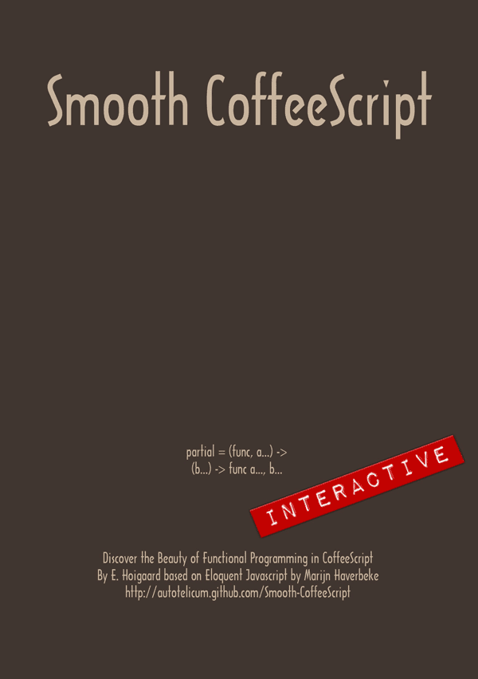
Scratch card disclaimer: Using a coin may cause damage to your screen.
View Solution
Smooth CoffeeScript — Interactive Edition
An introduction to programming in CoffeeScript with an emphasis on clarity and abstraction.
This edition requires an HTML5 web browser. It is meant as a gift to welcome you into the wondrous world of programming. You can provide feedback or have a look at the ghost in the machine: Grimoire. It is ifself an interactive literate document.
The source of this book is a literate markdown program/document which produces this code: CoffeeScript, that translates into JavaScript and produces this output.
The book is freely (CCBYSA) available, and may be used (as a whole or in parts) in any way you see fit, as long as credit is given to the original author. Interactive edition & illustrations by E. Hoigaard1 © 2555 BE / 2012 CE. Source code, static HTML and PDF editions at: http://autotelicum.github.com/Smooth-CoffeeScript.
○•○
Table of Contents
Part I. Preface
Foreword
CoffeeScript is a lucid evolution of JavaScript created by Jeremy Ashkenas. This book attempts to be an evolution of “Eloquent JavaScript” by Marijn Haverbeke. Apart from the major change in explaining CoffeeScript instead of JavaScript, numerous other changes have been made and sections have been added, edited or removed.
Everything that is expressed in this book is therefore solely the responsibility of the editor. In the sense of open source software, this book is a fork. To read the excellent original JavaScript work as it was intended by its author refer to Eloquent JavaScript by Marijn Haverbeke.
You do not need to know JavaScript but after reading Smooth CoffeeScript you can in JavaScript Basics by Rebecca Murphey find an overview that can be helpful when debugging or using JavaScript libraries.
○•○
The program examples in this book live in an interactive environment where you can change the examples and create new solutions while you learn CoffeeScript. The environment also includes the Underscore functional library, the Coffeekup HTML markup, and qc, a QuickCheck based testing library. These libraries extend CoffeeScript with useful abstractions and testing tools to keep focus on the task at hand instead of distracting boilerplate code.
While it is possible to express programs from a very small set of language primitives, it quickly becomes tedious and error prone to do so. The approach taken here is to include a broader set of functional building blocks as if they were a native part of the programming language. By thinking in terms of these higher level constructs more complex problems can be handled with less effort.
To ensure correctness testing is required. This is especially true when developing reusable algorithms in a dynamic and untyped language. By integrating QuickCheck style test cases as soon as functions are introduced, it is intended that writing tests and declaring assumptions become a seamless part of writing software.
○•○
CoffeeScript is available in browsers and environments where JavaScript is available. The screenshots below show CoffeeScript running the same web server and client application on Mac OS X, Windows and iOS.
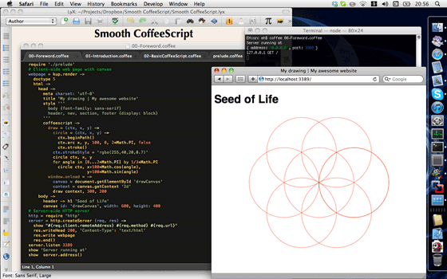
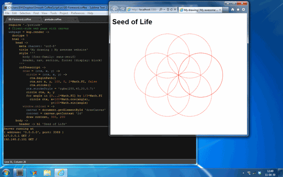
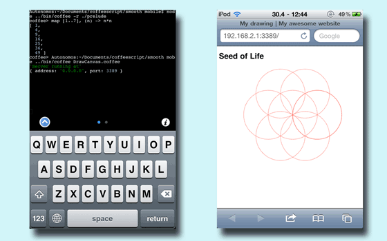
The CoffeeScript below shows the brevity of the self-contained application from the screenshots. It contains an HTML 5 web page in Coffeekup markup and its own HTTP web server. The page has a Canvas element with a drawing of the ‘Seed of Life’. Coffeekup is a few hundred lines of CoffeeScript. No frameworks. No JavaScript. Pure and smooth.
webdesign = ->
doctype 5
html ->
head ->
meta charset: 'utf-8'
title 'My drawing | My awesome website'
style '''
body {font-family: sans-serif}
header, nav, section, footer {display: block}
'''
coffeescript ->
draw = (ctx, x, y) ->
circle = (ctx, x, y) ->
ctx.beginPath()
ctx.arc x, y, 100, 0, 2*Math.PI, false
ctx.stroke()
ctx.strokeStyle = 'rgba(255,40,20,0.7)'
circle ctx, x, y
for angle in [0...2*Math.PI] by 1/3*Math.PI
circle ctx, x+100*Math.cos(angle),
y+100*Math.sin(angle)
window.onload = ->
canvas = document.getElementById 'drawCanvas'
context = canvas.getContext '2d'
draw context, 300, 200
body ->
header -> h1 'Seed of Life'
canvas id: 'drawCanvas', width: 550, height: 400
kup = if exports? then require 'coffeekup' else CoffeeKup
webpage = kup.render webdesign, format:on
showDocument webpage, 565, 500An accompanying web server can be written as easy as:
http = require 'http'
server = http.createServer (req, res) ->
show "#{req.client.remoteAddress} #{req.method} #{req.url}"
res.writeHead 200, 'Content-Type': 'text/html'
res.write webpage
res.end()
server.listen 3389
show 'Server running at'
show server.address()Getting Started
You do not need to install anything to learn CoffeeScript and complete this book … as long as you have an up-to-date standard compliant HTML5 web browser.2
If you are new to programming then I recommend that you read through the book sequentially and solve the exercises along the way. If you already know JavaScript, then you can choose to read through the language overview at coffeescript.org and skip forward to solve some of the exercises in the Paradigm chapters.
In this Interactive Edition almost all examples3 can be edited and the changes you make take effect instantly. To open an editor, touch or click on the program text in the example.
You can choose to disable automatic evaluation in the menu at the top of this page; then you will have to use a keystroke combination instead.4 There you can also choose between editing in a plain text area or with the embedded CodeMirror editor. If you have a compatible browser then try the CodeMirror option — it has syntax highlighting and semi-automatic indentation.
Tip: Some browsers may become unresponsive when running for example a never ending loop — so save work you may have in other tabs before proceeding. Should it happen then refresh this web page or restart your browser.
Some of the examples in the last chapter of the book show WebSockets — it is optional but to run them you need a compatible browser and CoffeeScript on your system. Installing CoffeeScript on Windows and Mac OS X is easy, see the couple of steps involved in Quick CoffeeScript Install. You get a Read-Eval-Print-Loop (REPL), a commandline interpreter and compiler that can watch for file changes and compile your CoffeeScript modules whenever you save them.
○•○
You will encounter some functions and symbols that are not part of CoffeeScript when you read through the rest of the book. They are needed to run the interactive environment and are explained as they are introduced. The following tables summarize them:
| Function | Action |
|---|---|
show/view |
serialized object without or with a return value |
showDocument |
embeds an HTML web page inside this web page |
runOnDemand |
creates a ‘Run’ button; click it to try the code |
confirm |
displays a question and ‘Yes’ and ‘No’ buttons |
prompt |
displays a message and an input field |
| Symbol | Explanation |
|---|---|
→ |
normal output from show/view functions |
⇒ |
asynchronous output from display functions |
↵ |
return value from an executed code block |
☕ |
timing information if enabled |
Included software
The CoffeeScript language (MIT) from Jeremy Ashkenas
The Underscore library (MIT) from DocumentCloud
The Coffeekup library (MIT) from Maurice Machado
The
qctesting library (BSD) from Darrin Thompson
Software version details
View Solution
Interactive environment details
View Solution
Part II. Language
Introduction
When personal computers were first introduced, most of them came equipped with a simple programming language, usually a variant of BASIC. Interacting with the computer was closely integrated with this language, and thus every computer-user, whether he wanted to or not, would get a taste of it. Now that computers have become plentiful and cheap, typical users do not get much further than clicking things with a mouse. For most people, this works very well. But for those of us with a natural inclination towards technological tinkering, the removal of programming from every-day computer use presents something of a barrier.
Fortunately, as an effect of developments in the World Wide Web, it so happens that every computer equipped with a modern web-browser also has an environment for programming JavaScript which can easily be adapted to an environment for CoffeeScript. In today’s spirit of not bothering the user with technical details, it is kept well hidden, but a web-page can make it accessible, and use it as a platform for learning to program. This is such a page.
○•○
I do not enlighten those who are not eager to learn, nor arouse those who are not anxious to give an explanation themselves. If I have presented one corner of the square and they cannot come back to me with the other three, I should not go over the points again.
Confucius
Besides explaining CoffeeScript, this book tries to be an introduction to the basic principles of programming. Programming, it turns out, is hard. The fundamental rules are, most of the time, simple and clear. But programs, while built on top of these basic rules, tend to become complex enough to introduce their own rules, their own complexity. Because of this, programming is rarely simple or predictable. As Donald Knuth, who is something of a founding father of the field, says, it is an art.
To get something out of this book, more than just passive reading is required. Try to stay sharp, make an effort to solve the exercises, and only continue on when you are reasonably sure you understand the material that came before.
○•○
The computer programmer is a creator of universes for which he alone is responsible. Universes of virtually unlimited complexity can be created in the form of computer programs.
Joseph Weizenbaum, Computer Power and Human Reason
A program is many things. It is a piece of text typed by a programmer, it is the directing force that makes the computer do what it does, it is data in the computer’s memory, yet it controls the actions performed on this same memory. Analogies that try to compare programs to objects we are familiar with tend to fall short, but a superficially fitting one is that of a machine. The gears of a mechanical watch fit together ingeniously, and if the watchmaker was any good, it will accurately show the time for many years. The elements of a program fit together in a similar way, and if the programmer knows what he is doing, the program will run without crashing.
A computer is a machine built to act as a host for these immaterial machines. Computers themselves can only do stupidly straightforward things. The reason they are so useful is that they do these things at an incredibly high speed. A program can, by ingeniously combining many of these simple actions, do very complicated things.
To some of us, writing computer programs is a fascinating game. A program is a building of thought. It is costless to build, weightless, growing easily under our typing hands. If we get carried away, its size and complexity will grow out of control, confusing even the one who created it. This is the main problem of programming. It is why so much of today’s software tends to crash, fail, screw up.
When a program works, it is beautiful. The art of programming is the skill of controlling complexity. The great program is subdued, made simple in its complexity.
○•○
Today, many programmers believe that this complexity is best managed by using only a small set of well-understood techniques in their programs. They have composed strict rules about the form programs should have, and the more zealous among them will denounce those who break these rules as bad programmers.
What hostility to the richness of programming! To try to reduce it to something straightforward and predictable, to place a taboo on all the weird and beautiful programs. The landscape of programming techniques is enormous, fascinating in its diversity, still largely unexplored.
It is certainly littered with traps and snares, luring the inexperienced programmer into all kinds of horrible mistakes, but that only means you should proceed with caution, keep your wits about you. As you learn, there will always be new challenges, new territory to explore. The programmer who refuses to keep exploring will surely stagnate, forget his joy, lose the will to program (and become a manager).
As far as I am concerned, the definite criterion for a program is whether it is correct. Efficiency, clarity, and size are also important, but how to balance these against each other is always a matter of judgement, a judgement that each programmer must make for himself. Rules of thumb are useful, but one should never be afraid to break them.
○•○
In the beginning, at the birth of computing, there were no programming languages. Programs looked something like this:
00110001 00000000 00000000 00110001 00000001 00000001
00110011 00000001 00000010 01010001 00001011 00000010
00100010 00000010 00001000 01000011 00000001 00000000
01000001 00000001 00000001 00010000 00000010 00000000
01100010 00000000 00000000
That is a program to add the numbers from one to ten together, and print out the result (1 + 2 + … + 10 = 55). It could run on a very simple kind of computer. To program early computers, it was necessary to set large arrays of switches in the right position, or punch holes in strips of cardboard and feed them to the computer. You can imagine how this was a tedious, error-prone procedure. Even the writing of simple programs required much cleverness and discipline, complex ones were nearly inconceivable.
Of course, manually entering these arcane patterns of bits (which is what the 1s and 0s above are generally called) did give the programmer a profound sense of being a mighty wizard. And that has to be worth something, in terms of job satisfaction.
Each line of the program contains a single instruction. It could be written in English like this:
1 Store the number 0 in memory location 0
2 Store the number 1 in memory location 1
3 Store the value of memory location 1 in location 2
4 Subtract the number 11 from the value in location 2
5 If the value in memory location 2 is the number 0,
continue with instruction 9
6 Add the value of memory location 1 to location 0
7 Add the number 1 to the value of memory location 1
8 Continue with instruction 3
9 Output the value of memory location 0
While that is more readable than the binary soup, it is still rather unpleasant. It might help to use names instead of numbers for the instructions and memory locations:
Set 'total' to 0
Set 'count' to 1
[loop]
Set 'compare' to 'count'
Subtract 11 from 'compare'
If 'compare' is zero, continue at [end]
Add 'count' to 'total'
Add 1 to 'count'
Continue at [loop]
[end]
Output 'total'
At this point it is not too hard to see how the program works. Can you? The first two lines give two memory locations their starting values: total will be used to build up the result of the program, and count keeps track of the number that we are currently looking at. The lines using compare are probably the weirdest ones. What the program wants to do is see if count is equal to 11, in order to decide whether it can stop yet. Because the machine is so primitive, it can only test whether a number is zero, and make a decision (jump) based on that. So it uses the memory location labelled compare to compute the value of count - 11, and makes a decision based on that value. The next two lines add the value of count to the result, and increment count by one every time the program has decided that it is not 11 yet. Here is the same program in CoffeeScript:
total = 0
count = 1
while count <= 10
total += count
count += 1
totalThis gives us a few more improvements. Most importantly, there is no need to specify the way we want the program to jump back and forth anymore. The magic word while takes care of that. It continues executing the lines indented below it as long as the condition it was given holds: count <= 10, which means ‘count is less than or equal to 10’. Apparently, there is no need anymore to create a temporary value and compare that to zero. This was a stupid little detail, and the power of programming languages is that they take care of stupid little details for us.
This can also be expressed in a shorter form in CoffeeScript:
total = 0
total += count for count in [1..10]
totalThe for and in words goes through the range of numbers from 1 to 10 [1..10], assigning each number in turn to count. Each value in count is then added to total.
Finally, here is what the program could look like if we happened to have the convenient operation sum available, which computes the sum of a collection of numbers similar to the mathematical notation :
sum [1..10]View Solution
Another possibility is to have functions attached to datatypes. Here a sum function is attached to an array, giving the sum of the elements in the array.
[1..10].sum()View Solution
The moral of this story, then, is that the same program can be expressed in long and short, unreadable and readable ways. The first version of the program was extremely obscure, while the last ones are almost English: show the sum of the numbers from 1 to 10. (We will see in later chapters how to build things like sum.)
A good programming language helps the programmer by providing a more abstract way to express himself. It hides uninteresting details, provides convenient building blocks (such as the while construct), and, most of the time, allows the programmer to add building blocks himself (such as the sum operation).
○•○
JavaScript is the language that is, at the moment, mostly being used to do all kinds of clever and horrible things with pages on the World Wide Web. JavaScript is also used for scripting in a variety of applications and operating systems. Of special note is server-side JavaScript (SSJS), where the server portion of a web application is written in JavaScript, so a full application can be expressed in one programming language. CoffeeScript generates standard JavaScript code and can therefore be used in environments where standard JavaScript is accepted. It means that both browser portions and server portions can be written in CoffeeScript.
CoffeeScript is a new language so it remains to be seen how popular it becomes for general application development, but if you are interested in programming, CoffeeScript is definitely a useful language to learn. Even if you do not end up doing much web programming, the mind-bending programs in this book will always stay with you, haunt you, and influence the programs you write in other languages.
There are those who will say terrible things about JavaScript. Many of these things are true. When I was for the first time required to write something in JavaScript, I quickly came to despise the language. It would accept almost anything I typed, but interpret it in a way that was completely different from what I meant. This had a lot to do with the fact that I did not have a clue what I was doing, but there is also a real issue here: JavaScript is ridiculously liberal in what it allows. The idea behind this design was that it would make programming in JavaScript easier for beginners. In actuality, it mostly makes finding problems in your programs harder, because the system will not point them out to you.
However, the flexibility of the language is also an advantage. It leaves space for a lot of techniques that are impossible in more rigid languages, and it can be used to overcome some of JavaScript’s shortcomings. After learning it properly, and working with it for a while, I have really learned to like this language. CoffeeScript repairs many of the confusing and cumbersome aspects of JavaScript, while keeping its underlying flexibility and beauty. It is doubleplusgood.
○•○
Most chapters in this book contain quite a lot of code5. In my experience, reading and writing code is an important part of learning to program. Try to not just glance over these examples, but read them attentively and understand them. This can be slow and confusing at first, but you will quickly get the hang of it. The same goes for the exercises. Do not assume you understand them until you have actually written a working solution.
Because of the way the web works, it is always possible to look at the JavaScript programs that people put in their web-pages. This can be a good way to learn how some things are done. Because most web programmers are not ‘professional’ programmers, or consider JavaScript programming so uninteresting that they never properly learned it, a lot of the code you can find like this is of a very bad quality. When learning from ugly or incorrect code, the ugliness and confusion will propagate into your own code, so be careful who you learn from. Another source of programs are CoffeeScript projects hosted on open source services such as github.
Basic CoffeeScript:
values, variables, and control flow
Inside the computer’s world, there is only data. That which is not data, does not exist. Although all data is in essence just a sequence of bits6, and is thus fundamentally alike, every piece of data plays its own role. In CoffeeScript’s system, most of this data is neatly separated into things called values. Every value has a type, which determines the kind of role it can play. There are six basic types of values: Numbers, strings, booleans, objects, functions, and undefined values.
To create a value, one must merely invoke its name. This is very convenient. You do not have to gather building material for your values, or pay for them, you just call for one and woosh, you have it. They are not created from thin air, of course. Every value has to be stored somewhere, and if you want to use a gigantic amount of them at the same time you might run out of computer memory. Fortunately, this is only a problem if you need them all simultaneously. As soon as you no longer use a value, it will dissipate, leaving behind only a few bits. These bits are recycled to make the next generation of values.
○•○
Values of the type number are, as you might have deduced, numeric values. They are written the way numbers are usually written:
144Enter that in the console, and the same thing is printed in the output window. The text you typed in gave rise to a number value, and the console took this number and wrote it out to the screen again. In a case like this, that was a rather pointless exercise, but soon we will be producing values in less straightforward ways, and it can be useful to ‘try them out’ on the console to see what they produce.
This is what 144 looks like in bits7:
01000000 01100010 00000000 00000000 00000000 00000000 00000000 00000000
The number above has 64 bits. Numbers in CoffeeScript always do. This has one important repercussion: There is a limited amount of different numbers that can be expressed. With three decimal digits, only the numbers 0 to 999 can be written, which is 103 = 1000 different numbers. With 64 binary digits, 264 different numbers can be written. This is a lot, more than 1019 (a one with nineteen zeros).
Not all whole numbers below 1019 fit in a CoffeeScript number though. For one, there are also negative numbers, so one of the bits has to be used to store the sign of the number. A bigger issue is that non-whole numbers must also be represented. To do this, 11 bits are used to store the position of the decimal dot within the number.
That leaves 52 bits8. Any whole number less than 252, which is over 1015, will safely fit in a CoffeeScript number. In most cases, the numbers we are using stay well below that, so we do not have to concern ourselves with bits at all. Which is good. I have nothing in particular against bits, but you do need a terrible lot of them to get anything done. When at all possible, it is more pleasant to deal with bigger things.
Fractional numbers are written by using a dot.
9.81For very big or very small numbers, one can also use ‘scientific’ notation by adding an e, followed by the exponent of the number:
2.998e8Which is 2.998 ⋅ 108 = 299 800 000.
Calculations with whole numbers (also called integers) that fit in 52 bits are guaranteed to always be precise. Unfortunately, calculations with fractional numbers are generally not. Like π (pi) can not be precisely expressed by a finite amount of decimal digits, many numbers lose some precision when only 64 bits are available to store them. This is a shame, but it only causes practical problems in very specific situations9. The important thing is to be aware of it, and treat fractional digital numbers as approximations, not as precise values.
○•○
The main thing to do with numbers is arithmetic. Arithmetic operations such as addition or multiplication take two number values and produce a new number from them. Here is what they look like in CoffeeScript:
100 + 4 * 11The + and * symbols are called operators. The first stands for addition, and the second for multiplication. Putting an operator between two values will apply it to those values, and produce a new value.
Does the example mean ‘add 4 and 100, and multiply the result by 11’, or is the multiplication done before the adding? As you might have guessed, the multiplication happens first. But, as in mathematics, this can be changed by wrapping the addition in parentheses:
(100 + 4) * 11For subtraction, there is the - operator, and division can be done with /. When operators appear together without parentheses, the order in which they are applied is determined by the precedence of the operators. The first example shows that multiplication has a higher precedence than addition. Division and multiplication always come before subtraction and addition. When multiple operators with the same precedence appear next to each other (1 - 1 + 1) they are applied left-to-right.
Try to figure out what value this produces, and then copy it to the next field to see if you were correct…
115 * 4 - 4 + 88 / 2Touch or click in the following field to write in it. To evaluate some CoffeeScript, either just type it in Auto Evaluation mode or press ↑ / ↩ (Shift/Enter) while in the field in manual mode.
# Compose a solution hereThese rules of precedence are not something you should worry about. When in doubt, just add parentheses.
There is one more arithmetic operator which is probably less familiar to you. The % symbol is used to represent the modulo operation. X modulo Y is the remainder of dividing X by Y. For example 314 % 100 is 14, 10 % 3 is 1, and 144 % 12 is 0. Modulo has the same precedence as multiplication and division.
○•○
The next data type is the string. Its use is not as evident from its name as with numbers, but it also fulfills a very basic role. Strings are used to represent text, the name supposedly derives from the fact that it strings together a bunch of characters. Strings are written by enclosing their content in quotes:
'Patch my boat with chewing gum.'Almost anything can be put between quotes, and CoffeeScript will make a string value out of it. But a few characters are tricky. You can imagine how putting quotes between quotes might be hard.
'The programmer pondered: "0x2b or not 0x2b"'CoffeeScript implements both single quoted and double quoted strings, which can be handy when you have only one kind of quote in a string.
"Aha! It's 43 if I'm not a bit off"Double quoted strings can contain interpolated values, small snippets of CoffeeScript code between #{ and }. The code is evaluated and inserted into the string.
"2 + 2 gives #{2 + 2}"Newlines, the things you get when you press enter, can not be put between quotes in the normal form of strings. A string can span multiple lines to help avoid overly long lines in the program but the line breaks are not shown in the output.
'Imagine if this was a
very long line of text'○•○
CoffeeScript has triple-quoted strings aka heredocs to make it easy to have strings that span multiple lines where the line breaks are preserved in the output. Indentation before the quotes are ignored so the following lines can be aligned nicely.
'''First comes A
then comes B'''The triple double quoted variant allows for interpolated values.
"""Math 101:
1
+ 1
---
#{1 + 1}"""Still to be able to have special characters in a string, the following trick is used: Whenever a backslash (‘\’) is found inside quoted text, it indicates that the character after it has a special meaning. A quote that is preceded by a backslash will not end the string, but be part of it. When an ‘n’ character occurs after a backslash, it is interpreted as a newline. Similarly, a ‘t’ after a backslash means a tab character.
'This is the first line\nAnd this is the second'There are of course situations where you want a backslash in a string to be just a backslash, not a special code. If two backslashes follow each other, they will collapse right into each other, and only one will be left in the resulting string value:
'A newline character is written like "\\n".'○•○
Strings can not be divided, multiplied, or subtracted. The + operator can be used on them. It does not add, but it concatenates, it glues two strings together.
'con' + 'cat' + 'e' + 'nate'There are more ways of manipulating strings, but these are discussed later.
○•○
Not all operators are symbols, some are written as words. For example, the typeof operator, which produces a string value naming the type of the value you give it.
typeof 4.5The other operators we saw all operated on two values, typeof takes only one. Operators that use two values are called binary operators, while those that take one are called unary operators. The minus operator can be used both as a binary and unary operator10:
-(10 - 2)○•○
Then there are values of the boolean type. There are two of these: true and false. CoffeeScript has some aliases for them: true can be written as yes or on. false as no or off. These alternatives can in some cases make a program easier to read. Here is one way to produce a true value:
3 > 2And false can be produced like this:
3 < 2I hope you have seen the > and < signs before. They mean, respectively, ‘is greater than’ and ‘is less than’. They are binary operators, and the result of applying them is a boolean value that indicates whether they hold in this case. You can chain comparisons to test if something is within an interval. These comparisons give respectively true and false:
100 < 115 < 200100 < 315 < 200Strings can be compared in the same way:
'Aardvark' < 'Zoroaster'The way strings are ordered is more or less alphabetic. More or less… Uppercase letters are always ‘less’ than lowercase ones, so 'Z' < 'a' is true, and non-alphabetic characters (’ !’, ‘@’, etc) are also included in the ordering. The actual way in which the comparison is done is based on the Unicode standard. This standard assigns a number to virtually every character one would ever need, including characters from Greek, Arabic, Japanese, Tamil, and so on. Having such numbers is practical for storing strings inside a computer — you can represent them as a list of numbers. When comparing strings, CoffeeScript just compares the numbers of the characters inside the string, from left to right.
Other similar operators are >= (‘is greater than or equal to’), <= (‘is less than or equal to’), == (‘is equal to’), and != (‘is not equal to’). Equal to can also be written in text as is and not equal to as isnt.
'Itchy' isnt 'Scratchy'○•○
There are also some useful operations that can be applied to boolean values themselves. CoffeeScript supports three logical operators: and, or, and not. These can be used to ‘reason’ about booleans.
The logical and operator can also be written as &&. It is a binary operator, and its result is only true if both of the values given to it are true.
true and falseLogical or with alias ||, is true if either of the values given to it is true:
true or falsenot can be written as an exclamation mark, !, it is a unary operator that flips the value given to it, !true is false, and not false is true.
Exercise 1
((4 >= 6) || ('grass' != 'green')) and !(((12 * 2) == 144) and true)Is this true? For readability, there are a lot of unnecessary parentheses in there. This simple version means the same thing:
(4 >= 6 or 'grass' isnt 'green') and not(12 * 2 is 144 and true)# Compose a solution hereView Solution
It is not always obvious when parentheses are needed. In practice, one can usually get by with knowing that of the operators we have seen so far, or has the lowest precedence, then comes and, then the comparison operators ( >, ==, etcetera), and then the rest. This has been chosen in such a way that, in simple cases, as few parentheses as possible are necessary.
○•○
All the examples so far have used the language like you would use a pocket calculator. Make some values and apply operators to them to get new values. Creating values like this is an essential part of every CoffeeScript program, but it is only a part. A piece of code that produces a value is called an expression. Every value that is written directly (such as 22 or 'psychoanalysis') is an expression. An expression between parentheses is also an expression. And a binary operator applied to two expressions, or a unary operator applied to one, is also an expression.
There are a few more ways of building expressions, which will be revealed when the time is ripe.
There exists a unit that is bigger than an expression. It is called a statement. A program is built as a list of statements. Most statements end with a newline, although a statement can stretch over many lines. Statements can also end with a semicolon (;). In CoffeeScript semicolon is mostly used if you want to place multiple statements on the same line. The simplest kind of statement is an expression with a semicolon after it. This is a program:
1; not falseIt is a useless program. An expression can be content to just produce a value, but a statement only amounts to something if it somehow changes the world. It could print something to the screen — that counts as changing the world — or it could change the internal state of the program in a way that will affect the statements that come after it. These changes are called ‘side effects’. The statements in the example above just produce the values 1 and true, and then immediately throw them into the bit bucket11. This leaves no impression on the world at all, and is not a side effect.
○•○
How does a program keep an internal state? How does it remember things? We have seen how to produce new values from old values, but this does not change the old values, and the new value has to be immediately used or it will dissipate again. To catch and hold values, CoffeeScript provides a thing called a variable.
caught = 5 * 5A variable always has a name, and it can point at a value, holding on to it. The statement above creates a variable called caught and uses it to grab hold of the number that is produced by multiplying 5 by 5.
After running the above program, you can type the word caught into the console, and it will retrieve the value 25 for you. The name of a variable is used to fetch its value. caught + 1 also works. A variable name can be used as an expression, and thus can be part of bigger expressions.
Assigning a value to a new variable name with the = operator, creates the new variable. Variable names can be almost every word, but they may not include spaces. Digits can be part of variable names, catch22 is a valid name, but the name must not start with one. The characters ‘$’ and ‘_’ can be used in names as if they were letters, so $_$ is a correct variable name.
When a variable points at a value, that does not mean it is tied to that value forever. At any time, the = operator can be used on existing variables to yank them away from their current value and make them point to a new one.
caught = 4 * 4○•○
You should imagine variables as tentacles, rather than boxes. They do not contain values, they grasp them — two variables can refer to the same value. Only the values that the program still has a hold on can be accessed by it. When you need to remember something, you grow a tentacle to hold on to it, or re-attach one of your existing tentacles to a new value:
To remember the amount of dollars that Luigi still owes you, you could use a variable… Then, every time Luigi pays something back, this amount can be decremented by giving the variable a new number:
luigiDebt = 140
luigiDebt = luigiDebt - 35The collection of variables and their values that exist at a given time is called the environment. When a program starts up, this environment is not empty. It always contains a number of standard variables.
If you install CoffeeScript and use the coffee command line program to execute a CoffeeScript program or run the interactive environment with coffee -r ./prelude then the environment is called global. You can view it by typing: →∣ / ‘Tab’. When your browser loads a page, it creates a new environment called window and attaches these standard values to it. The variables created and modified by programs on that page survive until the browser goes to a new page.12
○•○
A lot of the values provided by the standard environment have the type ‘function’. A function is a piece of program wrapped in a value. Generally, this piece of program does something useful, which can be evoked using the function value that contains it. In the development environment, the variable show holds a function that shows a message in the terminal or command line window. You can use it like this:
show 'Also, your hair is on fire.'Executing the code in a function is called invoking or applying it. The notation for doing this is the function name followed by parentheses or a comma separated list of values. Every expression that produces a function value can be invoked by putting parentheses after it. The parentheses can be left out when values are passed. The string value is given to the function, which uses it as the text to show in the console window. Values given to functions are called parameters or arguments. show needs only one of them, but other functions might need a different number.
○•○
Showing a message is a side effect. A lot of functions are useful because of the side effects they produce. It is also possible for a function to produce a value, in which case it does not need to have a side effect to be useful. For example, there is a function Math.max, which takes two arguments and gives back the biggest of the two:
show Math.max 2, 4When a function produces a value, it is said to return it. Because things that produce values are always expressions in CoffeeScript, function calls can be used as a part of bigger expressions:
show 100 + Math.max 7, 4
show Math.max(7, 4) + 100
show Math.max(7, 4 + 100)
show Math.max 7, 4 + 100When parentheses are left out from a function call then CoffeeScript implicitly inserts them stretching to the end of the line. In the example above it means that the first two lines gives the answer 107 and the last two 104. So depending on your intention you may have to use parentheses to get the result you want. Functions↓ discusses writing your own functions.
○•○
As the previous examples illustrated, show can be useful for showing the result of an expression. show is not a standard CoffeeScript function, browsers do not provide it for you, it is made available by the interactive environment. When you create your own programs in the web browser, you can instead use alert to pop up a dialog with a message or console.log to direct output to your browsers built-in console.
We will continue in the CoffeeScript environment. show tries to display its argument the way it would look in a program, which can give more information about the type of a value. In an interactive console, started with coffee -r ./prelude, you can explore the environment or you can try it right here:
show Math.PI
show console if console?
show showDocumentWhat the output means is not so important for now. show is a tool that can give you details on the things in your programs, which can be handy later, if something does not behave the way you had expected. A variant of show is view it returns the value it displays. That can be helpful when you want to see what is going on inside a long expression.
show 1 + 2 + 3 + 4 + 5 + view 6 + 7○•○
The environment provided by browsers contains a few more functions for popping up windows. You can ask the user an OK/Cancel question using confirm. This returns a boolean, true if the user presses ‘OK’, and false if he presses ‘Cancel’. The interactive environment has a similar confirm function where the user is asked yes or no to a question. It displays the question and its buttons inline in the output.
Blocking a user interface with a question should only happen when getting an answer right now is really critical. None of the questions on this page are, you can continue reading without answering any of them. In a CoffeeScript server, a question should normally not stop the process and wait for a user to reply. Instead the program continues running the code following the function call. Eventually when the user has answered the question, then a function given as an argument is called with the answer. This piece of code involves a bit of magic, that will be explained in Functions↓. While it is more complicated for this use, we will in later chapters see that it makes perfect sense for web applications with many users and in responsive user interfaces.
confirm 'Shall we, then?', (answer) -> show answerPrompt
prompt can be used to ask an ‘open’ question. The first argument is the question, the second one is the text that the user starts with. A line of text can be typed into the window, and the function will — in a browsers’ default implementation — return this as a string. As with confirm the interactive environment offers a similar function, that takes a third argument which will receive the answer.
prompt 'Tell us everything you know', '...',
(answer) -> show 'So you know: ' + answer○•○
It is possible to give almost every variable in the environment a new value. This can be useful, but also dangerous. If you give show the value 8, you will not be able to show things anymore. You can refresh this web page to start over. If your browser supports offline web apps then you can even refresh this web page when you are somewhere without internet - this works for example on iOS 5. Some functions like confirm and prompt also work when you run your program from a file, but they interact poorly with the server environment. So should you try these examples there, then fortunately… you can stop a server program with CTRL-C and pick up where you left off.
○•○
One-line programs are not very interesting. When you put more than one statement into a program, the statements are, predictably, executed one at a time, from top to bottom.
prompt 'Pick a number', '', (answer) ->
theNumber = Number answer
show 'Your number is the square root of ' +
(theNumber * theNumber)The function Number converts a value to a number, which is needed in this case because the answer from prompt is a string value. There are similar functions called String and Boolean which convert values to those types.
○•○
Consider a program that prints out all even numbers from 0 to 12. One way to write this is:
show 0
show 2
show 4
show 6
show 8
show 10
show 12That works, but the idea of writing a program is to make something less work, not more. If we needed all even numbers below 1000, the above would be unworkable. What we need is a way to automatically repeat some code.
currentNumber = 0
while currentNumber <= 12
show currentNumber
currentNumber = currentNumber + 2You may have seen while in the Introduction↑ chapter. A statement starting with the word while creates a loop. A loop is a disturbance in the sequence of statements, it may cause the program to repeat some statements multiple times. In this case, the word while is followed by an expression, which is used to determine whether the loop will loop or finish. As long as the boolean value produced by this expression is true, the code in the loop is repeated. As soon as it is false, the program goes to the bottom of the loop and continues as normal.
The variable currentNumber demonstrates the way a variable can track the progress of a program. Every time the loop repeats, it is incremented by 2, and at the beginning of every repetition, it is compared with the number 12 to decide whether to keep on looping.
The third part of a while statement is another statement. This is the body of the loop, the action or actions that must take place multiple times. Indentation is used to group statements into blocks. To the world outside the block, a block counts as a single statement. In the example, this is used to include in the loop both the call to show and the statement that updates currentNumber.
If we did not have to print the numbers, the program could have been:
counter = 0
while counter <= 12 then counter = counter + 2Here, counter = counter + 2 is the statement that forms the body of the loop. The then keyword separates the boolean from the body, so both can be on the same line.
Exercise 2
Use the techniques shown so far to write a program that calculates and shows the value of 210 (2 to the 10th power). You are, obviously, not allowed to use a cheap trick like just writing 2 * 2 * ...
If you are having trouble with this, try to see it in terms of the even-numbers example. The program must perform an action a certain amount of times. A counter variable with a while loop can be used for that. Instead of printing the counter, the program must multiply something by 2. This something should be another variable, in which the result value is built up.
Do not worry if you do not quite see how this would work yet. Even if you perfectly understand all the techniques this chapter covers, it can be hard to apply them to a specific problem. Reading and writing code will help develop a feeling for this, so study the solution, and try the next exercise.
# Compose a solution hereView Solution
Exercise 3
With some slight modifications, the solution to the previous exercise can be made to draw a triangle. And when I say ‘draw a triangle’ I mean ‘print out some text that almost looks like a triangle when you squint’.
Print out ten lines. On the first line there is one ‘#’ character. On the second there are two. And so on.
How does one get a string with X ‘#’ characters in it? One way is to build it every time it is needed with an ‘inner loop’ — a loop inside a loop. A simpler way is to reuse the string that the previous iteration of the loop used, and add one character to it.
# Compose a solution hereView Solution
You will have noticed the spaces I put in front of some statements. These are required: The level of indentation decides which block a line belongs to. The role of the indentation inside blocks is to make the structure of the code clearer to a reader. Because new blocks can be opened inside other blocks, it can become hard to see where one block ends and another begins if they were not indented. When lines are indented, the visual shape of a program corresponds to the shape of the blocks inside it. I like to use two spaces for every open block, but tastes differ. If a line becomes too long, then you can split it between two words or place a \ at the end of the line and continue on the next.
○•○
The uses of while we have seen so far all show the same pattern. First, a ‘counter’ variable is created. This variable tracks the progress of the loop. The while itself contains a check, usually to see whether the counter has reached some boundary yet. Then, at the end of the loop body, the counter is updated.
A lot of loops fall into this pattern. For this reason, CoffeeScript, and similar languages, also provide a slightly shorter and more comprehensive form:
for number in [0..12] by 2 then show numberThis program is exactly equivalent to the earlier even-number-printing example. The only change is that all the statements that are related to the ‘state’ of the loop are now on one line. The numbers in square brackets are a range [4..7], a list of numbers starting from the first number and going up one by one to the last. A range with two dots includes the last number in the list (4,5,6,7), with three dots [4...7] the last number is excluded (4,5,6). The amount of each step can be changed with the by keyword. So [2..6] by 2 gives the list (2,4,6). Ranges can also decrement if the first number is largest, or involve negative numbers or floating point numbers.
The number in the for comprehension take on each successive value from the range during each turn through the loop. The number value is then available in the loop body where it can be used in computations or as here in show number. In most cases this is shorter and clearer than a while construction.
The for comprehension can take on other forms as well.
# For with indented body
for number in [0..12] by 2
show numberAnother is that the body of the loop can be given before the for statement.
# For with prepended body
show number for number in [0..12] by 2○•○
The lines that starts with ‘#’ in the previous example might have looked a bit suspicious to you. It is often useful to include extra text in a program. The most common use for this is adding some explanations in human language to a program.
# The variable counter, which is about to be defined,
# is going to start with a value of 0, which is zero.
counter = 0
# Now, we are going to loop, hold on to your hat.
while counter < 100 # counter is less than one hundred
###
Every time we loop, we INCREMENT the value of counter
Seriously, we just add one to it.
###
counter++
# And then, we are done.This kind of text is called a comment. The rules are like this: ‘#’ starts a comment, which goes on until the end of the line. ‘###’ starts another kind of comment that goes on until a ‘###’ is found so it can stretch over multiple lines.
As you can see, even the simplest programs can be made to look big, ugly, and complicated by simply adding a lot of comments to them.
○•○
I have been using some rather odd capitalisation in some variable names. Because you can not have spaces in these names — the computer would read them as two separate variables — your choices for a name that is made of several words are more or less limited to the following:
fuzzylittleturtle FuzzyLittleTurtle
fuzzy_little_turtle fuzzyLittleTurtle
The first one is hard to read. Personally, I like the one with the underscores, though it is a little painful to type. However, since CoffeeScript evolved from JavaScript, most CoffeeScript programmers follow the JavaScript convention with the last one. Its the one used by the standard JavaScript functions. It is not hard to get used to little things like that, so I will just follow the crowd and capitalise the first letter of every word after the first.
In a few cases, such as the Number function, the first letter of a variable is also capitalised. This was done to mark this function as a constructor. What a constructor is will become clear in Object Orientation↓. For now, the important thing is not to be bothered by this apparent lack of consistency.
○•○
Note that names that have a special meaning, such as while, and for may not be used as variable names. These are called keywords. There are also a number of words which are ‘reserved for use’ in future versions of JavaScript and CoffeeScript. These are also officially not allowed to be used as variable names, though some environments do allow them. The full list in Reserved Words↓ is rather long.
Do not worry about memorising these for now, but remember that this might be the problem when something does not work as expected. In my experience, char (to store a one-character string) and class are the most common names to accidentally use.
Exercise 4
Rewrite the solutions of the previous two exercises to use for instead of while.
# Compose a solution hereView Solution
A program often needs to ‘update’ a variable with a value that is based on its previous value. For example counter = counter + 1. CoffeeScript provides a shortcut for this: counter += 1. This also works for many other operators, for example result *= 2 to double the value of result, or counter -= 1 to count downwards. counter++ and counter-- are shorter versions of counter += 1 and counter -= 1.
○•○
Loops are said to affect the control flow of a program. They change the order in which statements are executed. In many cases, another kind of flow is useful: skipping statements.
We want to show all numbers between 0 and 20 which are divisible both by 3 and by 4.
for counter in [0..20]
if counter % 3 is 0 and counter % 4 is 0
show counterThe keyword if is not too different from the keyword while: It checks the condition it is given, and executes the statement after it based on this condition. But it does this only once, so that the statement is executed zero or one time.
The trick with the modulo (%) operator is an easy way to test whether a number is divisible by another number. If it is, the remainder of their division, which is what modulo gives you, is zero.
If we wanted to print all of the numbers between 0 and 20, but put parentheses around the ones that are not divisible by 4, we can do it like this:
for counter in [0..20]
if counter % 4 is 0
show counter
if counter % 4 isnt 0
show '(' + counter + ')'But now the program has to determine whether counter is divisible by 4 two times. The same effect can be gotten by appending an else part after an if statement. The else statement is executed only when the if’s condition is false.
for counter in [0..20]
if counter % 4 is 0
show counter
else
show '(' + counter + ')'To stretch this trivial example a bit further, we now want to print these same numbers, but add two stars after them when they are greater than 15, one star when they are greater than 10 (but not greater than 15), and no stars otherwise.
for counter in [0..20]
if counter > 15
show counter + '**'
else if counter > 10
show counter + '*'
else
show counterThis demonstrates that you can chain if statements together. In this case, the program first looks if counter is greater than 15. If it is, the two stars are printed and the other tests are skipped. If it is not, we continue to check if counter is greater than 10. Only if counter is also not greater than 10 does it arrive at the last show statement.
Exercise 5
Write a program to ask yourself, using prompt, what the value of 2 + 2 is. If the answer is ‘4’, use show to say something praising. If it is ‘3’ or ‘5’, say ‘Almost!’. In other cases, say something mean. Refer back↑ for the little bit of magic needed with prompt.
# Compose a solution hereView Solution
The logic tests in a program can become complicated. To help write conditions clearly CoffeeScript provides a couple of variations on the if statement: The body of an if statement can be placed before the condition. And an if not can be written as unless.
fun = on
show 'The show is on!' unless fun is off○•○
When a loop does not always have to go all the way through to its end, the break keyword can be useful. It immediately jumps out of the current loop, continuing after it. This program finds the first number that is greater than 20 and divisible by 7:
current = 20
loop
if current % 7 is 0
break
current++
show currentThe loop construct does not have a part that checks for the end of the loop. It is the same as while true. This means that it is dependent on the break statement inside it to ever stop. The same program could also have been written as simply…
current = 20
current++ until current % 7 is 0
show currentIn this case, the body of the loop comes before the loop test. The until keyword is similar to the unless keyword, but translates into while not. The only effect of the loop is to increment the variable current to its desired value. But I needed an example that uses break, so pay attention to the first version too.
Exercise 6
Pick a lucky number from 1 to 6 then keep rolling a simulated die, until your lucky number comes up. Count the number of rolls. Use a loop and optionally a break. Casting a die can be simulated with:
roll = Math.floor Math.random() * 6 + 1Note that loop is the same as while true and both can be used to create a loop that does not end on its own account. Writing while true is a useful trick but a bit silly, you ask the program to loop as long as true is true, so the preferred way is to write loop.
# Compose a solution hereView Solution
In the second solution to the previous exercise roll has not been set to a value the first time through the loop. It is only assigned a value in the next statement. What happens when you take the value of this variable?
show mysteryVariable
mysteryVariable = 'nothing'In terms of tentacles, this variable ends in thin air, it has nothing to grasp. When you ask for the value of an empty place, you get a special value named undefined. Functions which do not return an interesting value, such as the show function also return an undefined value. Most things in CoffeeScript however return a value, even most statements.
show show 'I am a side effect.'There is a similar value, null, whose meaning is ‘this variable is defined, but it does not have a value’. The difference in meaning between undefined and null is mostly academic, and usually not very interesting. In practical programs, it is often necessary to check whether something ‘has a value’. In these cases, the expression something? may be used, the ? is called the existential operator. It returns true unless something is null or undefined. It also comes in an existential assignment form ?= which will only assign to a variable that is either null or undefined.
show iam ? undefined
iam ?= 'I want to be'
show iam
iam ?= 'I am already'
show iam if iam?○•○
Which brings us to another subject… If you have been exposed to JavaScript then you know that comparisons of different types can be tricky.
show false == 0
show '' == 0
show '5' == 5In JavaScript all these give the value true — not so in CoffeeScript where they are all false. When comparing values that have different types, you have to convert them into compatible types first. We saw this earlier with Number so Number('5') == 5 gives true. The behaviour of is/== in CoffeeScript is the same as === in JavaScript.
show `null === undefined`
show `false === 0`
show `'' === 0`
show `'5' === 5`All these are false. You can embed JavaScript in CoffeeScript by surrounding the JavaScript code with backquotes. Using JavaScript when you have CoffeeScript is similar to embedding assembly language in a high-level language. It should be something you very rarely need to do.
○•○
There are some other situations that cause automatic type conversions to happen. If you add a non-string value to a string, the value is automatically converted to a string before it is concatenated. If you multiply a number and a string, CoffeeScript tries to make a number out of the string.
show 'Apollo' + 5
show null + 'ify'
show '5' * 5
show 'strawberry' * 5The last statement prints NaN, which is a special value. It stands for ‘not a number’, and is of type number (which might sound a little contradictory). In this case, it refers to the fact that a strawberry is not a number. All arithmetic operations on the value NaN result in NaN, which is why multiplying it by 5, as in the example, still gives a NaN value. Also, and this can be disorienting at times, NaN == NaN equals false, checking whether a value is NaN can be done with the isNaN function.
These automatic conversions can be very convenient, but they are also rather weird and error prone. Even though + and * are both arithmetic operators, they behave completely different in the example. In my own code, I use + on non-strings a lot, but make it a point not to use * and the other numeric operators on string values.
Converting a number to a string is always possible and straightforward, but converting a string to a number may not even work (as in the last line of the example). We can use Number to explicitly convert the string to a number, making it clear that we might run the risk of getting a NaN value.
show Number('5') * 5○•○
When we discussed the boolean operators and / && and or / || earlier, I claimed they produced boolean values. This turns out to be a bit of an oversimplification. If you apply them to boolean values, they will indeed return booleans. But they can also be applied to other kinds of values, in which case they will return one of their arguments.
What or really does is this: It looks at the value to the left of it first. If converting this value to a boolean would produce true, it returns this left value, and otherwise it returns the one on its right. Check for yourself that this does the correct thing when the arguments are booleans. Why does it work like that? It turns out this is very practical. Consider this example:
prompt 'What is your name?', '',
(input) -> show 'Well hello ' + (input or 'dear')If the user confirms without giving a name, the variable input will hold the value ''. This would give false when converted to a boolean. The expression input or 'dear' can in this case be read as ‘the value of the variable input, or else the string 'dear'’. It is an easy way to provide a ‘fallback’ value.
The and operator works similarly, but the other way around. When the value to its left is something that would give false when converted to a boolean, it returns that value, and otherwise it returns the value on its right.
Another property of these two operators is that the expression to their right is only evaluated when necessary. In the case of true or X, no matter what X is, the result will be true, so X is never evaluated, and if it has side effects they never happen. The same goes for false and X.
false or show 'I am happening!'
true or show 'Not me.'Functions
A program often needs to do the same thing in different places. Repeating all the necessary statements every time is tedious and error-prone. It would be better to put them in one place, and have the program take a detour through there whenever necessary. This is what functions were invented for: They are canned code that a program can go through whenever it wants. Putting a string on the screen requires quite a few statements, but when we have a show function we can just write show 'Aleph' and be done with it.
To view functions merely as canned chunks of code does not do them justice though. When needed, they can play the role of pure functions, algorithms, indirections, abstractions, decisions, modules, continuations, data structures, and more. Being able to effectively use functions is a necessary skill for any kind of serious programming. This chapter provides an introduction into the subject, Functional Programming↓ discusses the subtleties of functions in more depth.
○•○
Pure functions, for a start, are the things that were called functions in the mathematics classes that I hope you have been subjected to at some point in your life. Taking the cosine or the absolute value of a number is a pure function of one argument. Addition is a pure function of two arguments.
The defining properties of pure functions are that they always return the same value when given the same arguments, and never have side effects. They take some arguments, return a value based on these arguments, and do not monkey around with anything else.
In CoffeeScript, addition is an operator, but it could be wrapped in a function like this (and as pointless as this looks, we will come across situations where it is actually useful):
add = (a, b) -> a + b
add 2, 2add is the name of the function. a and b are the names of the two arguments. a + b is the body of the function.
The construct -> is used when creating a new function. When it is assigned to a variable name, the resulting function will be stored under this name. Before the -> comes a list of argument names in parentheses. If a function does not take any arguments, then the parentheses are not needed. After the -> follows the body of the function. The body can follow the -> on the same line or indented on the following line.
The last statement in a function determines its value. The keyword return, followed by an expression, can also be used to determine the value the function returns. When control comes across a return statement, it immediately jumps out of the current function and gives the returned value to the code that called the function. A return statement without an expression after it will cause the function to return undefined.
A body can, of course, have more than one statement in it. Here is a function for computing powers (with positive, integer exponents):
power = (base, exponent) ->
result = 1
for count in [0...exponent]
result *= base
result
power 2, 10If you solved Exercise 2↑, this technique for computing a power should look familiar. Creating a variable (result) and updating it are side effects. Did I not just say pure functions had no side effects? A variable created inside a function exists only inside the function. This is fortunate, or a programmer would have to come up with a different name for every variable he needs throughout a program. Because result only exists inside power, the changes to it only last until the function returns, and from the perspective of code that calls it there are no side effects.
Exercise 7
Write a function called absolute, which returns the absolute value of the number it is given as its argument. The absolute value of a negative number is the positive version of that same number, and the absolute value of a positive number (or zero) is that number itself.
# Compose a solution hereView Solution
Pure functions have two very nice properties. They are easy to think about, and they are easy to re-use.
If a function is pure, a call to it can be seen as a thing in itself. When you are not sure that it is working correctly, you can test it by calling it directly from the console, which is simple because it does not depend on any context13. It is easy to make these tests automatic — to write a program that tests a specific function. Non-pure functions might return different values based on all kinds of factors, and have side effects that might be hard to test and think about.
Because pure functions are self-sufficient, they are likely to be useful and relevant in a wider range of situations than non-pure ones. Take show, for example. This function’s usefulness depends on the presence of a special place on the screen for printing output. If that place is not there, the function is useless. We can imagine a related function, let’s call it format, that takes a value as an argument and returns a string that represents this value. This function is useful in more situations than show.
Of course, format does not solve the same problem as show, and no pure function is going to be able to solve that problem, because it requires a side effect. In many cases, non-pure functions are precisely what you need. In other cases, a problem can be solved with a pure function but the non-pure variant is much more convenient or efficient.
Thus, when something can easily be expressed as a pure function, write it that way. But never feel dirty for writing non-pure functions.
○•○
How do we make sure that a function gives the result that we expect? In the last exercise we tried with absolute -144 and got the answer we wanted. For a simple function that is likely enough, but functions quickly become much more complicated and it becomes difficult to predict the output just from reading the program text. To reassure ourselves that absolute actually works many more test cases are needed. But typing test case after test case very quickly becomes very boring — so there must be a better way…
The exercise described the properties that the function should have as: ‘The absolute value of a negative number is the positive version of that same number, and the absolute value of a positive number (or zero) is that number itself.’ This description can be turned into properties that the computer can test for us.
The testAbsolute function calls on testPure in qc — qc stands for quick check14 — and tells it in the first argument to test absolute. The next argument, arbInt, declare that absolute takes an arbitrary integer as its only argument. Don’t worry about the brackets and dots, they will be explained in the next chapters. Calling testAbsolute with a descriptive name and a property is all that is needed to tell what to expect of absolute.
runOnDemand -> # Create the Run button further down
testAbsolute = (name, property) ->
testPure absolute, [arbInt], name, property
testAbsolute 'returns positive integers',
(c, arg, result) ->
result >= 0
testAbsolute 'positive returns positive',
(c, arg, result) ->
c.guard arg >= 0
result is arg
testAbsolute 'negative returns positive',
(c, arg, result) ->
c.guard arg < 0
result is -arg
test()First from the description of the function, clearly absolute should return a value larger than or equal to zero. That is what result >= 0 in the property says. A property here is a function which is given three arguments; a test case (called c since case is a reserved word), the argument that absolute was called with and the result it gave back. Based on these values the property then returns true or false depending on whether the function conformed to the property.
The description says: ‘the absolute value of a positive number (or zero) is that number itself.’ So this property only needs positive numbers, a call to guard can to tell qc to disregard values that are not positive. The property then checks that the result is the same as the argument. Almost the same goes for negative arguments, except we use unary minus in the property.
So far only the desired properties of the function has been declared. No tests have been performed. Calling test() at then end starts the testing process when you press the ‘Run’ button, qc then generates test data and checks the properties.
My results:
Pass: returns positive integers (pass=100, invalid=0)
Pass: positive returns positive (pass=100, invalid=103)
Pass: negative returns positive (pass=100, invalid=90)
That was nice. absolute has passed 300 test cases in the blink of an eye. The invalid counts comes from the guard calls that throw away test cases. If you want to see the test values then you can insert a show c.args in the property.
So what does it look like if a test fails? The power function from earlier in this chapter is a good candidate for a function that will fail to live up to expectations. We could reasonably expect that power will behave the same as the standard Math.pow function — but only for integers of course.
runOnDemand ->
testPure power, [arbInt, arbInt],
'power equals Math.pow for integers',
(c, base, exponent, result) ->
result is c.note Math.pow base, exponent
test()Calling testPure and describing power as a function with two integer arguments does that. The property is then declaring that the result from power is the same as that from Math.pow. To see the value that Math.pow returns, a call is made to c.note which registers the value it is given.
My results:
fail: power equals Math.pow for integers
pass=9, invalid=0
shrinkedArgs=3,-2,9,0.1111111111111111
Failed case:
[ -9,
-9,
-387420489,
-2.581174791713197e-9 ]
That failed and qc shows why. The -9 and -9 in the last lines refer to the arguments that qc generated for the test case. The -387420489 is the result from power. The last number is the value noted from Math.pow, it is a close approximation of the correct answer –9–9 = –1/387420489
runOnDemand ->
testPure power, [arbWholeNum, arbWholeNum],
'power equals Math.pow for positive integers',
(c, base, exponent, result) ->
result is c.note Math.pow base, exponent
test()The expectation that power works for integers was too broad, but surely the functions will work the same for positive integers or what do you think? Instead of using guard to throw away test cases as before, the description of the arguments can be changed. Many different argument types are included in qc (ranges, strings, dates, lists, …) and there is also one for positive integers, arbWholeNum.
My results:
fail: power equals Math.pow for positive integers
pass=28, invalid=0
shrinkedArgs=9,18,150094635296999100,150094635296999140
Failed case:
[ 27,
27,
4.434264882430377e+38,
4.434264882430378e+38 ]
Well it passed 28 tests before a test case for 2727 gave a difference on the last digit15. Notice the line with shrinkedArgs. When a test fails then qc tries to find a simpler test that reproduces the problem. Simpler can mean shorter strings, lists or in this case smaller numbers. So qc found that there was a difference already for 918. The result from power ends with 100 and from Math.pow with 140. So which is correct? None16 of them: 918 = 150094635296999121.
Exercise 8
Modify the function intensify in the following program until it passes the test properties. You can find descriptions of many qc definitions such as arbConst in the qc reference↓. A predefined function c.noteVerbose can help by both recording a result if the test fails and displaying values as they are tested.
intensify = (n) ->
2
runOnDemand ->
testPure intensify, [arbInt],
'intensify grows by 2 when positive',
(c, arg, result) ->
c.guard arg > 0
arg + 2 is result
testPure intensify, [arbInt],
'intensify grows by 2 when negative',
(c, arg, result) ->
c.guard arg < 0
arg - 2 is result
testPure intensify, [arbConst(0)],
'only non-zero intensify grows',
(c, arg, result) ->
result is 0
test()View Solution
Writing test declarations before writing a function can be a good way of specifying it. The test declarations in these examples are much larger than the functions they are testing. In Binary Heaps↓ is a more realistic example of a class and tests for it. Declarative testing is well suited to testing algorithms and reusable libraries. There are many other test tools that you can choose depending on your preference and task17. The main point here is that a reasonable level of testing is part of writing code.
○•○
Back to functions, they do not have to contain a return statement. If no return statement is encountered, the function returns the value of the last statement. The predefined function view returns its argument so that it can be used inside expressions. If you want the function to return undefined then the last statement can be a return.18
yell = (message) ->
view message + '!!'
return
yell 'Yow'○•○
The names of the arguments of a function are available as variables inside it. They will refer to the values of the arguments the function is being called with, and like normal variables created inside a function, they do not exist outside it. Aside from the top-level environment, there are smaller, local environments created by functions. When looking up a variable inside a function, the outer environment is checked first, and only if the variable does not exist there is it created in the local environment.
dino = 'I am alive'
reptile = 'I am A-OK'
meteor = (reptile) ->
show reptile # Argument
dino = 'I am extinct'
reptile = 'I survived'
possum = 'I am new'
show dino # Outer
meteor 'What happened?'
show dino # Outer changed
show reptile # Outer unchanged
try show possum catch e
show e.message # Error undefinedThis makes it possible for arguments to a function to ‘shadow’ outer level variables that have the same name. The easiest way to deal with variables is to use unique names for variables throughout a file. In Modularity↓ you will see that the top-level is not shared between files unless variables are specifically exported.
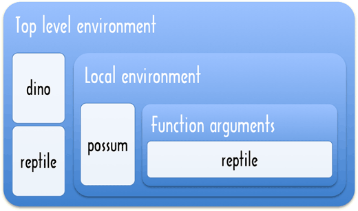
So if the name of variable in an inner function exists in an outer environment then the variable is referring to the outer one, it is not a new definition. That is an expression like variable = 'something' may be a definition of a new variable or it may be an assignment to a previously defined variable. As a matter of style, when you are using top-level variables then it makes sense to introduce them at the top of a file with a default value.
variable = 'first' # Definition
showVariable = ->
show 'In showVariable, the variable holds: ' +
variable # second
testIt = ->
variable = 'second' # Assignment
show 'In test, the variable holds ' +
variable + '.' # second
showVariable()
show 'The variable is: ' + variable # first
testIt()
show 'The variable is: ' + variable # secondThe variables defined in the local environment are only visible to the code inside the function. If a function calls another function, the newly called function does not see the variables inside the first function.
andHere = ->
try show aLocal # Not defined
catch e then show e.message
isHere = ->
aLocal = 'aLocal is defined'
andHere()
isHere()However, and this is a subtle but extremely useful phenomenon, when a function is defined inside another function, its local environment will be based on the local environment that surrounds it.
isHere = ->
andHere = ->
try show aLocal # Is defined
catch e then show e.message
aLocal = 'aLocal is defined'
andHere()
isHere()○•○
Here is a special case that might surprise you:
varWhich = 'top-level'
parentFunction = ->
varWhich = 'local'
childFunction = ->
show varWhich
childFunction
child = parentFunction()
child()parentFunction returns its internal function, and the code at the bottom calls this function. Even though parentFunction has finished executing at this point, the local environment where variable has the value 'local' still exists, and childFunction still uses it. This phenomenon is called closure.
○•○
With scoping we can ‘synthesise’ functions. By using some of the variables from an enclosing function, an inner function can be made to do different things. Imagine we need a few different but similar functions, one that adds 2 to its argument, one that adds 5, and so on.
makeAddFunction = (amount) ->
add = (number) -> number + amount
addTwo = makeAddFunction 2
addFive = makeAddFunction 5
show addTwo(1) + addFive(1)○•○
On top of the fact that different functions can contain variables of the same name without getting tangled up, these scoping rules also allow functions to call themselves without running into problems. A function that calls itself is called recursive. Recursion allows for some interesting definitions. When you define recursive functions the first thing you need is a stop condition, otherwise your recursive function becomes an elaborate but never ending loop. Look at this implementation of power:
powerRec = (base, exponent) ->
if exponent is 0
1
else
base * powerRec base, exponent - 1
show 'power 3, 3 = ' + powerRec 3, 3This is rather close to the way mathematicians define exponentiation, and to me it looks a lot nicer than the earlier version. It sort of loops, but there is no while, for, or even a local side effect to be seen. By calling itself, the function produces the same effect. The stop condition is when exponent becomes 0 and the exponent - 1 ensures that exponent gets closer to 0 for each call. Note the assumption that exponent is a positive integer, that should be clearly documented if powerRec was a part of a reusable library.
○•○
Does this elegance affect performance? There is only one way to know for sure: measure it. The timings below are from my machine, you should not rely much on those. CPU’s, operating systems, compilers and interpreters in browsers all has an effect on performance, so measure in something that is as close to your target environment as possible.
timeIt = (func) ->
start = new Date()
for i in [0...1000000] then func()
show "Timing: #{(new Date() - start)*0.001}s"
add = (n, m) -> n + m # Baseline comparison
runOnDemand ->
timeIt -> p = add 9,18 # 0.042s
timeIt -> p = Math.pow 9,18 # 0.049s
timeIt -> p = power 9,18 # 0.464s
timeIt -> p = powerRec 9,18 # 0.544sThe dilemma of speed versus elegance is an interesting one. It not only occurs when deciding for or against recursion. In many situations, an elegant, intuitive, and often short solution can be replaced by a more convoluted but faster solution.
In the case of the power function above the un-elegant version is still sufficiently simple and easy to read. It does not make very much sense to replace it with the recursive version. Often, though, the concepts a program is dealing with get so complex that giving up some efficiency in order to make the program more straightforward becomes an attractive choice.
The basic rule, which has been repeated by many programmers and with which I wholeheartedly agree, is not to worry about efficiency until your program is provably too slow. When it is, find out which parts are too slow, and start exchanging elegance for efficiency in those parts.
Of course, the above rule does not mean one should start ignoring performance altogether. In many cases, like the power function, not much simplicity is gained by the ‘elegant’ approach. In other cases, an experienced programmer can see right away that a simple approach is never going to be fast enough.
The reason I am making a big deal out of this is that surprisingly many programmers focus fanatically on efficiency, even in the smallest details. The result is bigger, more complicated, and often less correct programs, which take longer to write than their more straightforward equivalents and often run only marginally faster.
When you have a simple, correct implementation that is too slow, then you can use that as a reference implementation to test your improved version. The one thing you do need to consider up front is what kind of data structures and algorithms can handle the task at hand. There is a huge difference between searching in a list with ten items and searching in a list with millions of items. These kind of considerations are covered in more detail in Searching↓.
○•○
But I was talking about recursion. A concept closely related to recursion is a thing called the stack. When a function is called, control is given to the body of that function. When that body returns, the code that called the function is resumed. While the body is running, the computer must remember the context from which the function was called, so that it knows where to continue afterwards. The place where this context is stored is called the stack.
The fact that it is called ‘stack’ has to do with the fact that, as we saw, a function body can again call a function. Every time a function is called, another context has to be stored. One can visualise this as a stack of contexts. Every time a function is called, the current context is thrown on top of the stack. When a function returns, the context on top is taken off the stack and resumed.
This stack requires space in the computer’s memory to be stored. When the stack grows too big, the computer will give up with a message like “out of stack space” or “too much recursion”. This is something that has to be kept in mind when writing recursive functions.
chicken = ->
show 'Lay an egg'
egg()
egg = ->
show 'Chick hatched'
chicken()
# WARNING! Clicking `Run` may cause your
# browser to enter a catatonic state
runOnDemand ->
try show chicken() + ' came first.'
catch error then show error.messageIn addition to demonstrating a very interesting way of writing a broken program, this example shows that a function does not have to call itself directly to be recursive. If it calls another function which (directly or indirectly) calls the first function again, it is still recursive. The try and catch parts are covered in Error Handling↓.
○•○
Recursion is not always just a less-efficient alternative to looping. Some problems are much easier to solve with recursion than with loops. Most often these are problems that require exploring or processing several ‘branches’, each of which might branch out again into more branches.
Consider this puzzle: By starting from the number 1 and repeatedly either adding 5 or multiplying by 3, an infinite amount of new numbers can be produced. How would you write a function that, given a number, tries to find a sequence of additions and multiplications that produce that number?
For example, the number 13 could be reached by first multiplying 1 by 3, and then adding 5 twice. The number 15 can not be reached at all.
findSequence = (goal) ->
find = (start, history) ->
if start is goal
history
else if start > goal
null
else
find(start + 5, '(' + history + ' + 5)') ? \
find(start * 3, '(' + history + ' * 3)')
find 1, '1'
show findSequence 24Note that the solution does not necessarily find the shortest sequence of operations, it is satisfied when it finds any sequence at all.
The inner find function, by calling itself in two different ways, explores both the possibility of adding 5 to the current number and of multiplying it by 3. When it finds the number, it returns the history string, which is used to record all the operators that were performed to get to this number. It also checks whether the current number is bigger than goal, because if it is, we should stop exploring this branch, it is not going to give us our number.
The use of the existential ? operator in the example can be read as ‘return the solution found by adding 5 to start, and if that fails, return the solution found by multiplying start by 3’.
○•○
Usually when you define a function you assign it to a name that you can use to refer to it later. That is not required and sometimes it is not worthwhile to give a function a name, then you can use an anonymous function instead.
Like in the makeAddFunction example we saw earlier:
makeAddFunction = (amount) ->
(number) -> number + amount
show makeAddFunction(11) 3Since the function named add in the first version of makeAddFunction was referred to only once, the name does not serve any purpose and we might as well directly return the function value.
Exercise 9
Write a function greaterThan, which takes one argument, a number, and returns a function that represents a test. When this returned function is called with a single number as argument, it returns a boolean: true if the given number is greater than the number that was used to create the test function, and false otherwise.
# Compose a solution hereView Solution
Try the following:
yell 'Hello', 'Good Evening', 'How do you do?'The function yell defined earlier in this chapter only accepts one argument. Yet when you call it like this, the computer does not complain at all, but just ignores the other arguments.
yell()You can, apparently, even get away with passing too few arguments. When an argument is not passed, its value inside the function is undefined.
In the next chapter, we will see a way in which a function body can get at the exact list of arguments that were passed to it. This can be useful, as it makes it possible to have a function accept any number of arguments. A debugging function console.log makes use of this:
console?.log 'R', 2, 'D', 2To see the output from console.log you have to enable and open your browser’s built-in developer tools. The question mark is to prevent Internet Explorer 9 from throwing an error if Developer Tools (F12) has not been activated.
Of course, the downside of a variable number of arguments is that it is also possible to accidentally pass the wrong number of arguments to functions that expect a fixed amount of them and never be told about it.
Data Structures: Objects and Arrays
This chapter will be devoted to solving a few simple problems. In the process, we will discuss two new types of values, arrays and objects, and look at some techniques related to them.
Consider the following situation: Your crazy aunt Emily, who is rumoured to have over fifty cats living with her (you never managed to count them), regularly sends you e-mails to keep you up to date on her exploits. They usually look like this:
Dear nephew,
Your mother told me you have taken up skydiving. Is this true? You watch yourself, young man! Remember what happened to my husband? And that was only from the second floor!
Anyway, things are very exciting here. I have spent all week trying to get the attention of Mr. Drake, the nice gentleman who moved in next door, but I think he is afraid of cats. Or allergic to them? I am going to try putting Fat Igor on his shoulder next time I see him, very curious what will happen.
Also, the scam I told you about is going better than expected. I have already gotten back five ‘payments’, and only one complaint. It is starting to make me feel a bit bad though. And you are right that it is probably illegal in some way.
(…etc…)
Much love,
Aunt Emily
died 27/04/2006: Black Leclère
born 05/04/2006 (mother Lady Penelope): Red Lion, Doctor Hobbles the 3rd, Little Iroquois
To humour the old dear, you would like to keep track of the genealogy of her cats, so you can add things like “P.S. I hope Doctor Hobbles the 2nd enjoyed his birthday this Saturday!”, or “How is old Lady Penelope doing? She’s five years old now, isn’t she?”, preferably without accidentally asking about dead cats. You are in the possession of a large quantity of old e-mails from your aunt, and fortunately she is very consistent in always putting information about the cats’ births and deaths at the end of her mails in precisely the same format.
You are hardly inclined to go through all those mails by hand. Fortunately, we were just in need of an example problem, so we will try to work out a program that does the work for us. For a start, we write a program that gives us a list of cats that are still alive after the last e-mail.
Before you ask, at the start of the correspondence, aunt Emily had only a single cat: Spot. (She was still rather conventional in those days.)
It usually pays to have some kind of clue what one’s program is going to do before starting to type. Here’s a plan:
- Start with a set of cat names that has only “Spot” in it.
- Go over every e-mail in our archive, in chronological order.
- Look for paragraphs that start with “born” or “died”.
- Add the names from paragraphs that start with “born” to our set of names.
- Remove the names from paragraphs that start with “died” from our set.
Where taking the names from a paragraph goes like this:
- Find the colon in the paragraph.
- Take the part after this colon.
- Split this part into separate names by looking for commas.
It may require some suspension of disbelief to accept that aunt Emily always used this exact format, and that she never forgot or misspelled a name, but that is just how your aunt is.
○•○
First, let me tell you about properties. A lot of CoffeeScript values have other values associated with them. These associations are called properties. Every string has a property called length, which refers to a number, the amount of characters in that string.
Properties can be accessed in two ways:
text = 'purple haze'
show text['length']
show text.lengthThe second way is a shorthand for the first, and it only works when the name of the property would be a valid variable name — when it does not have any spaces or symbols in it and does not start with a digit character.
Numbers, booleans, the value null, and the value undefined do not have any properties. Trying to read properties from such a value produces an error. Try the following code, if only to get an idea about the kind of error-message you get in such a case (which, for some browsers, can be rather cryptic).
nothing = null
try show nothing.length catch error then show error.messageThe properties of a string value can not be changed. There are quite a few more than just length, as we will see, but you are not allowed to add or remove any.
This is different with values of the type object. Their main role is to hold other values. They have, you could say, their own set of tentacles in the form of properties. You are free to modify these, remove them, or add new ones.
An object can be written like this:
cat =
colour: 'grey'
name: 'Spot'
size: 46
# Or: cat = {colour: 'grey', name: 'Spot', size: 46}
cat.size = 47
show cat.size
delete cat.size
show cat.size
show catLike variables, each property attached to an object is labelled by a string. The first statement creates an object in which the property 'colour' holds the string 'grey', the property 'name' is attached to the string 'Spot', and the property 'size' refers to the number 46. The second statement gives the property named size a new value, which is done in the same way as modifying a variable.
The keyword delete cuts off properties. Trying to read a non-existent property gives the value undefined.
If a property that does not yet exist is set with the = operator, it is added to the object.
empty = {}
empty.notReally = 1000
show empty.notReallyProperties whose names are not valid variable names have to be quoted when creating the object, and approached using brackets:
thing = {'gabba gabba': 'hey', '5': 10}
show thing['5']
thing['5'] = 20
show thing[2 + 3]
delete thing['gabba gabba']
show thingAs you can see, the part between the brackets can be any expression. It is converted to a string to determine the property name it refers to. One can even use variables to name properties:
propertyName = 'length'
text = 'mainline'
show text[propertyName]The operator of can be used to test whether an object has a certain property. It produces a boolean.
chineseBox = {}
chineseBox.content = chineseBox
show 'content' of chineseBox
show 'content' of chineseBox.content
show chineseBox○•○
When object values are shown in the interactive environment, all layers of properties are shown. You can give an extra boolean argument, shallow, to show to only its own top-most properties. This is also used to limit the display of objects with circular references such as for the chineseBox above.
abyss = {lets:1, go:deep:down:into:the:abyss:7}
show abyss
show abyss, onExercise 10
The solution for the cat problem talks about a ‘set’ of names. A set is a collection of values in which no value may occur more than once. If names are strings, can you think of a way to use an object to represent a set of names?
Show how a name can be added to this set, how one can be removed, and how you can check whether a name occurs in it.
# Compose a solution hereView Solution
Object values, apparently, can change. The types of values discussed in Basic CoffeeScript↑ are all immutable, it is impossible to change an existing value of those types. You can combine them and derive new values from them, but when you take a specific string value, the text inside it can not change. With objects, on the other hand, the content of a value can be modified by changing its properties.
When we have two numbers, 120 and 120, they can for all practical purposes be considered the precise same number. With objects, there is a difference between having two references to the same object and having two different objects that contain the same properties. Consider the following code:
object1 = {value: 10}
object2 = object1
object3 = {value: 10}
show object1 is object2
show object1 is object3
object1.value = 15
show object2.value
show object3.valueobject1 and object2 are two variables grasping the same value. There is only one actual object, which is why changing object1 also changes the value of object2. The variable object3 points to another object, which initially contains the same properties as object1, but lives a separate life.
CoffeeScript’s is/== operator, when comparing objects, will only return true if both values given to it are the precise same value. Comparing different object with identical contents will give false. This is useful in some situations, but unpractical in others19.
○•○
Object values can play a lot of different roles. Behaving like a set is only one of those. We will see a few other roles in this chapter, and Object Orientation↓ shows another important way of using objects.
In the plan for the cat problem — in fact, call it an algorithm, not a plan, that makes it sound like we know what we are talking about — in the algorithm, it talks about going over all the e-mails in an archive. What does this archive look like? And where does it come from?
Do not worry about the second question for now. Modularity↓ talks about some ways to import data into your programs, but for now you will find that the e-mails are just magically there. Some magic is really easy, inside computers.
○•○
The way in which the archive is stored is still an interesting question. It contains a number of e-mails. An e-mail can be a string, that should be obvious. The whole archive could be put into one huge string, but that is hardly practical. What we want is a collection of separate strings.
Collections of things are what objects are used for. One could make an object like this:
mailArchive = {
'the first e-mail': 'Dear nephew, ...'
'the second e-mail': '...'
# and so on ...
}But that makes it hard to go over the e-mails from start to end — how does the program guess the name of these properties? This can be solved by more predictable property names:
mailArchive = {
0: 'Dear nephew, ... (mail number 1)'
1: '(mail number 2)'
2: '(mail number 3)'
}
for current of mailArchive
show 'Processing e-mail #' + current +
': ' + mailArchive[current]Luck has it that there is a special kind of objects specifically for this kind of use. They are called arrays, and they provide some conveniences, such as a length property that contains the amount of values in the array, and a number of operations useful for this kind of collections.
New arrays can be created using brackets ([ and ]). As with properties, the commas between elements are optional when they are placed on separate lines. Ranges and for comprehensions also create arrays.
mailArchive = ['mail one', 'mail two', 'mail three']
for current in [0...mailArchive.length]
show 'Processing e-mail #' + current +
': ' + mailArchive[current]In this example, the numbers of the elements are not specified explicitly anymore. The first one automatically gets the number 0, the second the number 1, and so on.
Why start at 0? People tend to start counting from 1. As unintuitive as it seems, numbering the elements in a collection from 0 is often more practical. Just go with it for now, it will grow on you.
Starting at element 0 also means that in a collection with X elements, the last element can be found at position X - 1. This is why the for loop in the example uses an exclusive range 0...mailArchive.length. There is no element at position mailArchive.length, so as soon as current has that value, we stop looping.
Exercise 11
Write a function range that takes one argument, a positive number, and returns an array containing all numbers from 0 up to and including the given number.
An empty array can be created by simply typing []. Also remember that adding properties to an object, and thus also to an array, can be done by assigning them a value with the = operator. The length property is automatically updated when elements are added.
# Compose a solution hereView Solution
In CoffeeScript most statements can also be used as expressions. That means for example that the values from a for comprehension can be collected in a variable and used later.
numbers = (number for number in [0..12] by 2)
show numbers○•○
Both string and array objects contain, in addition to the length property, a number of properties that refer to function values.
doh = 'Doh'
show typeof doh.toUpperCase
show doh.toUpperCase()Every string has a toUpperCase property. When called, it will return a copy of the string, in which all letters have been converted to uppercase. There is also toLowerCase. Guess what that does.
Notice that, even though the call to toUpperCase does not pass any arguments, the function does somehow have access to the string 'Doh', the value of which it is a property. How this works precisely is described in Object Orientation↓.
Properties that contain functions are generally called methods, for example ‘toUpperCase is a method of a string object’.
mack = []
mack.push 'Mack'
mack.push 'the'
mack.push 'Knife'
show mack.join ' '
show mack.pop()
show mackThe method push, which is associated with arrays, can be used to add values to it. It could have been used in the last exercise, as an alternative to result[i] = i. Then there is pop, the opposite of push: it takes off and returns the last value in the array. join builds a single big string from an array of strings. The parameter it is given is pasted between the values in the array.
○•○
Coming back to those cats, we now know that an array would be a good way to store the archive of e-mails. In this book, the retrieveMails after the require can be used to (magically) get hold of this array. The magic will be dispelled in Modularity↓.
Mail Archive
View Solution
Going over them to process them one after another is no rocket science anymore either:
mailArchive = retrieveMails()
for email, i in mailArchive
show "Processing e-mail ##{i} #{email[0..15]}..."
# Do more things...In a for ... in statement we can get both the value and its index in the array. The email[0..15] gets the first snippet of each email. We have also decided on a way to represent the set of cats that are alive. The next problem, then, is to find the paragraphs in an e-mail that start with 'born' or 'died'.
○•○
The first question that comes up is what exactly a paragraph is. In this case, the string value itself can not help us much: CoffeeScript’s concept of text does not go any deeper than the ‘sequence of characters’ idea, so we must define paragraphs in those terms.
Earlier, we saw that there is such a thing as a newline character. These are what most people use to split paragraphs. We consider a paragraph, then, to be a part of an e-mail that starts at a newline character or at the start of the content, and ends at the next newline character or at the end of the content.
And we do not even have to write the algorithm for splitting a string into paragraphs ourselves. Strings already have a method named split, which is (almost) the opposite of the join method of arrays. It splits a string into an array, using the string given as its argument to determine in which places to cut.
words = 'Cities of the Interior'
show words.split ' 'Thus, cutting on newlines ('\n'), can be used to split an e-mail into paragraphs.
Exercise 12
split and join are not precisely each other’s inverse. string.split(x).join(x) always produces the original value, but array.join(x).split(x) does not. Can you give an example of an array where .join(' ').split(' ') produces a different value?
# Compose a solution hereView Solution
Paragraphs that do not start with either “born” or “died” can be ignored by the program. How do we test whether a string starts with a certain word? The method charAt can be used to get a specific character from a string. x.charAt(0) gives the first character, 1 is the second one, and so on. One way to check whether a string starts with “born” is:
paragraph = 'born 15-11-2003 (mother Spot): White Fang'
show paragraph.charAt(0) is 'b' and
paragraph.charAt(1) is 'o' and
paragraph.charAt(2) is 'r' and
paragraph.charAt(3) is 'n'But that gets a bit clumsy — imagine checking for a word of ten characters. There is something to be learned here though: when a line gets ridiculously long, it can be spread over multiple lines. The result can be made easier to read by lining up the start of the new line with the first element on the original line that plays a similar role. You can also end a line with \ to indicate that it continues on the next line.
Strings also have a method called slice. It copies out a piece of the string, starting from the character at the position given by the first argument, and ending before (not including) the character at the position given by the second one. It is the same as using a range as an index. This allows the check to be written in a shorter way.
show paragraph.slice(0, 4) is 'born'
show paragraph[0...4] is 'born'Exercise 13
Write a function called startsWith that takes two arguments, both strings. It returns true when the first argument starts with the characters in the second argument, and false otherwise.
# Compose a solution hereView Solution
What happens when charAt, slice or a range are used to take a piece of a string that does not exist? Will the startsWith still work when the pattern is longer than the string it is matched against?
show 'Pip'.charAt 250
show 'Nop'.slice 1, 10
show 'Pin'[1...10]charAt will return '' when there is no character at the given position, and slice or the range will simply leave out the part of the new string that does not exist.
So yes, startsWith should work. When startsWith('Idiots', 'Most honoured colleagues') is called, the call to slice will, because string does not have enough characters, always return a string that is shorter than pattern. Because of that, the comparison with is will return false, which is correct.
It helps to always take a moment to consider abnormal (but valid) inputs for a program. These are usually called corner cases, and it is very common for programs that work perfectly on all the ‘normal’ inputs to screw up on corner cases20.
○•○
The only part of the cat-problem that is still unsolved is the extraction of names from a paragraph. The algorithm was this:
- Find the colon in the paragraph.
- Take the part after this colon.
- Split this part into separate names by looking for commas.
This has to happen both for paragraphs that start with 'died', and paragraphs that start with 'born'. It would be a good idea to put it into a function, so that the two pieces of code that handle these different kinds of paragraphs can both use it.
Exercise 14
Can you write a function catNames that takes a paragraph as an argument and returns an array of names?
Strings have an indexOf method that can be used to find the (first) position of a character or sub-string within that string. Also, when slice is given only one argument, it will return the part of the string from the given position all the way to the end. With a range either the start or end can be left out: 'shorthand'[...5] ⇒ 'short' and 'shorthand'[5...] ⇒ 'hand'.
It can be helpful to use CoffeeScript interactively to ‘explore’ functions. Try 'foo: bar'.indexOf(':') and see what you get.
# Compose a solution hereView Solution
All that remains now is putting the pieces together. One way to do that looks like this:
mailArchive = retrieveMails()
livingCats = 'Spot': true
for email, i in mailArchive
paragraphs = email.split '\n'
for paragraph in paragraphs
if startsWith paragraph, 'born'
names = catNames paragraph
for name in names
livingCats[name] = true
else if startsWith paragraph, 'died'
names = catNames paragraph
for name in names
delete livingCats[name]
show livingCats, onThat is quite a big dense chunk of code. We will look into making it a bit lighter in a moment. But first let us look at our results. We know how to check whether a specific cat survives:
if 'Spot' in livingCats
show 'Spot lives!'
else
show 'Good old Spot, may she rest in peace.'But how do we list all the cats that are alive? The of keyword is somewhat similar to the in keyword when it is used together with for:
for cat of livingCats
show catA loop like that will go over the names of the properties in an object, which allows us to enumerate all the names in our set.
○•○
Some pieces of code look like an impenetrable jungle. The example solution to the cat problem suffers from this. One way to make some light shine through it is to just add some strategic blank lines. This makes it look better, but does not really solve the problem.
What is needed here is to break the code up. We already wrote two helper functions, startsWith and catNames, which both take care of a small, understandable part of the problem. Let us continue doing this.
addToSet = (set, values) ->
for i in [0..values.length]
set[values[i]] = true
removeFromSet = (set, values) ->
for i in [0..values.length]
delete set[values[i]]These two functions take care of the adding and removing of names from the set. That already cuts out the two most inner loops from the solution:
livingCats = 'Spot': true
for email in mailArchive
paragraphs = email.split '\n'
for paragraph in paragraphs
if startsWith paragraph, 'born'
addToSet livingCats, catNames paragraph
else if startsWith paragraph, 'died'
removeFromSet livingCats, catNames paragraph
show livingCats, onQuite an improvement, if I may say so myself.
Why do addToSet and removeFromSet take the set as an argument? They could use the variable livingCats directly, if they wanted to. The reason is that this way they are not completely tied to our current problem. If addToSet directly changed livingCats, it would have to be called addCatsToCatSet, or something similar. The way it is now, it is a more generally useful tool.
Even if we are never going to use these functions for anything else, which is quite probable, it is useful to write them like this. Because they are ‘self sufficient’, they can be read and understood on their own, without needing to know about some external variable called livingCats.
The functions are not pure: They change the object passed as their set argument. This makes them slightly trickier than real pure functions, but still a lot less confusing than functions that run amok and change any value or variable they please.
○•○
We continue breaking the algorithm into pieces:
findLivingCats = ->
mailArchive = retrieveMails()
livingCats = 'Spot': true
handleParagraph = (paragraph) ->
if startsWith paragraph, 'born'
addToSet livingCats, catNames paragraph
else if startsWith paragraph, 'died'
removeFromSet livingCats, catNames paragraph
for email in mailArchive
paragraphs = email.split '\n'
for paragraph in paragraphs
handleParagraph paragraph
livingCats
howMany = 0
for cat of findLivingCats()
howMany++
show 'There are ' + howMany + ' cats.'The whole algorithm is now encapsulated by a function. This means that it does not leave a mess after it runs: livingCats is now a local variable in the function, instead of a top-level one, so it only exists while the function runs. The code that needs this set can call findLivingCats and use the value it returns.
It seemed to me that making handleParagraph a separate function also cleared things up. But this one is so closely tied to the cat-algorithm that it is meaningless in any other situation. On top of that, it needs access to the livingCats variable. Thus, it is a perfect candidate to be a function-inside-a-function. When it lives inside findLivingCats, it is clear that it is only relevant there, and it has access to the variables of its parent function.
This solution is actually bigger than the previous one. Still, it is tidier and I hope you will agree that it is easier to read.
○•○
The program still ignores a lot of the information that is contained in the e-mails. There are birth-dates, dates of death, and the names of mothers in there.
To start with the dates: What would be a good way to store a date? We could make an object with three properties, year, month, and day, and store numbers in them.
whenWasIt = year: 1980, month: 2, day: 1But CoffeeScript already provides a kind of object for this purpose. Such an object can be created by using the keyword new:
whenWasIt = new Date 1980, 1, 1
show whenWasItJust like the notation with colons and optional braces we have already seen, new is a way to create object values. Instead of specifying all the property names and values, a function is used to build up the object. This makes it possible to define a kind of standard procedure for creating objects. Functions like this are called constructors, and in Object Orientation↓ we will see how to write them.
The Date constructor can be used in different ways.
show new Date
show new Date 1980, 1, 1
show new Date 2007, 2, 30, 8, 20, 30As you can see, these objects can store a time of day as well as a date. When not given any arguments, an object representing the current time and date is created. Arguments can be given to ask for a specific date and time. The order of the arguments is year, month, day, hour, minute, second, milliseconds. These last four are optional, they become 0 when not given.
The month numbers these objects use go from 0 to 11, which can be confusing. Especially since day numbers do start from 1.
○•○
The content of a Date object can be inspected with a number of get... methods.
today = new Date();
show "Year: #{today.getFullYear()}
month: #{today.getMonth()}
day: #{today.getDate()}"
show "Hour: #{today.getHours()}
minutes: #{today.getMinutes()}
seconds: #{today.getSeconds()}"
show "Day of week: #{today.getDay()}"All of these, except for getDay, also have a set... variant that can be used to change the value of the date object.
Inside the object, a date is represented by the amount of milliseconds it is away from January 1st 1970. You can imagine this is quite a large number.
today = new Date()
show today.getTime()A very useful thing to do with dates is comparing them.
wallFall = new Date 1989, 10, 9
gulfWarOne = new Date 1990, 6, 2
show wallFall < gulfWarOne
show wallFall is wallFall
# but
show wallFall is new Date 1989, 10, 9Comparing dates with <, >, <=, and >= does exactly what you would expect. When a date object is compared to itself with is the result is true, which is also good. But when is is used to compare a date object to a different, equal date object, we get false. Huh?
As mentioned earlier, is will return false when comparing two different objects, even if they contain the same properties. This is a bit clumsy and error-prone here, since one would expect >= and is to behave in a more or less similar way. Testing whether two dates are equal can be done like this:
wallFall1 = new Date 1989, 10, 9
wallFall2 = new Date 1989, 10, 9
show wallFall1.getTime() is wallFall2.getTime()○•○
In addition to a date and time, Date objects also contain information about a timezone. When it is one o’clock in Amsterdam, it can, depending on the time of year, be noon in London, and seven in the morning in New York. Such times can only be compared when you take their time zones into account. The getTimezoneOffset function of a Date can be used to find out how many minutes it differs from GMT (Greenwich Mean Time).
now = new Date()
show now.getTimezoneOffset()Exercise 15
'died 27/04/2006: Black Leclère'
The date part is always in the exact same place of a paragraph. How convenient. Write a function extractDate that takes such a paragraph as its argument, extracts the date, and returns it as a date object.
# Compose a solution hereView Solution
Storing cats will work differently from now on. Instead of just putting the value true into the set, we store an object with information about the cat. When a cat dies, we do not remove it from the set, we just add a property death to the object to store the date on which the creature died.
This means our addToSet and removeFromSet functions have become useless. Something similar is needed, but it must also store birth-dates and, later, the mother’s name.
catRecord = (name, birthdate, mother) ->
name: name
birth: birthdate
mother: mother
addCats = (set, names, birthdate, mother) ->
for name in names
set[name] = catRecord name, birthdate, mother
deadCats = (set, names, deathdate) ->
for name in names
set[name].death = deathdatecatRecord is a separate function for creating these storage objects. It might be useful in other situations, such as creating the object for Spot. ‘Record’ is a term often used for objects like this, which are used to group a limited number of values.
○•○
So let us try to extract the names of the mother cats from the paragraphs.
'born 15/11/2003 (mother Spot): White Fang'One way to do this would be…
extractMother = (paragraph) ->
start = paragraph.indexOf '(mother '
start += '(mother '.length
end = paragraph.indexOf ')'
paragraph[start...end]
show extractMother \
'born 15/11/2003 (mother Spot): White Fang'Notice how the start position has to be adjusted for the length of the string '(mother ', because indexOf returns the position of the start of the pattern, not its end.
Exercise 16
The thing that extractMother does can be expressed in a more general way. Write a function between that takes three arguments, all of which are strings. It will return the part of the first argument that occurs between the patterns given by the second and the third arguments. That is:
between 'born 15/11/2003 (mother Spot): White Fang',
'(mother ', ')' ⇒ 'Spot'
between 'bu ] boo [ bah ] gzz', '[ ', ' ]' ⇒ 'bah'To make that second test work, it can be useful to know that indexOf can be given a second, optional parameter that specifies at which point it should start searching.
# Compose a solution hereView Solution
Having between makes it possible to express extractMother in a simpler way:
extractMother = (paragraph) ->
between paragraph, '(mother ', ')'○•○
The new, improved cat-algorithm looks like this:
findCats = ->
mailArchive = retrieveMails()
cats = {'Spot': catRecord 'Spot',
new Date(1997, 2, 5), 'unknown'}
handleParagraph = (paragraph) ->
if startsWith paragraph, 'born'
addCats cats, catNames(paragraph),
extractDate(paragraph),
extractMother(paragraph)
else if startsWith paragraph, 'died'
deadCats cats, catNames(paragraph),
extractDate(paragraph)
for email in mailArchive
paragraphs = email.split '\n'
for paragraph in paragraphs
handleParagraph paragraph
cats
catData = findCats()
show catData['Clementine'], on
show catData[catData['Clementine'].mother], onHaving that extra data allows us to finally have a clue about the cats aunt Emily talks about. A function like this could be useful:
formatDate = (date) -> "#{date.getDate()}/" +
"#{date.getMonth() + 1}/" +
"#{date.getFullYear()}"
catInfo = (data, name) ->
unless name of data
return "No cat by the name of #{name} is known."
cat = data[name]
message = "#{name}," +
" born #{formatDate cat.birth}" +
" from mother #{cat.mother}"
if "death" of cat
message += ", died #{formatDate cat.death}"
"#{message}."
show catInfo catData, "Fat Igor"The return statement in catInfo is used as an escape hatch. If there is no data about the given cat, the rest of the function is meaningless, so we immediately return a value, which prevents the rest of the code from running.
In the past, certain groups of programmers considered functions that contain multiple return statements sinful. The idea was that this made it hard to see which code was executed and which code was not. Other techniques, which will be discussed in Error Handling↓, have made the reasons behind this idea more or less obsolete, but you might still occasionally come across someone who will criticise the use of ‘shortcut’ return statements.
Exercise 17
The formatDate function used by catInfo does not add a zero before the month and the day part when these are only one digit long. Write a new version that does this.
# Compose a solution hereView Solution
The property ‘dot’ accessor that we have been using comes in a handy form combined with the existential operator. Instead of object.element we can write object?.element if object is defined then we get the value as before. But if it is null then we get undefined instead of an error.
Exercise 18
Write a function oldestCat which, given an object containing cats as its argument, returns the name of the oldest living cat.
# Compose a solution hereView Solution
Now that we are familiar with arrays, I can show you something related. Whenever a function is called, a special variable named arguments is added to the environment in which the function body runs. This variable refers to an object that resembles an array. It has a property 0 for the first argument, 1 for the second, and so on for every argument the function was given. It also has a length property.
This object is not a real array though, it does not have methods like push, and it does not automatically update its length property when you add something to it. Why not, I never really found out, but this is something one needs to be aware of.
argumentCounter = ->
show "You gave me #{arguments.length} arguments."
argumentCounter "Death", "Famine", "Pestilence"Some functions can take any number of arguments. These typically loop over the values in the arguments object to do something with them. We can create a print function that uses show to print each of its arguments.
print = ->
show arg for arg in arguments
return
print 'From here to', 1/0Others can take optional arguments which, when not given by the caller, get some sensible default value.
add = (number, howmuch) ->
if arguments.length < 2
howmuch = 1
number + howmuch
show add 6
show add 6, 4Exercise 19
Extend the range function from Exercise 11↑ to take a second, optional argument. If only one argument is given, it behaves as earlier and produces a range from 0 to the given number. If two arguments are given, the first indicates the start of the range, the second the end.
# Compose a solution hereView Solution
CoffeeScript has a few of features that can make it simpler to work with arguments. You can set default values directly in the argument list. The show function is defined like:
show = (obj, shallow = off, symbol = '→') ->
showHere currentTag, obj, shallow, symbol
return # Suppress display of the return valueWhen the arguments starting from shallow are not present in a call, they get the value after the =. No checks are needed in the body where the arguments are used.
For variable arguments you can use ... commonly called splats. The ellipsis can indicate extra arguments in a function definition or a call. Do you remember the testPure function? It was used with both absolute which takes one argument and power which takes two. In its definition (c, a...) says that a... is a variable argument list. The variable arguments are used two times, in the call to func and in the call to property.
testPure = (func, types, name, property) ->
declare name, types, (c, a...) ->
c.assert property c, a..., c.note func a...Finally the or= operator can be used in options or= defaults as shorthand for options or (options = defaults).
Exercise 20
You may remember this line of code from the introduction:
sum [1..10]All we need to make this line work is a sum function. This function takes an array of numbers, and returns their sum. Write it, it should be easy. Check that it also works with range.
# Compose a solution hereView Solution
The previous chapter showed the functions Math.max and Math.min. With what you know now, you will notice that these are really the properties max and min of the object stored under the name Math. This is another role that objects can play: A warehouse holding a number of related values.
There are quite a lot of values inside Math, if they would all have been placed directly into the global environment they would, as it is called, pollute it. The more names have been taken, the more likely one is to accidentally overwrite the value of some variable. For example, it is not a far shot to want to name something max.
Most languages will stop you, or at least warn you, when you are defining a variable with a name that is already taken. Not JavaScript.
In any case, one can find a whole outfit of mathematical functions and constants inside Math. All the trigonometric functions are there — cos, sin, tan, acos, asin, atan. π and e, which are written with all capital letters (PI and E), which was, at one time, a fashionable way to indicate something is a constant. pow is a good replacement for the power functions we have been writing, it also accepts negative and fractional exponents. sqrt takes square roots. max and min can give the maximum or minimum of two values. round, floor, and ceil will round numbers to the closest whole number, the whole number below it, and the whole number above it respectively.
There are a number of other values in Math, but this text is an introduction, not a reference. References are what you look at when you suspect something exists in the language, but need to find out what it is called or how it worked exactly. A useful reference for predefined global objects like the Math object exist at the Mozilla Developer Network.
An interesting object is Array when you look through its reference notice that many definitions for example forEach are marked Requires JavaScript 1.6 or another version number. JavaScript 1.5 corresponds to ECMA–262 3rd Edition from December 1999.
More than a decade later this is still the standard that most JavaScript engines implement — including V8, the engine that via JavaScript compiles CoffeeScript to native machine code. It is fair to say that JavaScript is evolving at a glacial pace. Fortunately CoffeeScript and Underscore leapfrogs the JavaScript process and gives you language and library advances that you can use without waiting for existing browsers and engines to be upgraded.
○•○
Maybe you already thought of a way to find out what is available in the Math object:
for name of Math
show nameBut alas, nothing appears. Similarly, when you do this:
for name of ['Huey', 'Dewey', 'Loui']
show nameYou only see 0, 1, and 2, not length, or push, or join, which are definitely also in there. Apparently, some properties of objects are hidden. There is a good reason for this: All objects have a few methods, for example toString, which converts the object into some kind of relevant string, and you do not want to see those when you are, for example, looking for the cats that you stored in the object.
Why the properties of Math are hidden is unclear to me. Someone probably wanted it to be a mysterious kind of object. But you can peek under the hood in the standalone REPL; type Math. followed by →∣ / ‘Tab’.
All properties your programs add to objects are visible. There is no way to make them hidden, which is unfortunate because, as we will see in Object Orientation↓, it would be nice to be able to add methods to objects without having them show up in our for / of loops.
○•○
Some properties are read-only, you can get their value but not change it. For example, the properties of a string value are all read-only.
Other properties can be ‘watched’. Changing them causes things to happen. For example, lowering the length of an array causes excess elements to be discarded:
array = ['Heaven', 'Earth', 'Man']
array.length = 2
show arrayError Handling
Writing programs that work when everything goes as expected is a good start. Making your programs behave properly when encountering unexpected conditions is where it really gets challenging.
The problematic situations that a program can encounter fall into two categories: Programmer mistakes and genuine problems. If someone forgets to pass a required argument to a function, that is an example of the first kind of problem. On the other hand, if a program asks the user to enter a name and it gets back an empty string, that is something the programmer can not prevent.
In general, one deals with programmer errors by finding and fixing them, and with genuine errors by having the code check for them and perform some suitable action to remedy them (for example, asking for the name again), or at least fail in a well-defined and clean way.
○•○
It is important to decide into which of these categories a certain problem falls. For example, consider our old power function:
power = (base, exponent) ->
result = 1
for count in [0...exponent]
result *= base
resultWhen some geek tries to call power 'Rabbit', 4, that is quite obviously a programmer error, but how about power 9, 0.5? The function can not handle fractional exponents, but, mathematically speaking, raising a number to the ½ power is perfectly reasonable ( Math.pow can handle it). In situations where it is not entirely clear what kind of input a function accepts, it is often a good idea to explicitly state the kind of arguments that are acceptable in a comment.
○•○
If a function encounters a problem that it can not solve itself, what should it do? In Data Structures↑ we wrote the function between:
between = (string, start, end) ->
startAt = string.indexOf start
startAt += start.length
endAt = string.indexOf end, startAt
string[startAt...endAt]If the given start and end do not occur in the string, indexOf will return -1 and this version of between will return a lot of nonsense:
show between 'Your mother!', '{-', '-}'When the program is running, and the function is called like that, the code that called it will get a string value, as it expected, and happily continue doing something with it. But the value is wrong, so whatever it ends up doing with it will also be wrong. And if you are unlucky, this wrongness only causes a problem after having passed through twenty other functions. In cases like that, it is extremely hard to find out where the problem started.
In some cases, you will be so unconcerned about these problems that you do not mind the function misbehaving when given incorrect input. For example, if you know for sure the function will only be called from a few places, and you can prove that these places give it decent input, it is generally not worth the trouble to make the function bigger and uglier so that it can handle problematic cases.
But most of the time, functions that fail ‘silently’ are hard to use, and even dangerous. What if the code calling between wants to know whether everything went well? At the moment, it can not tell, except by re-doing all the work that between did and checking the result of between with its own result. That is bad. One solution is to make between return a special value, such as false or undefined, when it fails.
between = (string, start, end) ->
startAt = string.indexOf start
if startAt is -1 then return
startAt += start.length
endAt = string.indexOf end, startAt
if endAt is -1 then return
string[startAt...endAt]
show between 'bu ] boo [ bah ] gzz', '[ ', ' ]'
show between 'bu [ boo bah gzz', '[ ', ' ]'You can see that error checking does not generally make functions prettier. But now code that calls between can do something like:
prompt "Tell me something", "", (answer) ->
parenthesized = between answer, "(", ")"
if parenthesized?
show "You parenthesized '#{parenthesized}'."○•○
In many cases returning a special value is a perfectly fine way to indicate an error. It does, however, have its downsides. Firstly, what if the function can already return every possible kind of value? For example, consider this function that gets the last element from an array:
lastElement = (array) ->
if array.length > 0
array[array.length - 1]
else
undefined
show lastElement [1, 2, undefined]So did the array have a last element? Looking at the value lastElement returns, it is impossible to say.
The second issue with returning special values is that it can sometimes lead to a whole lot of clutter. If a piece of code calls between ten times, it has to check ten times whether undefined was returned. Also, if a function calls between but does not have a strategy to recover from a failure, it will have to check the return value of between, and if it is undefined, this function can then return undefined or some other special value to its caller, who in turn also checks for this value.
Sometimes, when something strange occurs, it would be practical to just stop doing what we are doing and immediately jump back to a place that knows how to handle the problem.
Well, we are in luck, a lot of programming languages provide such a thing. Usually, it is called exception handling.
○•○
The theory behind exception handling goes like this: It is possible for code to raise (or throw) an exception, which is a value. Raising an exception somewhat resembles a super-charged return from a function — it does not just jump out of the current function, but also out of its callers, all the way up to the top-level call that started the current execution. This is called unwinding the stack. You may remember the stack of function calls that was mentioned in Functions↑. An exception zooms down this stack, throwing away all the call contexts it encounters.
If they always zoomed right down to the base of the stack, exceptions would not be of much use, they would just provide a novel way to blow up your program. Fortunately, it is possible to set obstacles for exceptions along the stack. These ‘catch’ the exception as it is zooming down, and can do something with it, after which the program continues running at the point where the exception was caught. An example:
lastElement = (array) ->
if array.length > 0
array[array.length - 1]
else
throw 'Can not take the last element' +
' of an empty array.'
lastElementPlusTen = (array) ->
lastElement(array) + 10
try
show lastElementPlusTen []
catch error
show 'Something went wrong: ' + errorthrow is the keyword that is used to raise an exception. The keyword try sets up an obstacle for exceptions: When the code in the block after it raises an exception, the catch block will be executed. The variable named in parentheses after the word catch is the name given to the exception value inside this block.
Note that the function lastElementPlusTen completely ignores the possibility that lastElement might go wrong. This is the big advantage of exceptions — error-handling code is only necessary at the point where the error occurs, and the point where it is handled. The functions in between can forget all about it. Well, almost.
○•○
Consider the following: A function processThing wants to set a top-level variable currentThing to point to a specific thing while its body executes, so that other functions can have access to that thing too. Normally you would of course just pass the thing as an argument, but assume for a moment that that is not practical. When the function finishes, currentThing should be set back to null.
currentThing = null
processThing = (thing) ->
if currentThing isnt null
throw 'Oh no! We are already processing a thing!'
currentThing = thing
# do complicated processing...
currentThing = nullBut what if the complicated processing raises an exception? In that case the call to processThing will be thrown off the stack by the exception, and currentThing will never be reset to null. try statements can also be followed by a finally keyword, which means ‘no matter what happens, run this code after trying to run the code in the try block’. If a function has to clean something up, the cleanup code should usually be put into a finally block:
processThing = (thing) ->
if currentThing isnt null
throw 'Oh no! We are already processing a thing!'
currentThing = thing
try
# do complicated processing...
finally
currentThing = null○•○
A lot of errors in programs cause the CoffeeScript environment to raise an exception. For example:
try
show Sasquatch
catch error
show 'Caught: ' + error.messageIn cases like this, special error objects are raised. These always have a message property containing a description of the problem. You can raise similar objects using the new keyword and the Error constructor:
try
throw new Error 'Fire!'
catch error
show error.toString()○•○
When an exception goes all the way to the bottom of the stack without being caught, it gets handled by the environment. What this means differs between different browsers and engines, sometimes a description of the error is written to some kind of log, sometimes a window pops up describing the error.
The errors produced by entering code in the CoffeeScript REPL are caught by the console, and displayed along with a stack trace.
○•○
Most programmers consider exceptions purely an error-handling mechanism. In essence, though, they are just another way of influencing the control flow of a program. For example, they can be used as a kind of break statement in a recursive function. Here is a slightly strange function which determines whether an object, and the objects stored inside it, contain at least seven true values:
FoundSeven = {}
hasSevenTruths = (object) ->
counted = 0
count = (object) ->
for name of object
if object[name] is true
if (++counted) is 7
throw FoundSeven
if typeof object[name] is 'object'
count object[name]
try
count object
return false
catch exception
if exception isnt FoundSeven
throw exception
return trueThe inner function count is recursively called for every object that is part of the argument. When the variable counted reaches seven, there is no point in continuing to count, but just returning from the current call to count will not necessarily stop the counting, since there might be more calls below it. So what we do is just throw a value, which will cause the control to jump right out of any calls to count, and land at the catch block.
But just returning true in case of an exception is not correct. Something else might be going wrong, so we first check whether the exception is the object FoundSeven, created specifically for this purpose. If it is not, this catch block does not know how to handle it, so it raises it again.
testdata =
a: true
b: true
c: false
d:
a: true
b: false
c: true
d:
a: true
b:
a: true
e:
a: false
b: true
c: true
show hasSevenTruths testdataThis is a pattern that is also common when dealing with error conditions — you have to make sure that your catch block only handles exceptions that it knows how to handle. Throwing string values, as some of the examples in this chapter do, is rarely a good idea, because it makes it hard to recognise the type of the exception. A better idea is to use unique values, such as the FoundSeven object, or to introduce a new type of objects, as described in Object Orientation↓.
Part III. Paradigm
Functional Programming
As programs get bigger, they also become more complex and harder to understand. We all think ourselves pretty clever, of course, but we are mere human beings, and even a moderate amount of chaos tends to baffle us. And then it all goes downhill. Working on something you do not really understand is a bit like cutting random wires on those time-activated bombs they always have in movies. If you are lucky, you might get the right one — especially if you are the hero of the movie and strike a suitably dramatic pose — but there is always the possibility of blowing everything up.
Admittedly, in most cases, breaking a program does not cause any large explosions. But when a program, by someone’s ignorant tinkering, has degenerated into a ramshackle mass of errors, reshaping it into something sensible is a terrible labour — sometimes you might just as well start over.
Thus, the programmer is always looking for ways to keep the complexity of his programs as low as possible. An important way to do this is to try and make code more abstract. When writing a program, it is easy to get sidetracked into small details at every point. You come across some little issue, and you deal with it, and then proceed to the next little problem, and so on. This makes the code read like a grandmother’s tale.
Yes, dear, to make pea soup you will need split peas, the dry kind. And you have to soak them at least for a night, or you will have to cook them for hours and hours. I remember one time, when my dull son tried to make pea soup. Would you believe he hadn’t soaked the peas? We almost broke our teeth, all of us. Anyway, when you have soaked the peas, and you’ll want about a cup of them per person, and pay attention because they will expand a bit while they are soaking, so if you aren’t careful they will spill out of whatever you use to hold them, so also use plenty water to soak in, but as I said, about a cup of them, when they are dry, and after they are soaked you cook them in four cups of water per cup of dry peas. Let it simmer for two hours, which means you cover it and keep it barely cooking, and then add some diced onions, sliced celery stalk, and maybe a carrot or two and some ham. Let it all cook for a few minutes more, and it is ready to eat.
Another way to describe this recipe:
Per person: one cup dried split peas, half a chopped onion, half a carrot, a celery stalk, and optionally ham.
Soak peas overnight, simmer them for two hours in four cups of water (per person), add vegetables and ham, and cook for ten more minutes.
This is shorter, but if you do not know how to soak peas you will surely screw up and put them in too little water. But how to soak peas can be looked up, and that is the trick. If you assume a certain basic knowledge in the audience, you can talk in a language that deals with bigger concepts, and express things in a much shorter and clearer way.
This, more or less, is what abstraction is.
How is this far-fetched recipe story relevant to programming? Well, obviously, the recipe is the program. Furthermore, the basic knowledge that the cook is supposed to have corresponds to the functions and other constructs that are available to the programmer. If you remember the introduction of this book, things like while make it easier to build loops, and in Data Structures↑ we wrote some simple functions in order to make other functions shorter and more straightforward. Such tools, some of them made available by the language itself, others built by the programmer, are used to reduce the amount of uninteresting details in the rest of the program, and thus make that program easier to work with.
○•○
Functional programming, which is the subject of this chapter, produces abstraction through clever ways of combining functions. A programmer armed with a repertoire of fundamental functions and, more importantly, the knowledge on how to use them, is much more effective than one who starts from scratch. Unfortunately, a standard CoffeeScript environment comes with deplorably few essential functions, so we have to write them ourselves or, which is often preferable, make use of somebody else’s code (more on that in Modularity↓).
In this chapter we write a set of useful functions to understand how they work and solve problems with them to understand how to use them. In later chapters we will use the larger set of functions in the Underscore library that comes with CoffeeScript.
There are other popular approaches to abstraction, most notably object-oriented programming, the subject of Object Orientation↓.
○•○
In programming a fundamental operation is performing an action on every element of an array. Many programming languages have borrowed their way of doing this from the C programming language:
size_t i;
size_t N = sizeof(thing) / sizeof(thing[0]);
for (i = 0; i < N; ++i) {
do_something(thing[i]);
}That is very ugly, an eyesore if you have any good taste at all. It has been improved somewhat in derived languages like C++ and JavaScript. Other programming languages can have very different approaches21. In CoffeeScript it becomes the reasonably pleasant:
# Say we have:
thing = [5..7]
doSomething = show
# then
for i in [0...thing.length] then doSomething thing[i]
# or better - you can see the generated code with: show -> \
for element in thing then doSomething elementStill do we have to do this over and over or can it be abstracted?
The problem is that, whereas most functions just take some values, combine them, and return something, such a loop contains a piece of code that it must execute. It is easy to write a function that goes over an array and prints out every element:
printArray = (array) ->
for element in array
show element
return
printArray [7..9]But what if we want to do something else than print? Since ‘doing something’ can be represented as a function, and functions are also values, we can pass our action as a function value:
forEach = (array, action) ->
for element in array
action element
#return
forEach ['Wampeter', 'Foma', 'Granfalloon'], show
runOnDemand -> show forEach # View generated codeIn CoffeeScript most statements are expressions that return a value, that is also the case with the for statement. A return statement at the end of forEach will make it return undefined. Here forEach is allowed to return its value, when we get to the map function you will see why.
By making use of an anonymous function, something just like a for loop can be written as:
sum = (numbers) ->
total = 0
forEach numbers, (number) -> total += number
total
show sum [1, 10, 100]Note that the variable total is visible inside the anonymous function because of the scoping rules. Also note that this version is hardly shorter than the for loop.
You do get a variable bound to the current element in the array, number, so there is no need to use numbers[i] anymore, and when this array is created by evaluating some expression, there is no need to store it in a variable, because it can be passed to forEach directly.
The cat-code in Data Structures↑ contains a piece like this:
paragraphs = email.split '\n'
for paragraph in paragraphs
handleParagraph paragraphThis can now be written as…
forEach email.split('\n'), handleParagraphOn the whole, using more abstract (or ‘higher level’) constructs results in more information and less noise: The code in sum reads ‘for each number in numbers add that number to the total’, instead of… ‘there is this variable that starts at zero, and it counts upward to the length of the array called numbers, and for every value of this variable we look up the corresponding element in the array and add this to the total’.
○•○
What forEach does is take an algorithm, in this case ‘going over an array’, and abstract it. The ‘gaps’ in the algorithm, in this case, what to do for each of these elements, are filled by functions which are passed to the algorithm function.
Functions that operate on other functions are called higher-order functions. By operating on functions, they can talk about actions on a whole new level. The makeAddFunction function from Functions↑ is also a higher-order function. Instead of taking a function value as an argument, it produces a new function.
Higher-order functions can be used to generalise many algorithms that regular functions can not easily describe. When you have a repertoire of these functions at your disposal, it can help you think about your code in a clearer way: Instead of a messy set of variables and loops, you can decompose algorithms into a combination of a few fundamental algorithms, which are invoked by name, and do not have to be typed out again and again.
Being able to write what we want to do instead of how we do it means we are working at a higher level of abstraction. In practice, this means shorter, clearer, and more pleasant code.
○•○
Another useful type of higher-order function modifies the function value it is given:
negate = (func) ->
(x) -> not func x
isNotNaN = negate isNaN
show isNotNaN NaNThe function returned by negate feeds the argument it is given to the original function func, and then negates the result. But what if the function you want to negate takes more than one argument? You can get access to any arguments passed to a function with the arguments array, but how do you call a function when you do not know how many arguments you have?
Functions22 have a method called apply, which is used for situations like this. It takes two arguments. The role of the first argument will be discussed in Object Orientation↓, for now we just use null there. The second argument is an array containing the arguments that the function must be applied to.
show Math.min.apply null, [5, 6]
negate = (func) ->
-> not func.apply null, arguments
morethan = (x,y) -> x > y
lessthan = negate morethan
show lessthan 5, 7Now you know the underlying arguments mechanism remember that you can also use splats…
show Math.min [5, 6]...
negate = (func) ->
(args...) -> not func args...
morethan = (x,y) -> x > y
lessthan = negate morethan
show lessthan 5, 7○•○
Let us look at a few more basic algorithms related to arrays. The sum function is really a variant of an algorithm which is usually called reduce or foldl:
reduce = (array, combine, base) ->
forEach array, (element) ->
base = combine base, element
base
add = (a, b) -> a + b
sum = (numbers) -> reduce numbers, add, 0
show sum [1, 10, 100]reduce combines an array into a single value by repeatedly using a function that combines an element of the array with a base value. This is exactly what sum did, so it can be made shorter by using reduce… except that addition is an operator and not a function in CoffeeScript, so we first had to put it into a function.
Exercise 21
Write a function countZeroes, which takes an array of numbers as its argument and returns the amount of zeroes that occur in it. Use reduce.
Then, write the higher-order function count, which takes an array and a test function as arguments, and returns the amount of elements in the array for which the test function returned true. Re-implement countZeroes using this function.
# Compose a solution hereView Solution
One other generally useful ‘fundamental algorithm’ related to arrays is called map. It goes over an array, applying a function to every element, just like forEach. But instead of discarding the values returned by function, it builds up a new array from these values.
map = (array, func) ->
result = []
forEach array, (element) ->
result.push func element
result
show map [0.01, 2, 9.89, Math.PI], Math.roundNote that the last argument is called func, not function, this is because function is a keyword and thus not a valid variable name. And then:
# Leave out result since forEach already returns it
map = (array, func) ->
forEach array, (element) ->
func element
# Leave out func arguments
map = (array, func) ->
forEach array, func
# Leave out forEach arguments
map = forEach
show map [0.01, 2, 9.89, Math.PI], Math.roundThe reduction shows how nicely functions and expressions can be used to shorten a function. If we were concerned with the performance of forEach then inserting a return at the end of its definition would prevent it from collecting the results of the for comprehension and we would have to provide an implementation in map.
○•○
There once was, living in the deep mountain forests of Transylvania, a recluse. Most of the time, he just wandered around his mountain, talking to trees and laughing with birds. But now and then, when the pouring rain trapped him in his little hut, and the howling wind made him feel unbearably small, the recluse felt an urge to write something, wanted to pour some thoughts out onto paper, where they could maybe grow bigger than he himself was.
After failing miserably at poetry, fiction, and philosophy, the recluse finally decided to write a technical book. In his youth, he had done some computer programming, and he figured that if he could just write a good book about that, fame and recognition would surely follow.
So he wrote. At first he used fragments of tree bark, but that turned out not to be very practical. He went down to the nearest village and bought himself a laptop computer. After a few chapters, he realised he wanted to put the book in HTML format, in order to put it on his web-page…
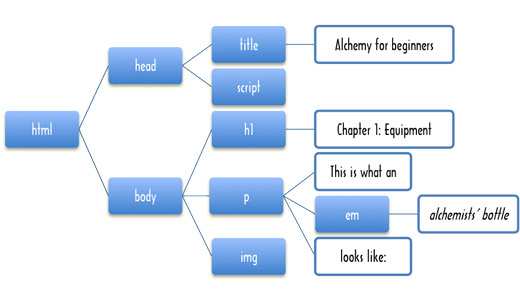
Are you familiar with HTML? It is the method used to add mark-up to pages on the web, and we will be using it a few times in this book, so it would be nice if you know how it works, at least generally. If you are a good student, you could go search the web for a good introduction to HTML now, and come back here when you have read it. Most of you probably are lousy students, so I will just give a short explanation and hope it is enough.
HTML stands for ‘HyperText Mark-up Language’. An HTML document is all text. Because it must be able to express the structure of this text, information about which text is a heading, which text is purple, and so on, a few characters have a special meaning, somewhat like backslashes in CoffeeScript strings. The ‘less than’ and ‘greater than’ characters are used to create ‘tags’. A tag gives extra information about the text in the document. It can stand on its own, for example to mark the place where a picture should appear in the page, or it can contain text and other tags, for example when it marks the start and end of a paragraph.
Some tags are compulsory, a whole HTML document must always be contained in between html tags. The HTML version is specified on the first line with the document type, DOCTYPE, so browsers can parse and render it correctly. Here is an example of an HTML5 document:
<!DOCTYPE HTML>
<html>
<head>
<meta charset="utf-8"/>
<title>A quote</title>
</head>
<body>
<h1>A quote</h1>
<blockquote>
<p>The connection between the language in which we
think/program and the problems and solutions we can
imagine is very close. For this reason restricting
language features with the intent of eliminating
programmer errors is at best dangerous.</p>
<p>-- Bjarne Stroustrup</p>
</blockquote>
<p>Mr. Stroustrup is the inventor of the C++
programming language, but quite an insightful
person nevertheless.</p>
<p>Also, here is a picture of an ostrich:</p>
<img src="../img/ostrich.jpg"/>
</body>
</html>Elements that contain text or other tags are first opened with <tagname>, and afterwards finished with </tagname>. The html element always contains two children: head and body. The first contains information about the document, the second contains the actual document.
Most tag names are cryptic abbreviations. h1 stands for ‘heading 1’, the biggest kind of heading. There are also h2 to h6 for successively smaller headings. p means ‘paragraph’, and img stands for ‘image’. The img element does not contain any text or other tags, but it does have some extra information, src="../img/ostrich.png", which is called an ‘attribute’. In this case, it contains information about the image file that should be shown here.
Because < and > have a special meaning in HTML documents, they can not be written directly in the text of the document. If you want to say ‘5 < 10’ in an HTML document, you have to write ‘5 < 10’, where ‘lt’ stands for ‘less than’. ‘>’ is used for ‘>’, and because these codes also give the ampersand character a special meaning, a plain ‘&’ is written as ‘&’.
Now, those are only the bare basics of HTML, but they should be enough to make it through this chapter, and later chapters that deal with HTML documents, without getting entirely confused.
○•○
The interactive environment has a function showDocument that can be used to look at HTML documents. If you have a webpage in a string variable then you can display it with: showDocument variableName, width, height. You can also give it a document in a string directly.23
# You could access a picture with its URL
imageSource = 'http://autotelicum.github.com/Smooth-CoffeeScript'
linkOstrich = "#{imageSource}/img/ostrich.jpg"
# But I will use a predefined image to avoid a server round-trip
showDocument """
<!DOCTYPE HTML>
<html>
<head>
<meta charset="utf-8"/>
<title>A quote</title>
</head>
<body>
<h1>A quote</h1>
<blockquote>
<p>The connection between the language in which we
think/program and the problems and solutions we can
imagine is very close. For this reason restricting
language features with the intent of eliminating
programmer errors is at best dangerous.</p>
<p>-- Bjarne Stroustrup</p>
</blockquote>
<p>Mr. Stroustrup is the inventor of the C++
programming language, but quite an insightful
person nevertheless.</p>
<p>Also, here is a picture of an ostrich:</p>
<img src="#{ostrich}"/>
</body>
</html>
""", 565, 420○•○
So, picking up the story again, the recluse wanted to have his book in HTML format. At first he just wrote all the tags directly into his manuscript, but typing all those less-than and greater-than signs made his fingers hurt, and he constantly forgot to write & when he needed an &. This gave him a headache. Next, he tried to write the book in Microsoft Word, and then save it as HTML. But the HTML that came out of that was fifteen times bigger and more complicated than it had to be. And besides, Microsoft Word gave him a headache.
The solution that he eventually came up with was this: He would write the book as plain text, following some simple rules about the way paragraphs were separated and the way headings looked. Then, he would write a program to convert this text into precisely the HTML that he wanted.
The rules are this:
- Paragraphs are separated by blank lines.
- A paragraph that starts with a ‘%’ symbol is a header. The more ‘%’ symbols, the smaller the header.
- Inside paragraphs, pieces of text can be emphasised by putting them between asterisks.
- Footnotes are written between braces.
○•○
After he had struggled painfully with his book for six months, the recluse had still only finished a few paragraphs. At this point, his hut was struck by lightning, killing him, and forever putting his writing ambitions to rest. From the charred remains of his laptop, I could recover the following manuscript, that I have placed in a global string variable, recluseFile, so you can get it as a string value in the following.
recluseFile = """
% The Book of Programming
%% The Two Aspects
Below the surface of the machine, the program moves.
Without effort, it expands and contracts. In great harmony,
electrons scatter and regroup. The forms on the monitor
are but ripples on the water. The essence stays invisibly
below.
When the creators built the machine, they put in the
processor and the memory. From these arise the two aspects
of the program.
The aspect of the processor is the active substance. It is
called Control. The aspect of the memory is the passive
substance. It is called Data.
Data is made of merely bits, yet it takes complex forms.
Control consists only of simple instructions, yet it
performs difficult tasks. From the small and trivial, the
large and complex arise.
The program source is Data. Control arises from it. The
Control proceeds to create new Data. The one is born from
the other, the other is useless without the one. This is
the harmonious cycle of Data and Control.
Of themselves, Data and Control are without structure. The
programmers of old moulded their programs out of this raw
substance. Over time, the amorphous Data has crystallised
into data types, and the chaotic Control was restricted
into control structures and functions.
%% Short Sayings
When a student asked Fu-Tzu about the nature of the cycle
of Data and Control, Fu-Tzu replied 'Think of a compiler,
compiling itself.'
A student asked 'The programmers of old used only simple
machines and no programming languages, yet they made
beautiful programs. Why do we use complicated machines
and programming languages?'. Fu-Tzu replied 'The builders
of old used only sticks and clay, yet they made beautiful
huts.'
A hermit spent ten years writing a program. 'My program can
compute the motion of the stars on a 286-computer running
MS DOS', he proudly announced. 'Nobody owns a 286-computer
or uses MS DOS anymore.', Fu-Tzu responded.
Fu-Tzu had written a small program that was full of global
state and dubious shortcuts. Reading it, a student asked
'You warned us against these techniques, yet I find them in
your program. How can this be?' Fu-Tzu said 'There is no
need to fetch a water hose when the house is not on fire.'
{This is not to be read as an encouragement of sloppy
programming, but rather as a warning against neurotic
adherence to rules of thumb.}
%% Wisdom
A student was complaining about digital numbers. 'When I
take the root of two and then square it again, the result
is already inaccurate!'. Overhearing him, Fu-Tzu laughed.
'Here is a sheet of paper. Write down the precise value of
the square root of two for me.'
Fu-Tzu said 'When you cut against the grain of the wood,
much strength is needed. When you program against the grain
of a problem, much code is needed.'
Tzu-li and Tzu-ssu were boasting about the size of their
latest programs. 'Two-hundred thousand lines', said Tzu-li,
'not counting comments!'. 'Psah', said Tzu-ssu, 'mine is
almost a *million* lines already.' Fu-Tzu said 'My best
program has five hundred lines.' Hearing this, Tzu-li and
Tzu-ssu were enlightened.
A student had been sitting motionless behind his computer
for hours, frowning darkly. He was trying to write a
beautiful solution to a difficult problem, but could not
find the right approach. Fu-Tzu hit him on the back of his
head and shouted '*Type something!*' The student started
writing an ugly solution. After he had finished, he
suddenly understood the beautiful solution.
%% Progression
A beginning programmer writes his programs like an ant
builds her hill, one piece at a time, without thought for
the bigger structure. His programs will be like loose sand.
They may stand for a while, but growing too big they fall
apart{Referring to the danger of internal inconsistency
and duplicated structure in unorganised code.}.
Realising this problem, the programmer will start to spend
a lot of time thinking about structure. His programs will
be rigidly structured, like rock sculptures. They are solid,
but when they must change, violence must be done to them
{Referring to the fact that structure tends to put
restrictions on the evolution of a program.}.
The master programmer knows when to apply structure and
when to leave things in their simple form. His programs
are like clay, solid yet malleable.
%% Language
When a programming language is created, it is given
syntax and semantics. The syntax describes the form of
the program, the semantics describe the function. When the
syntax is beautiful and the semantics are clear, the
program will be like a stately tree. When the syntax is
clumsy and the semantics confusing, the program will be
like a bramble bush.
Tzu-ssu was asked to write a program in the language
called Java, which takes a very primitive approach to
functions. Every morning, as he sat down in front of his
computer, he started complaining. All day he cursed,
blaming the language for all that went wrong. Fu-Tzu
listened for a while, and then reproached him, saying
'Every language has its own way. Follow its form, do not
try to program as if you were using another language.'
"""
show # 'The End'○•○
To honour the memory of our good recluse, I would like to finish his HTML-generating program for him. A good approach to this problem goes like this:
- Split the file into paragraphs by cutting it at every empty line.
- Remove the ‘%’ characters from header paragraphs and mark them as headers.
- Process the text of the paragraphs themselves, splitting them into normal parts, emphasised parts, and footnotes.
- Move all the footnotes to the bottom of the document, leaving numbers24 in their place.
- Wrap each piece into the correct HTML tags.
- Combine everything into a single HTML document.
This approach does not allow footnotes inside emphasised text, or vice versa. This is kind of arbitrary, but helps keep the example code simple. If, at the end of the chapter, you feel like an extra challenge, you can try to revise the program to support ‘nested’ mark-up.
○•○
Step 1 of the algorithm is trivial. A blank line is what you get when you have two newlines in a row, and if you remember the split method that strings have, which we saw in Data Structures↑, you will realise that this will do the trick:
paragraphs = recluseFile.split "\n\n"
show "Found #{paragraphs.length} paragraphs."Exercise 22
Write a function processParagraph that, when given a paragraph string as its argument, checks whether this paragraph is a header. If it is, it strips of the ‘%’ characters and counts their number. Then, it returns an object with two properties, content, which contains the text inside the paragraph, and type, which contains the tag that this paragraph must be wrapped in, 'p' for regular paragraphs, 'h1' for headers with one ‘%’, and 'hX' for headers with X ‘%’ characters.
# Compose a solution hereView Solution
This is where we can try out the map function we saw earlier.
paragraphs = map recluseFile.split('\n\n'),
processParagraph
show paragraph for paragraph in paragraphs[0..2]And bang, we have an array of nicely categorised paragraph objects. We are getting ahead of ourselves though, we forgot step 3 of the algorithm:
Process the text of the paragraphs themselves, splitting them into normal parts, emphasised parts, and footnotes.
Which can be decomposed into:
- If the paragraph starts with an asterisk, take off the emphasised part and store it.
- If the paragraph starts with an opening brace, take off the footnote and store it.
- Otherwise, take off the part until the first emphasised part or footnote, or until the end of the string, and store it as normal text.
- If there is anything left in the paragraph, start at 1 again.
Exercise 23
Build a function splitParagraph which, given a paragraph string, returns an array of paragraph fragments. Think of a good way to represent the fragments, they need type and content properties.
The method indexOf, which searches for a character or sub-string in a string and returns its position, or -1 if not found, will probably be useful in some way here.
This is a tricky algorithm, and there are many not-quite-correct or way-too-long ways to describe it. If you run into problems, just think about it for a minute. Try to write inner functions that perform the smaller actions that make up the algorithm.
# Compose a solution hereView Solution
We can now wire processParagraph to also split the text inside the paragraphs, my version can be modified like this:
processParagraph = (paragraph) ->
header = 0
while paragraph[0] is '%'
paragraph = paragraph.slice 1
header++
type: if header is 0 then 'p' else 'h' + header,
content: splitParagraph paragraph
# Adhoc test
paragraphs = map recluseFile.split('\n\n'),
processParagraph
show paragraph for paragraph in paragraphs[0..2]Mapping that over the array of paragraphs gives us an array of paragraph objects, which in turn contain arrays of fragment objects. The next thing to do is to take out the footnotes, and put references to them in their place. Something like this:
extractFootnotes = (paragraphs) ->
footnotes = []
currentNote = 0
replaceFootnote = (fragment) ->
if fragment.type is 'footnote'
++currentNote
footnotes.push fragment
fragment.number = currentNote
type: 'reference', number: currentNote
else
fragment
forEach paragraphs, (paragraph) ->
paragraph.content = map paragraph.content,
replaceFootnote
footnotes
show 'Footnotes from the recluse:'
show extractFootnotes paragraphs
show paragraphs[20]The replaceFootnote function is called on every fragment. When it gets a fragment that should stay where it is, it just returns it, but when it gets a footnote, it stores this footnote in the footnotes array, and returns a reference to it instead. In the process, every footnote and reference is also numbered.
○•○
That gives us enough tools to extract the information we need from the file. All that is left now is generating the correct HTML.
A lot of people think that concatenating strings is a great way to produce HTML. When they need a link to, for example, a site where you can play the game of Go, they will do:
url = "http://www.gokgs.com/"
text = "Play Go!"
linkText = "<a href=\"#{url}\">#{text}</a>"
show _.escape linkText
# Without the _.escape it becomes a link
show linkText(Where a is the tag used to create links in HTML documents.) … Not only is this clumsy, but when the string text happens to include an angular bracket or an ampersand, it is also wrong. Weird things will happen on your website, and you will look embarrassingly amateurish. We would not want that to happen. A few simple HTML-generating functions are easy to write. So let us write them.
○•○
The secret to successful HTML generation is to treat your HTML document as a data structure instead of a flat piece of text. CoffeeScript’s objects provide a very easy way to model this:
linkObject =
name: 'a'
attributes:
href: 'http://www.gokgs.com/'
content: ['Play Go!']Each HTML element contains a name property, giving the name of the tag it represents. When it has attributes, it also contains an attributes property, which contains an object in which the attributes are stored. When it has content, there is a content property, containing an array of other elements contained in this element. Strings play the role of pieces of text in our HTML document, so the array ['Play Go!'] means that this link has only one element inside it, which is a simple piece of text.
Typing in these objects directly is clumsy, but we do not have to do that. We provide a shortcut function to do this for us:
tag = (name, content, attributes) ->
name: name
attributes: attributes
content: contentNote that, since we allow the attributes and content of an element to be undefined if they are not applicable, the second and third argument to this function can be left off when they are not needed. tag is still rather primitive, so we write shortcuts for common types of elements, such as links, or the outer structure of a simple document:
link = (target, text) ->
tag "a", [text], href: target
show link "http://www.gokgs.com/", "Play Go!"
htmlDoc = (title, bodyContent) ->
tag "html", [tag("head", [tag "title", [title]]),
tag "body", bodyContent]
show htmlDoc "Quote", "In his house at R'lyeh " +
"dead Cthulu waits dreaming."Exercise 24
Looking back at the example HTML document if necessary, write an image function which, when given the location of an image file, will create an img HTML element.
# Compose a solution hereView Solution
When we have created a document, it will have to be reduced to a string. But building this string from the data structures we have been producing is very straightforward. The important thing is to remember to transform the special characters in the text of our document…
escapeHTML = (text) ->
replacements = [[/&/g, '&']
[/"/g, '"']
[/</g, '<']
[/>/g, '>']]
forEach replacements, (replace) ->
text = text?.replace replace[0], replace[1]
text
show escapeHTML '< " & " >'The replace method of strings creates a new string in which all occurrences of the pattern in the first argument are replaced by the second argument, so 'Borobudur'.replace(/r/g, 'k') gives 'Bokobuduk'. Do not worry about the pattern syntax here — we will get to that in Regular Expressions↓. The escapeHTML function puts the different replacements that have to be made into an array, so that it can loop over them and apply them to the argument one by one.
Double quotes are also replaced, because we will also be using this function for the text inside the attributes of HTML tags. Those will be surrounded by double quotes, and thus must not have any double quotes inside of them.
Calling replace four times means the computer has to go over the whole string four times to check and replace its content. This is not very efficient. If we cared enough, we could write a more complex version of this function, something that resembles the splitParagraph function we saw earlier, to go over it only once. For now, we are too lazy for this. Again, Regular Expressions↓ shows a much better way to do this.
○•○
To turn an HTML element object into a string, we can use a recursive function like this:
renderHTML = (element) ->
pieces = []
renderAttributes = (attributes) ->
result = []
if attributes
for name of attributes
result.push ' ' + name + '="' +
escapeHTML(attributes[name]) + '"'
result.join ''
render = (element) ->
# Text node
if typeof element is 'string'
pieces.push escapeHTML element
# Empty tag
else if not element.content or
element.content.length is 0
pieces.push '<' + element.name +
renderAttributes(element.attributes) + '/>'
# Tag with content
else
pieces.push '<' + element.name +
renderAttributes(element.attributes) + '>'
forEach element.content, render
pieces.push '</' + element.name + '>'
render element
pieces.join ''Note the of loop that extracts the properties from a CoffeeScript object in order to make HTML tag attributes out of them. Also note that in two places, arrays are being used to accumulate strings, which are then joined into a single result string. Why did I not just start with an empty string and then add the content to it with the += operator?
It turns out that creating new strings, especially big strings, is quite a lot of work. Remember that CoffeeScript string values never change. If you concatenate something to them, a new string is created, the old ones stay intact. If we build up a big string by concatenating lots of little strings, new strings have to be created at every step, only to be thrown away when the next piece is concatenated to them. If, on the other hand, we store all the little strings in an array and then join them, only one big string has to be created.
○•○
So, let us try out this HTML generating system…
show renderHTML link 'http://www.nedroid.com', 'Drawings!'That seems to work.
body = [tag('h1', ['The Test']),
tag('p', ['Here is a paragraph ' +
'and an image...']),
image(ostrich)]
doc = htmlDoc 'The Test', body
show renderHTML docNow, I should probably warn you that this approach is not perfect. What it actually renders is XML, which is similar to HTML, but more structured. In simple cases, such as the above, this does not cause any problems. However, there are some things, which are correct XML, but not proper HTML, and these might confuse a browser that is trying to show the documents we create. For example, if you have an empty script tag (used to put JavaScript into a page) in your document, browsers will not realise that it is empty and think that everything after it is JavaScript. (In this case, the problem can be fixed by putting a single space inside of the tag, so that it is no longer empty, and gets a proper closing tag.)
Exercise 25
Write a function renderFragment, and use that to implement another function renderParagraph, which takes a paragraph object (with the footnotes already filtered out), and produces the correct HTML element (which might be a paragraph or a header, depending on the type property of the paragraph object).
This function might come in useful for rendering the footnote references:
footnote = (number) ->
tag 'sup',
[link '#footnote' + number, String number]
show footnote(42), 3A sup tag will show its content as ‘superscript’, which means it will be smaller and a little higher than other text. The target of the link will be something like '#footnote1'. Links that contain a ‘#’ character refer to ‘anchors’ within a page, and in this case we will use them to make it so that clicking on the footnote link will take the reader to the bottom of the page, where the footnotes live.
The tag to render emphasised fragments with is em, and normal text can be rendered without any extra tags.
# Compose a solution hereView Solution
We are almost finished. The only thing that we do not have a rendering function for yet are the footnotes. To make the '#footnote1' links work, an anchor must be included with every footnote. In HTML, an anchor is specified with an a element, which is also used for links. In this case, it needs a name attribute, instead of an href.
renderFootnote = (footnote) ->
anchor = tag "a", [],
name: "footnote" + footnote.number
number = "[#{footnote.number}] "
tag "p", [tag("small",
[anchor, number, footnote.content])]Here, then, is the function which, when given a file in the correct format and a document title, returns an HTML document:
renderFile = (file, title) ->
paragraphs = map file.split('\n\n'),
processParagraph
footnotes = map extractFootnotes(paragraphs),
renderFootnote
body = map paragraphs,
renderParagraph
body = body.concat footnotes
renderHTML htmlDoc title, body
runOnDemand ->
page = renderFile recluseFile, 'The Book of Programming'
showDocument page, 565, 500The concat method of an array can be used to concatenate another array to it, similar to what the + operator does with strings.
○•○
In the chapters after this one, elementary higher-order functions like map and reduce will always be available from the Underscore library and will be used by code examples. Now and then, a new useful tool is explained and added to this. In Modularity↓, we develop a more structured approach to this set of ‘basic’ functions.
○•○
In some functional programming languages operators are functions, for example in Pure you can write foldl (+) 0 (1..10); the same in CoffeeScript is reduce [1..10], ((a, b) -> a + b), 0. A way to shorten this is by defining an object that is indexed by an operator in a string:
op = {
'+': (a, b) -> a + b
'==': (a, b) -> a == b
'!': (a) -> !a
# and so on
}
show reduce [1..10], op['+'], 0The list of operators is quite long, so it is questionable whether such a data structure improves readability compared to:
add = (a, b) -> a + b
show reduce [1..10], add, 0And what if we need something like equals or makeAddFunction, in which one of the arguments already has a value? In that case we are back to writing a new function again.
For cases like that, something called ‘partial application’ is useful. You want to create a new function that already knows some of its arguments, and treats any additional arguments it is passed as coming after these fixed arguments. A simple version25 of this could be:
partial = (func, a...) ->
(b...) -> func a..., b...
f = (a,b,c,d) -> show "#{a} #{b} #{c} #{d}"
g = partial f, 1, 2
g 3, 4The return value of partial is a function where the a... arguments have been applied. When the returned function is called the b... arguments are appended to the arguments of func.
equals10 = partial op['=='], 10
show map [1, 10, 100], equals10Unlike traditional functional definitions, Underscore defines the order of its arguments as array before action. That means we can not simply say:
square = (x) -> x * x
try
show map [[10, 100], [12, 16], [0, 1]],
partial map, square # Incorrect
catch error
show "Error: #{error.message}"Since the square function needs to be the second argument of the inner map. But we can define another partial function that reverses its arguments:
partialReverse = (func, a) -> (b) -> func b, a
mapSquared = partialReverse map, square
show map [[10, 100], [12, 16], [0, 1]], mapSquaredHowever it is again worthwhile to consider whether the intent of the program is clearer when the functions are defined directly:
show map [[10, 100], [12, 16], [0, 1]],
(sublist) -> map sublist, (x) -> x * x○•○
A trick that can be useful when you want to combine functions is function composition. At the start of this chapter I showed a function negate, which applies the boolean not operator to the result of calling a function:
negate = (func) ->
(args...) -> not func args...This is a special case of a general pattern: call function A, and then apply function B to the result. Composition is a common concept in mathematics. It can be caught in a higher-order function like this:
compose = (func1, func2) ->
(args...) -> func1 func2 args...
isUndefined = (value) -> value is undefined
isDefined = compose ((v) -> not v), isUndefined
show 'isDefined Math.PI = ' + isDefined Math.PI
show 'isDefined Math.PIE = ' + isDefined Math.PIEIn isDefined we are defining a new function without naming it. This can be useful when you need to create a simple function to give to, for example, map or reduce. However, when a function becomes more complex than this example, it is usually shorter and clearer to define it by itself and name it.
Searching
This chapter introduces new functional programming concepts and their use in problem solving. We will go through the solution of two problems, discussing some interesting algorithms and techniques along the way.
The Underscore library is used to make it pleasant to work with the functional abstractions. Its functions are not directly available, they need to be written with a _. in front of them. See the interactive Underscore reference for details and examples on all the functions.
# List functions in Underscore
runOnDemand -> show _.functions _The functions in Underscore could be made available as global functions, then they would be more convenient to use. This was done in the static editions of this book and works fine in isolated environments. However as is explained in Modularity↓ many global functions can lead to interference between them. So in this edition Underscore has to be qualified in the same way as when you use it to build reusable libraries or when you work in a shared project.
○•○
Let me introduce our first problem. Take a look at this map. It shows Hiva Oa, a small tropical island in the Pacific Ocean.

The black lines are roads, and the numbers next to them are the lengths of these roads. Imagine we need a program that finds the shortest route between two points on Hiva Oa. How could we approach that? Think about this for a moment.
No really. Do not just steamroll on to the next paragraph. Try to seriously think of some ways you could do this, and consider the issues you would come up against. When reading a technical book, it is way too easy to just zoom over the text, nod solemnly, and promptly forget what you have read. If you make a sincere effort to solve a problem, it becomes your problem, and its solution will be more meaningful.
○•○
The first aspect of this problem is, again, representing our data. The information in the picture does not mean much to our computer. We could try writing a program that looks at the map and extracts the information in it… but that can get complicated. If we had twenty-thousand maps to interpret, this would be a good idea, in this case we will do the interpretation ourself and transcribe the map into a more computer-friendly format.
What does our program need to know? It has to be able to look up which locations are connected, and how long the roads between them are. The places and roads on the island form a graph, as mathematicians call it. There are many ways to store graphs. A simple possibility is to just store an array of road objects, each of which contains properties naming its two endpoints and its length…
show roads = [
{ point1: 'Point Kiukiu', point2: 'Hanaiapa', length: 19 }
{ point1: 'Point Kiukiu', point2: 'Mt Feani', length: 15 }
] # and so onHowever, it turns out that the program, as it is working out a route, will very often need to get a list of all the roads that start at a certain location, like a person standing on a crossroads will look at a signpost and read “Hanaiapa: 19km, Mount Feani: 15km”. It would be nice if this was easy (and quick) to do.
With the representation given above, we have to sift through the whole list of roads, picking out the relevant ones, every time we want this signpost list. A better approach would be to store this list directly. For example, use an object that associates place-names with signpost lists:
show roads =
'Point Kiukiu': [ {to: 'Hanaiapa', distance: 19}
{to: 'Mt Feani', distance: 15}
{to: 'Taaoa', distance: 15} ]
'Taaoa': [ ] # et ceteraWhen we have this object, getting the roads that leave from Point Kiukiu is just a matter of looking at roads['Point Kiukiu'].
○•○
However, this new representation does contain duplicate information: The road between A and B is listed both under A and under B. The first representation was already a lot of work to type in, this one is even worse.
Fortunately, we have at our command the computer’s talent for repetitive work. We can specify the roads once, and have the correct data structure be generated by the computer. First, initialise an empty object called roads, and write a function makeRoad:
@roads = {}
makeRoad = (from, to, length) ->
addRoad = (from, to) ->
roads[from] = [] if not (from of roads)
roads[from].push to: to, distance: length
addRoad from, to
addRoad to, fromNice, huh? Notice how the inner function, addRoad, uses the same names (from, to) for its parameters as the outer function. These will not interfere: inside addRoad they refer to addRoad’s parameters, and outside it they refer to makeRoad’s parameters.
The if statement in addRoad makes sure that there is an array of destinations associated with the location named by from, if there is not one it puts in an empty array. This way, the next line can assume there is such an array and safely push the new road onto it.
Now the map information looks like this:
makeRoad 'Point Kiukiu', 'Hanaiapa', 19
makeRoad 'Point Kiukiu', 'Mt Feani', 15
makeRoad 'Point Kiukiu', 'Taaoa', 15
show roadsExercise 26
In the above description, the string 'Point Kiukiu' still occurs three times in a row. We could make our description even more succinct by allowing multiple roads to be specified in one line.
Write a function makeRoads that takes any uneven number of arguments. The first argument is always the starting point of the roads, and every pair of arguments after that gives an ending point and a distance.
Do not duplicate the functionality of makeRoad, but have makeRoads call makeRoad to do the actual road-making.
# Compose a solution hereView Solution
You can verify the solution with this code that builds a data structure matching the map of Hiva Oa.
@roads = {}
makeRoads 'Point Kiukiu',
'Hanaiapa', 19, 'Mt Feani', 15, 'Taaoa', 15
makeRoads 'Airport',
'Hanaiapa', 6, 'Mt Feani', 5,
'Atuona', 4, 'Mt Ootua', 11
makeRoads 'Mt Temetiu',
'Mt Feani', 8, 'Taaoa', 4
makeRoads 'Atuona',
'Taaoa', 3, 'Hanakee pearl lodge', 1
makeRoads 'Cemetery',
'Hanakee pearl lodge', 6, 'Mt Ootua', 5
makeRoads 'Hanapaoa',
'Mt Ootua', 3
makeRoads 'Puamua',
'Mt Ootua', 13, 'Point Teohotepapapa', 14
show 'Roads from the Airport:'
show roads['Airport']We managed to considerably shorten our description of the road information by defining some convenient operations. You could say we expressed the information more succinctly by expanding our vocabulary. Defining a ‘little language’ like this is often a very powerful technique — when, at any time, you find yourself writing repetitive or redundant code, stop and try to come up with a vocabulary that makes it shorter and denser.
Redundant code is not only a bore to write, it is also error-prone, people pay less attention when doing something that does not require them to think. On top of that, repetitive code is hard to change, because structure that is repeated a hundred times has to be changed a hundred times when it turns out to be incorrect or suboptimal.
○•○
If you ran all the pieces of code above, you should now have a variable named roads that contains all the roads on the island. When we need the roads starting from a certain place, we could just do roads[place]. But then, when someone makes a typo in a place name, which is not unlikely with these names, he will get undefined instead of the array he expects, and strange errors will follow. Instead, we will use a function that retrieves the road arrays, and yells at us when we give it an unknown place name:
roadsFrom = (place) ->
found = roads[place]
return found if found?
throw new Error "No place named '#{place}' found."
try
show roadsFrom "Hanaiapa"
show roadsFrom "Hanalapa"
catch error
show "Oops #{error}"○•○
Here is a first stab at a path-finding algorithm, the gambler’s method:
gamblerPath = (from, to) ->
randomInteger = (below) ->
Math.floor Math.random() * below
randomDirection = (from) ->
options = roadsFrom from
options[randomInteger(options.length)].to
path = []
loop
path.push from
break if from is to
from = randomDirection from
path
show gamblerPath 'Hanaiapa', 'Mt Feani'At every split in the road, the gambler rolls his dice to decide which road he shall take. If the dice sends him back the way he came, so be it. Sooner or later, he will arrive at his destination, since all places on the island are connected by roads.
The most confusing line is probably the one containing Math.random. This function returns a pseudo-random26 number between 0 and 1. Try calling it a few times from the console, it will (most likely) give you a different number every time. The function randomInteger multiplies this number by the argument it is given, and rounds the result down with Math.floor. Thus, for example, randomInteger 3 will produce the number 0, 1, or 2.
○•○
The gambler’s method is the way to go for those who abhor structure and planning, who desperately search for adventure. We set out to write a program that could find the shortest route between places though, so something else will be needed.
A very straightforward approach to solving such a problem is called ‘generate and test’. It goes like this:
- Generate all possible routes.
- In this set, find the shortest one that actually connects the start point to the end point.
Step two is not hard. Step one is a little problematic. If you allow routes with circles in them, there is an infinite amount of routes. Of course, routes with circles in them are unlikely to be the shortest route to anywhere, and routes that do not start at the start point do not have to be considered either. For a small graph like Hiva Oa, it should be possible to generate all non-cyclic (circle-free) routes starting from a certain point.
○•○
But first, we will need to expand our vocabulary so we can deal with the problem in a natural way. The words we need exist in CoffeeScript and in the Underscore library, but we will go through how they can be implemented, so it is clear how they function and what they do. The example implementations will be named with an underscore in front of their names to show they are internal and not used in the rest of the book. You can compare with the implementations in the CoffeeScript Underscore example and try all the Underscore functions in the interactive Underscore reference.
The first is a function named _member, which is used to determine whether an element is found within an array. The route will be kept as an array of names, and when arriving at a new place, the algorithm could logically call _member to check whether we have been at that place already. It could look like this:
_member = (array, value) ->
found = false
array.forEach (element) ->
if element is value
found = true
found
show _member [6, 7, "Bordeaux"], 7However, this will go over the whole array, even if the value is found immediately at the first position. What wastefulness. When using a for loop, you can use the break statement to jump out of it, but in a forEach construct this will not work, because the body of the loop is a function, and break statements do not jump out of functions. One solution could be to adjust forEach to recognise a certain kind of exceptions as signalling a break. Something like _forEach here:
_break = toString: -> "Break"
_forEach = (array, action) ->
try
for element in array
action element
catch exception
if exception isnt _break
throw exception
show _forEach [1..3], (n) -> n*n
# Which btw could in CoffeeScript be written as
show (i*i for i in [1..3])Now, if the action function throws _break, _forEach will absorb the exception and stop looping. The object stored in the variable _break is used purely as a thing to compare with. The only reason I gave it a toString property is that this might be useful to figure out what kind of strange value you are dealing with if you somehow end up with a _break exception outside of a _forEach. Now _member can be defined as:
_member = (array, value) ->
found = false
_forEach array, (element) ->
if element is value
found = true
throw _break
found
show _member [6, 7, "Bordeaux"], 7Of course we could also have defined _member without using the _forEach:
_member = (array, value) ->
found = false
for element in array
if element is value
found = true
break
found
show _member [6, 7, "Bordeaux"], 7This function exists in Underscore as include aka contains. But it is such a common operation that it is in fact built into CoffeeScript with the in operator (outside of a for … in). Using in is the preferred way to test for array membership.
show 7 in [6, 7, "Bordeaux"]○•○
Having a way to break out of _forEach loops can be very useful, but in the case of the _member function the result is still rather ugly, because you need to specifically store the result and later return it. We could add yet another kind of exception, _return, which can be given a value property, and have _forEach return this value when such an exception is thrown, but this would be terribly ad-hoc and messy. What we really need is a whole new higher-order function, called any (or sometimes some). It exists in Underscore under both names. A definition more or less looks like this:
_any = (array, test) ->
for element in array
if test element
return true
false
show _any [3, 4, 0, -3, 2, 1], (n) -> n < 0
show _any [3, 4, 0, 2, 1], (n) -> n < 0
# Using Underscore
show _.any [3, 4, 0, -3, 2, 1], (n) -> n < 0# Redefining member with any
_member = (array, value) ->
partial = (func, a...) -> (b...) -> func a..., b...
_.any array, partial ((a,b) -> a is b), value
show _member ["Fear", "Loathing"], "Denial"
show _member ["Fear", "Loathing"], "Loathing"any goes over the elements in an array, from left to right, and applies the test function to them. The first time this returns a true-ish value, it returns that value. If no true-ish value is found, false is returned. Calling any test, array is more or less equivalent to doing test(array[0]) or test(array[1]) or ... etcetera.
○•○
Just like && is the companion of ||, any has a companion called every:
_every = (array, test) ->
for element in array
if not test element
return false
true
show _every [1, 2, 0, -1], (n) -> n isnt 0
show _every [1, 2, -1], (n) -> n isnt 0
show _.every [1, 2, -1], (n) -> n isnt 0 # Using Underscore○•○
Another function we will need is flatten. This function takes an array of arrays, and puts the elements of the arrays together in one big array.
_flatten = (array) ->
result = []
for element in array
if _.isArray element
result = result.concat _flatten element
else
result.push element
result
show _flatten [[1], [2, [3, 4]], [5, 6]]
# Using Underscore
show _.flatten [[1], [2, [3, 4]], [5, 6]]Exercise 27
Before starting to generate routes, we need one more higher-order function. This one is called filter (in Underscore it is also named select). Like map, it takes a function and an array as arguments, and produces a new array, but instead of putting the results of calling the function in the new array, it produces an array with only those values from the old array for which the given function returns a true-like value. Write a _filter function that shows how it works.
# Compose a solution hereView Solution
Imagine what an algorithm to generate routes would look like — it starts at the starting location, and starts to generate a route for every road leaving there. At the end of each of these roads it continues to generate more routes. It does not run along one road, it branches out. Because of this, recursion is a natural way to model it.
possibleRoutes = (from, to) ->
findRoutes = (route) ->
notVisited = (road) ->
not (road.to in route.places)
continueRoute = (road) ->
findRoutes
places: route.places.concat([road.to]),
length: route.length + road.distance
end = route.places[route.places.length - 1]
if end is to
[route]
else
_.flatten _.map _.filter(roadsFrom(end), notVisited),
continueRoute
findRoutes {places: [from], length: 0}
show (possibleRoutes 'Point Teohotepapapa', 'Point Kiukiu').length
show possibleRoutes 'Hanapaoa', 'Mt Ootua' The function returns an array of route objects, each of which contains an array of places that the route passes, and a length. findRoutes recursively continues a route, returning an array with every possible extension of that route. When the end of a route is the place where we want to go, it just returns that route, since continuing past that place would be pointless. If it is another place, we must go on. The flatten/map/filter line is probably the hardest to read. This is what it says: ‘Take all the roads going from the current location, discard the ones that go to places that this route has already visited. Continue each of these roads, which will give an array of finished routes for each of them, then put all these routes into a single big array that we return.’
That line does a lot. This is why good abstractions help: They allow you to say complicated things without typing pages of code.
Does this not recurse forever, seeing how it calls itself (via continueRoute)? No, at some point, all outgoing roads will go to places that a route has already passed, and the result of filter will be an empty array. Mapping over an empty array produces an empty array, and flattening that still gives an empty array. So calling findRoutes on a dead end produces an empty array, meaning ‘there are no ways to continue this route’.
Notice that places are appended to routes by using concat, not push. The concat method creates a new array, while push modifies the existing array. Because the function might branch off several routes from a single partial route, we must not modify the array that represents the original route, because it must be used several times.
Exercise 28
Now that we have all possible routes, let us try to find the shortest one. Write a function shortestRoute that, like possibleRoutes, takes the names of a starting and ending location as arguments. It returns a single route object, of the type that possibleRoutes produces.
# Compose a solution hereView Solution
Let us see what route our algorithm comes up with between Point Kiukiu and Point Teohotepapapa…
show (shortestRoute 'Point Kiukiu', 'Point Teohotepapapa').places
show (shortestRouteAbstract 'Point Kiukiu', 'Point Teohotepapapa').places○•○
On a small island like Hiva Oa, it is not too much work to generate all possible routes. If you try to do that on a reasonably detailed map of, say, Belgium, it is going to take an absurdly long time, not to mention an absurd amount of memory. Still, you have probably seen those online route-planners. These give you a more or less optimal route through a gigantic maze of roads in just a few seconds. How do they do it?
If you are paying attention, you may have noticed that it is not necessary to generate all routes all the way to the end. If we start comparing routes while we are building them, we can avoid building this big set of routes, and, as soon as we have found a single route to our destination, we can stop extending routes that are already longer than that route.
○•○
To try this out, we will use a 20 by 20 grid as our map:
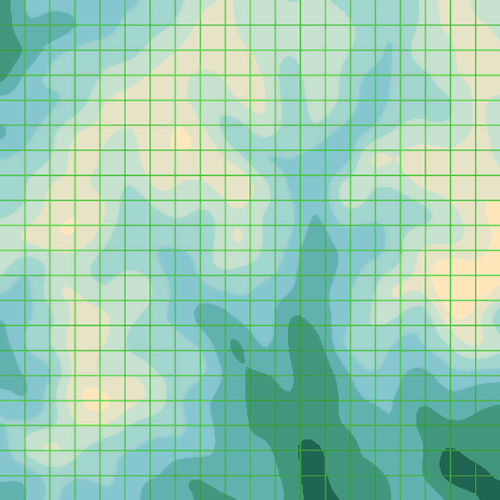
View Solution
What you see here is an elevation map of a mountain landscape. The yellowish spots are the peaks, and the dark spots the valleys. The area is divided into squares with a size of a hundred meters. We have at our disposal a function heightAt, which can give us the height, in meters, of any square on that map, where squares are represented by objects with x and y properties.
show heightAt x: 0, y: 0
show heightAt x: 11, y: 18○•○
We want to cross this landscape, on foot, from the top left to the bottom right. A grid can be approached like a graph. Every square is a node, which is connected to the squares around it.
We do not like wasting energy, so we would prefer to take the easiest route possible. Going uphill is heavier than going downhill, and going downhill is heavier than going level27. This function calculates the amount of ‘weighted meters’, between two adjacent squares, which represents how tired you get from walking (or climbing) between them. Going uphill is counted as twice as heavy as going downhill.
weightedDistance = (pointA, pointB) ->
heightDifference =
heightAt(pointB) - heightAt(pointA)
climbFactor = if heightDifference < 0 then 1 else 2
flatDistance =
if pointA.x is pointB.x or pointA.y is pointB.y
100
else
141
flatDistance + climbFactor * Math.abs heightDifference
show weightedDistance (x: 0, y: 0), (x: 1, y: 1)Note the flatDistance calculation. If the two points are on the same row or column, they are right next to each other, and the distance between them is a hundred meters. Otherwise, they are assumed to be diagonally adjacent, and the diagonal distance between two squares of this size is a hundred times the square root of two, which is approximately 141. One is not allowed to call this function for squares that are further than one step apart. (It could double-check this… but it is too lazy.)
○•○
Points on the map are represented by objects containing x and y properties. These three functions are useful when working with such objects:
point = (x, y) -> {x, y} # Same as {x: x, y: y}
addPoints = (a, b) -> point a.x + b.x, a.y + b.y
samePoint = (a, b) -> a.x is b.x and a.y is b.y
show samePoint addPoints(point(10, 10), point(4, -2)),
point(14, 8)Exercise 29
If we are going to find routes through this map, we will again need a function to create ‘signposts’, lists of directions that can be taken from a given point. Write a function possibleDirections, which takes a point object as argument and returns an array of nearby points. We can only move to adjacent points, both straight and diagonally, so squares have a maximum of eight neighbours. Take care not to return squares that lie outside of the map. For all we know the edge of the map might be the edge of the world.
# Compose a solution hereView Solution
To find a route on this map without having our browser cut off the program because it takes too long to finish, we have to stop our amateurish attempts and implement a serious algorithm. A lot of work has gone into problems like this in the past, and many solutions have been designed (some brilliant, others useless). A very popular and efficient one is called A* (pronounced A-star). We will spend the rest of the chapter implementing an A* route-finding function for our map.
Before I get to the algorithm itself, let me tell you a bit more about the problem it solves. The trouble with searching routes through graphs is that, in big graphs, there are an awful lot of them. Our Hiva Oa path-finder showed that, when the graph is small, all we needed to do was to make sure our paths did not revisit points they had already passed. On our new map, this is not enough anymore.
The fundamental problem is that there is too much room for going in the wrong direction. Unless we somehow manage to steer our exploration of paths towards the goal, a choice we make for continuing a given path is more likely to go in the wrong direction than in the right direction. If you keep generating paths like that, you end up with an enormous amount of paths, and even if one of them accidentally reaches the end point, you do not know whether that is the shortest path.
So what you want to do is explore directions that are likely to get you to the end point first. On a grid like our map, you can get a rough estimate of how good a path is by checking how long it is and how close its end is to the end point. By adding path length and an estimate of the distance it still has to go, you can get a rough idea of which paths are promising. If you extend promising paths first, you are less likely to waste time on useless ones.
○•○
But that still is not enough. If our map was of a perfectly flat plane, the path that looked promising would almost always be the best one, and we could use the above method to walk right to our goal. But we have valleys and hillsides blocking our paths, so it is hard to tell in advance which direction will be the most efficient path. Because of this, we still end up having to explore way too many paths.
To correct this, we can make clever use of the fact that we are constantly exploring the most promising path first. Once we have determined that path A is the best way to get to point X, we can remember that. When, later on, path B also gets to point X, we know that it is not the best route, so we do not have to explore it further. This can prevent our program from building a lot of pointless paths.
○•○
The algorithm, then, goes something like this…
There are two pieces of data to keep track of. The first one is called the open list, it contains the partial routes that must still be explored. Each route has a score, which is calculated by adding its length to its estimated distance from the goal. This estimate must always be optimistic, it should never overestimate the distance. The second is a set of nodes that we have seen, together with the shortest partial route that got us there. This one we will call the reached list. We start by adding a route that contains only the starting node to the open list, and recording it in the reached list.
Then, as long as there are any nodes in the open list, we take out the one that has the lowest (best) score, and find the ways in which it can be continued (by calling possibleDirections). For each of the nodes this returns, we create a new route by appending it to our original route, and adjusting the length of the route using weightedDistance. The endpoint of each of these new routes is then looked up in the reached list.
If the node is not in the reached list yet, it means we have not seen it before, and we add the new route to the open list and record it in the reached list. If we had seen it before, we compare the score of the new route to the score of the route in the reached list. If the new route is shorter, we replace the existing route with the new one. Otherwise, we discard the new route, since we have already seen a better way to get to that point.
We continue doing this until the route we fetch from the open list ends at the goal node, in which case we have found our route, or until the open list is empty, in which case we have found out that there is no route. In our case the map contains no unsurmountable obstacles, so there is always a route.
How do we know that the first full route that we get from the open list is also the shortest one? This is a result of the fact that we only look at a route when it has the lowest score. The score of a route is its actual length plus an optimistic estimate of the remaining length. This means that if a route has the lowest score in the open list, it is always the best route to its current endpoint — it is impossible for another route to later find a better way to that point, because if it were better, its score would have been lower.
○•○
Try not to get frustrated when the fine points of why this works are still eluding you. When thinking about algorithms like this, having seen ‘something like it’ before helps a lot, it gives you a point of reference to compare the approach to. Beginning programmers have to do without such a point of reference, which makes it rather easy to get lost. Just realise that this is advanced stuff, globally read over the rest of the chapter, and come back to it later when you feel like a challenge.
○•○
I am afraid that, for one aspect of the algorithm, I am going to have to invoke magic again. The open list needs to be able to hold a large amount of routes, and to quickly find the route with the lowest score among them. Storing them in a normal array, and searching through this array every time, is way too slow, so I give you a data structure called a binary heap. You create them with new, just like Date objects, giving them a function that is used to ‘score’ its elements as argument. The resulting object has the methods push and pop, just like an array, but pop always gives you the element with the lowest score, instead of the one that was pushed last.
View Solution
heap = new BinaryHeap()
_.each [2, 4, 5, 1, 6, 3], (number) ->
heap.push number
while heap.size() > 0
show heap.pop()Binary Heaps↓ discusses the implementation of this data structure, which is quite interesting. After you have read Object Orientation↓, you might want to take a look at it.
○•○
The need to squeeze out as much efficiency as we can has another effect. The Hiva Oa algorithm used arrays of locations to store routes, and copied them with the concat method when it extended them. This time, we can not afford to copy arrays, since we will be exploring lots and lots of routes. Instead, we use a ‘chain’ of objects to store a route. Every object in the chain has some properties, such as a point on the map, and the length of the route so far, and it also has a property that points at the previous object in the chain. Something like this:
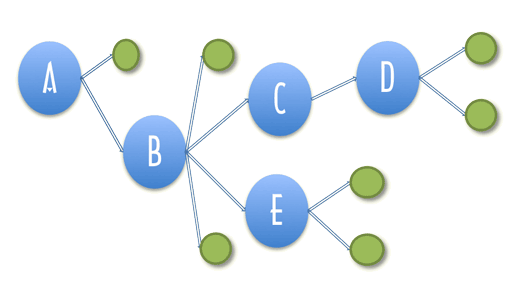
Where the blue circles are the relevant objects, and the lines represent properties — the end points are the values of the property. Object A is the start of a route here. Object B is used to build a new route, which continues from A. It has a property, which we will call from, pointing at the route it is based on. When we need to reconstruct a route later, we can follow these properties to find all the points that the route passed. Note that object B is part of two routes, one that ends in D and one that ends in E. When there are a lot of routes, this can save us much storage space — every new route only needs one new object for itself, the rest is shared with other routes that started the same way.
Exercise 30
Write a function estimatedDistance that gives an optimistic estimate of the distance between two points. It does not have to look at the height data, but can assume a flat map. Remember that we are only travelling straight and diagonally, and that we are counting the diagonal distance between two squares as 141.
# Compose a solution hereView Solution
Exercise 31
We will use a binary heap for the open list. What would be a good data structure for the reached list? This one will be used to look up routes, given a pair of x, y coordinates. Preferably in a way that is fast. Write three functions named makeReachedList, storeReached, and findReached. The first one creates your data structure, the second one, given a reached list, a point, and a route, stores a route in it, and the last one, given a reached list and point, retrieves a route or returns undefined to indicate that no route was found for that point.
# Compose a solution hereView Solution
Defining a type of data structure by providing a set of functions to create and manipulate such structures is a useful technique. It makes it possible to ‘isolate’ the code that makes use of the structure from the details of the structure itself. Note that, no matter which of the above two implementations is used, code that needs a reached list works in exactly the same way. It does not care what kind of objects are used, as long as it gets the results it expected.
This will be discussed in much more detail in Object Orientation↓, where we will learn to make object types like BinaryHeap, which are created using new and have methods to manipulate them.
○•○
Here we finally have the actual path-finding function:
findRoute = (from, to) ->
routeScore = (route) ->
if route.score is undefined
route.score = route.length +
estimatedDistance route.point, to
route.score
addOpenRoute = (route) ->
open.push route
storeReached reached, route.point, route
open = new BinaryHeap routeScore
reached = makeReachedList()
addOpenRoute point: from, length: 0
while open.size() > 0
route = open.pop()
if samePoint route.point, to
return route
_.each possibleDirections(route.point),
(direction) ->
known = findReached reached, direction
newLength = route.length +
weightedDistance route.point, direction
if not known or known.length > newLength
if known
open.remove known
addOpenRoute
point: direction,
from: route,
length: newLength
return nullFirst, it creates the data structures it needs, one open list and one reached list. routeScore is the scoring function given to the binary heap. Note how it stores its result in the route object, to prevent having to re-calculate it multiple times. addOpenRoute is a convenience function that adds a new route to both the open list and the reached list. It is immediately used to add the start of the route. Note that route objects always have the properties point, which holds the point at the end of the route, and length, which holds the current length of the route. Routes which are more than one square long also have a from property, which points at their predecessors.
The while loop, as was described in the algorithm, keeps taking the lowest-scoring route from the open list and checks whether this gets us to the goal point. If it does not, we must continue by expanding it. This is what the _.each takes care of. It looks up this new point in the reached list. If it is not found there, or the node found has a longer length that the new route, a new route object is created and added to the open list and reached list, and the existing route (if any) is removed from the open list.
What if the route in known is not on the open list? It has to be, because routes are only removed from the open list when they have been found to be the most optimal route to their endpoint. If we try to remove a value from a binary heap that is not on it, it will throw an exception, so if my reasoning is wrong, we will probably see an exception when running the function.
When code gets complex enough to make you doubt certain things about it, it is a good idea to add some checks that raise exceptions when something goes wrong. That way, you know that there are no weird things happening ‘silently’, and when you break something, you immediately see what you broke.
○•○
Note that this algorithm does not use recursion, but still manages to explore all those branches. The open list more or less takes over the role that the function call stack played in the recursive solution to the Hiva Oa problem — it keeps track of the paths that still have to be explored. Every recursive algorithm can be rewritten in a non-recursive way by using a data structure to store the ‘things that must still be done’.
○•○
Well, let us try our path-finder:
route = findRoute point(0, 0), point(19, 19)
runOnDemand -> show routeIf you ran all the code above, and did not introduce any errors, that call, though it might take an instant to run, should give us a route object. This object is rather hard to read. That can be helped by using the showRoute function which will show a route as a list of coordinates.
You can also pass multiple routes to showRoute, which can be useful when you are, for example, trying to plan a scenic route, which must include the beautiful viewpoint at (11, 17).
traverseRoute = (routes..., func) ->
_.each [routes...], (route) ->
while route
func
x: route.point.x
y: route.point.y
route = route.from
showRoute = (routes...) ->
traverseRoute routes..., show
runOnDemand ->
show '\n Easy route'
showRoute route
show '\n Sightseeing'
showRoute findRoute(point( 0, 0), point(11, 17)),
findRoute(point(11, 17), point(19, 19))If the order the points were listed in were difficult to follow then the list can be refined. Sorting it and removing duplicates can help.
showSortedRoute = (routes...) ->
points = []
traverseRoute routes..., (point) -> points.push point
# A sort needs a function that compares two points
# Pattern matching can decompose them into unique names
points.sort ({x:x1, y:y1}, {x:x2, y:y2}) ->
return dx if dx = x1 - x2
return dy if dy = y1 - y2
0
# The Underscore uniq function can get rid of doublets with
# help from a function that serializes the relevant properties
points = _.uniq points, true, ({x, y}) -> "#{x} #{y}"
show point for point in points
runOnDemand ->
showSortedRoute findRoute(point( 0, 0), point(11, 17)),
findRoute(point(11, 17), point(19, 19))○•○
You can also display routes on a map with a function like renderRoute. A web page with a map is created and the route points are used to create and position a series of small images. You can return later to the techniques that are used in its implementation. They are presented in the next chapters: objects in Object Orientation↓, CoffeeKup in Modularity↓ and pattern matching in Language Extras↓.
renderRoute = (routes...) ->
kup = if exports? then require 'coffeekup' else window.CoffeeKup
webdesign = ->
doctype 5
html ->
head ->
style '.map {position: absolute; left: 33px; top: 80px}'
body ->
header -> h1 'Route'
div class: 'map', ->
img src: 'http://autotelicum.github.com/' +
'Smooth-CoffeeScript/img/height-small.png'
img class: 'map', src: "#{ostrich}", width: size, height: size, \
style: "left: #{x*size}px; top: #{y*size}px" for {x, y} in points
points = []
traverseRoute routes..., (point) -> points.push point
routePage = kup.render webdesign,
locals:
size: 500 / 20 # Square map: size divided by fields
points: points
showDocument routePage, 565, 600
return
runOnDemand ->
renderRoute findRoute(point( 0, 0), point(11, 17)),
findRoute(point(11, 17), point(19, 19))
renderRoute findRoute(point( 0, 0), point(15, 3)),
findRoute(point(15, 3), point(19, 19))There is a different implementation in the source download: A web page with the map is served to your browser, then the route points are transferred via WebSockets to a snippet of CoffeeScript on the page that uses a canvas to draw the points on top of the map. There is more on that kind of thing in Modularity↓. The map looks like this:
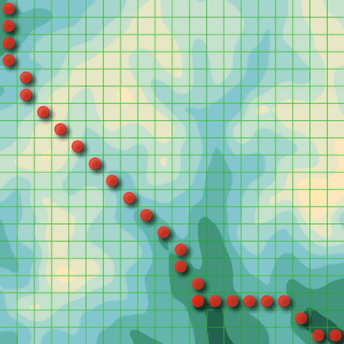
View Solution
○•○
Variations on the theme of searching an optimal route through a graph can be applied to many problems, many of which are not at all related to finding a physical path. For example, a program that needs to solve a puzzle of fitting a number of blocks into a limited space could do this by exploring the various ‘paths’ it gets by trying to put a certain block in a certain place. The paths that ends up with insufficient room for the last blocks are dead ends, and the path that manages to fit in all blocks is the solution.
Object-oriented Programming
In the early nineties, a thing called object-oriented programming stirred up the software industry. Most of the ideas behind it were not really new at the time, but they had finally gained enough momentum to start rolling, to become fashionable. Books were being written, courses given, programming languages developed. All of a sudden, everybody was extolling the virtues of object-orientation, enthusiastically applying it to every problem, convincing themselves they had finally found the right way to write programs.
These things happen a lot. When a process is hard and confusing, people are always on the lookout for a magic solution. When something looking like such a solution presents itself, they are prepared to become devoted followers. For many programmers — even today — object-orientation (or their view of it) is the gospel. When a program is not ‘truly object-oriented’, whatever that means, it is considered decidedly inferior.
Few fads have managed to stay popular for as long as this one, though. Object-orientation’s longevity can largely be explained by the fact that the ideas at its core are very solid and useful. In this chapter, we will discuss these ideas, along with CoffeeScript’s (rather succinct) take on them. The above paragraphs are by no means meant to discredit these ideas. What I want to do is warn the reader against developing an unhealthy attachment to them.
○•○
As the name suggests, object-oriented programming is related to objects. The central ideas are encapsulation, inheritance, and higher-order programming (using the same names in different types aka polymorphism). So far, we have used objects as loose aggregations of values, adding and altering their properties whenever we saw fit. In an object-oriented approach, objects are viewed as little worlds of their own, and the outside world may touch them only through a limited and well-defined interface, a number of specific methods and properties. The ‘reached list’ we used at the end of Searching↑ is an example of this: We used only three functions, makeReachedList, storeReached, and findReached to interact with it. These three functions form an interface for such objects.
The Date, Error, and BinaryHeap objects we have seen also work like this. Instead of providing regular functions for working with the objects, they provide a way to create such objects, using the new keyword, and a number of methods and properties that provide the rest of the interface.
○•○
One way to give an object methods is to attach function values to it.
rabbit = {}
rabbit.speak = (line) ->
show "The rabbit says '#{line}'"
rabbit.speak "Well, now you're asking me."In most cases, the method will need to know who it should act on. For example, if there are different rabbits, the speak method must indicate which rabbit is speaking. For this purpose, there is a special variable called this, which is always present when a function is called, and which points at the relevant object when the function is called as a method. A function is called as a method when it is looked up as a property, and immediately called, as in object.method(). Since it is very common to use this inside an object, it can be abbreviated from this.property or this.method() to @property or @method().
speak = (line) ->
show "The #{this.adjective} rabbit says '#{line}'"
whiteRabbit = adjective: "white", speak: speak
fatRabbit = adjective: "fat", speak: speak
whiteRabbit.speak "Oh my ears and whiskers, " +
"how late it's getting!"
fatRabbit.speak "I could sure use a carrot right now."○•○
I can now clarify the mysterious first argument to the apply method, for which we always used null in Functional Programming↑. This argument can be used to specify the object that the function must be applied to. For non-method functions, this is irrelevant, hence the null.
speak.apply fatRabbit, ['Yum.']Functions also have a call method, which is similar to apply, but you can give the arguments for the function separately instead of as an array:
speak.call fatRabbit, 'Burp.'○•○
It is common in object oriented terminology to refer to instances of something as an object. The whiteRabbit and fatRabbit can be seen as different instances of a more general Rabbit concept. In CoffeeScript such concepts are termed a class.
class Rabbit
constructor: (@adjective) ->
speak: (line) ->
show "The #{@adjective} rabbit says '#{line}'"
whiteRabbit = new Rabbit "white"
fatRabbit = new Rabbit "fat"
whiteRabbit.speak "Hurry!"
fatRabbit.speak "Tasty!"It is a convention, among CoffeeScript programmers, to start the names of classes with a capital letter. This makes it easy to distinguish them from object instances and functions.
○•○
The new keyword provides a convenient way of creating new objects. When a function is called with the word new in front of it, its this variable will point at a new object, which it will automatically return (unless it explicitly returns something else). Functions used to create new objects like this are called constructors.
The constructor for the Rabbit class is constructor: (@adjective) ->. The @adjective argument to the constructor does two things: It declares adjective as a property on this and it uses ‘pattern matching’ i.e. the same name to assign the argument named adjective to a property on this that is also named adjective. It could have been written in full form as constructor: (adjective) -> this.adjective = adjective.
killerRabbit = new Rabbit 'killer'
killerRabbit.speak 'GRAAAAAAAAAH!'
show killerRabbitWhen new Rabbit is called with the 'killer' argument, the argument is assigned to a property named adjective. So show killerRabbit ⇒ {adjective: 'killer'}.
Why is the new keyword even necessary? After all, we could have simply written this:
makeRabbit = (adjective) ->
adjective: adjective
speak: (line) -> show adjective + ': ' + line
blackRabbit = makeRabbit 'black'But that is not entirely the same. new does a few things behind the scenes. For one thing, our killerRabbit has a property called constructor, which points at the Rabbit function that created it. blackRabbit also has such a property, but it points at the Object function. They even have name properties so we can check them:
show killerRabbit.constructor.nameshow blackRabbit.constructor.name○•○
The objects that are created, whiteRabbit and fatRabbit, are specific instances. The whiteRabbit is not all kinds of white rabbits just a single one that happen to have the name whiteRabbit. If you want to create a class of say weight conscious rabbits then the extends keyword can help you accomplish that.
class WeightyRabbit extends Rabbit
constructor: (adjective, @weight) ->
super adjective
adjustedWeight: (relativeGravity) ->
(@weight * relativeGravity).toPrecision 2
tinyRabbit = new WeightyRabbit "tiny", 1.01
jumboRabbit = new WeightyRabbit "jumbo", 7.47
moonGravity = 1/6
jumboRabbit.speak "Carry me, I weigh
#{jumboRabbit.adjustedWeight(moonGravity)} stones"
tinyRabbit.speak "He ain't heavy, he is my brother"The call super adjective passes the argument on to the Rabbit constructor. A method in a derived class can with super call upon a method of the same name in its parent class.
○•○
Inheritance is useful because different types can share a single implementation of an algorithm. But it comes with a price-tag: the derived classes become tightly coupled to the parent class. Normally you make each part of a system as independent as possible, for example avoiding global variables and using arguments instead. That way you can read and understand each part in isolation and you can change them with little risk of breaking other parts of the system.
Due to the tight coupling that inheritance introduces it can be difficult to change a parent class without inadvertently risk breaking derived classes. This is called the fragile base class problem. A class that has no child classes and is only used through its published methods and properties can normally be changed quite freely — as long as the published methods and properties stay the same. When a class derives from it, then the child class may depend on the internal behaviour of the parent and it becomes problematic to change the base class.
To understand a derived class you will often have to understand the parent first. The implementation is distributed, instead of reading down through a function, you may have to look in different places where a class and its parent and their parent… implement each their part of the combined logic. Lets look at an example that matters — the balance on your bank account.
class Account
constructor: -> @balance = 0
transfer: (amount) -> @balance += amount
getBalance: -> @balance
batchTransfer: (amtList) ->
for amount in amtList
@transfer amount
yourAccount = new Account()
oldBalance = yourAccount.getBalance()
yourAccount.transfer salary = 1000
newBalance = yourAccount.getBalance()
show "Books balance:
#{salary is newBalance - oldBalance}."Hopefully this only shows the principle of how your bank has implemented its accounts. An account starts out with a zero balance, money can be credited (positive transfer) and debited (negative transfer), the balance can be shown and multiple transfers can be handled.
Other parts of the system can balance the books by checking that transfers match the differences on the accounts. Those parts of the system were unfortunately not known to the developer of the AccountWithFee class.
class AccountWithFee extends Account
fee: 5
transfer: (amount) ->
super amount - @fee
# feeAccount.transfer @fee
yourAccount = new AccountWithFee()
oldBalance = yourAccount.getBalance()
yourAccount.transfer salary = 1000
newBalance = yourAccount.getBalance()
show "Books balance:
#{salary is newBalance - oldBalance}."The books no longer balance. The issue is that the AccountWithFee class has violated what is called the substitution principle. It is a patch of the existing Account class and it breaks programs that assume that all account classes behave in a certain way. In a system with thousands of classes such patches can cause severe problems. To avoid this kind of problem it is up to the developer to ensure that inherited classes can fully substitute their parent classes.
To avoid excessive fraudulent transactions when a card is lost or stolen, the bank has implemented a system which checks that withdrawals do not exceed a daily limit. The LimitedAccount class checks each transfer, reduces the @dailyLimit and reports an error if it is exceeded.
class LimitedAccount extends Account
constructor: -> super; @resetLimit()
resetLimit: -> @dailyLimit = 50
transfer: (amount) ->
if amount < 0 and (@dailyLimit += amount) < 0
throw new Error "You maxed out!"
else
super amount
lacc = new LimitedAccount()
lacc.transfer 50
show "Start balance #{lacc.getBalance()}"
try lacc.batchTransfer [-1..-10]
catch error then show error.message
show "After batch balance #{lacc.getBalance()}"Your bank is so successful that batchTransfer has to be speeded up (a real version would involve database updates). The developer, that got the task of making batchTransfer faster, had been on vacation when the LimitedAccount class was implemented and did not see it among the thousands of other classes in the system.
class Account
constructor: -> @balance = 0
transfer: (amount) -> @balance += amount
getBalance: -> @balance
batchTransfer: (amtList) ->
add = (a,b) -> a+b
sum = (list) -> _.reduce list, add, 0
@balance += sum amtList
class LimitedAccount extends Account
constructor: -> super; @resetLimit()
resetLimit: -> @dailyLimit = 50
transfer: (amount) ->
if amount < 0 and (@dailyLimit += amount) < 0
throw new Error "You maxed out!"
else
super amount
lacc = new LimitedAccount()
lacc.transfer 50
show "Starting with #{lacc.getBalance()}"
try lacc.batchTransfer [-1..-10]
catch error then show error.message
show "After batch balance #{lacc.getBalance()}"Instead of the previous implementation that called transfer each time, the whole batch is added together and the balance is directly updated. That made batchTransfer much faster, but it also broke the LimitedAccount class. It is an example of the fragile base class problem. In this limited example it is easy to spot the issue, in a large system it can cause considerable headache.
Using inheritance in the right way requires careful and thoughtful programming. If your child classes are type compatible with their parent then you are adhering to the substitution principle. Usually using ownership is more appropriate, that is when a class has an instance of another class inside it and uses its public interface.
It is a common convention in CoffeeScript to use an _ in front of methods that are to be considered private.
○•○
Where did the constructor property come from? It is part of the prototype of a rabbit. Prototypes are a powerful, if somewhat confusing, part of the way CoffeeScript objects work. Every object is based on a prototype, which gives it a set of inherent properties. Simple objects are based on the most basic prototype, which is associated with the Object constructor. In fact, typing {} is equivalent to typing new Object().
simpleObject = {}
show simpleObject.constructor.name
show simpleObject.toString()toString is a method that is part of the Object prototype. This means that all simple objects have a toString method, which converts them to a string. Our rabbit objects are based on the prototype associated with the Rabbit constructor. You can use a constructor’s prototype property to get access to, well, their prototype:
show _.methods Rabbit
show _.methods Rabbit.prototype
show Rabbit.prototype.constructor.name
Rabbit.prototype.speak 'I am generic'
Rabbit::speak 'I am not initialized'Instead of Rabbit.prototype.speak you can write Rabbit::speak.
Rabbit::speak 'I am not initialized'Every function automatically gets a prototype property, whose constructor property points back at the function. Because the rabbit prototype is itself an object, it is based on the Object prototype, and shares its toString.
show killerRabbit.toString is simpleObject.toString○•○
Even though objects seem to share the properties of their prototype, this sharing is one-way. The properties of the prototype influence the object based on it, but the properties of this object never change the prototype.
The precise rules are this: When looking up the value of a property, CoffeeScript first looks at the properties that the object itself has. If there is a property that has the name we are looking for, that is the value we get. If there is no such property, it continues searching the prototype of the object, and then the prototype of the prototype, and so on. If no property is found, the value undefined is given. On the other hand, when setting the value of a property, CoffeeScript never goes to the prototype, but always sets the property in the object itself.
Rabbit::teeth = 'small'
show killerRabbit.teeth
killerRabbit.teeth = 'long, sharp, and bloody'
show killerRabbit.teeth
show Rabbit::teethThis does mean that the prototype can be be used at any time to add new properties and methods to all objects based on it. For example, it might become necessary for our rabbits to dance.
Rabbit::dance = ->
show "The #{@adjective} rabbit dances a jig."
killerRabbit.dance()And, as you might have guessed, the prototypical rabbit is the perfect place for values that all rabbits have in common, such as the speak method. Here is a new approach to the Rabbit constructor:
Rabbit = (adjective) ->
@adjective = adjective
Rabbit::speak = (line) ->
show "The #{@adjective} rabbit says '#{line}'"
hazelRabbit = new Rabbit "hazel"
hazelRabbit.speak "Good Frith!"○•○
The fact that all objects have a prototype and receive some properties from this prototype can be tricky. It means that using an object to store a set of things, such as the cats from Data Structures↑, can go wrong. If, for example, we wondered whether there is a cat called 'constructor', we would have checked it like this:
noCatsAtAll = {}
if "constructor" of noCatsAtAll
show "Yes, there is a cat called 'constructor'."This is problematic. A related problem is that it can often be practical to extend the prototypes of standard constructors such as Object and Array with new useful functions. For example, we could give all objects a method called allProperties, which returns an array with the names of the (non-hidden) properties that the object has:
Object::allProperties = ->
for property of this
property
test = x: 10, y: 3
show test.allProperties()
delete Object::allPropertiesAnd that immediately shows the problem. Now that the Object prototype has a property called allProperties, looping over the properties of any object, using for and of, will also give us that shared property, which is generally not what we want. We are interested only in the properties that the object itself has.
Fortunately, there is a way to find out whether a property belongs to the object itself or to one of its prototypes. Every object has a method called hasOwnProperty, which tells us whether the object has a property with a given name. When looping over the properties of an object CoffeeScript provides a keyword own so we are saved from using a clumsy if test on each property. Using own, we can write an ownProperties method like this:
Object::ownProperties = ->
for own property of this
property
test = 'Fat Igor': true, 'Fireball': true
show test.ownProperties()
delete Object::ownPropertiesAnd of course, we can abstract that into a higher-order function. Note that the action function is called with both the name of the property and the value it has in the object.
forEachOf = (object, action) ->
for own property, value of object
action property, value
chimera = head: "lion", body: "goat", tail: "snake"
forEachOf chimera, (name, value) ->
view "The #{name} of a #{value}."But, what if we find a cat named hasOwnProperty? (You never know.) It will be stored in the object, and the next time we want to go over the collection of cats, calling object.hasOwnProperty will fail, because that property no longer points at a function value. This can be solved by doing something ugly:
forEachIn = (object, action) ->
for property of object
if Object::hasOwnProperty.call object, property
action property, object[property]
test = name: "Mordecai", hasOwnProperty: "Uh-oh"
forEachIn test, (name, value) ->
view "Property #{name} = #{value}"Here, instead of using the method found in the object itself, we get the method from the Object prototype, and then use call to apply it to the right object. Unless someone actually messes with the Object.prototype method (do not do that), this should work correctly.
test = name: "Mordecai", hasOwnProperty: "Uh-oh"
for own property, value of test
show "Property #{property} = #{value}"Fortunately the own keyword saves the day even in this situation, so it is the right thing to use.
○•○
hasOwnProperty can also be used in those situations where we have been using the of operator to see whether an object has a specific property. There is one more catch, however. We saw in Data Structures↑ that some properties, such as toString, are ‘hidden’, and do not show up when going over properties with for/of. It turns out that browsers in the Gecko family (Firefox, most importantly) give every object a hidden property named __proto__, which points to the prototype of that object. hasOwnProperty will return true for this one, even though the program did not explicitly add it. Having access to the prototype of an object can be very convenient, but making it a property like that was not a very good idea. Still, Firefox is a widely used browser, so when you write a program for the web you have to be careful with this.
The advice here is not to name any of your own properties with double underscore since they then can clash with system specific details like __proto__. As mentioned before identifiers beginning with one underscore is fine and used to indicate something private to your implementation. There is a method propertyIsEnumerable, which returns false for hidden properties, and which can be used to filter out strange things like __proto__. An expression such as this one can be used to reliably work around this:
obj = foo: 'bar'
# This test is needed to avoid hidden properties ...
show Object::hasOwnProperty.call(obj, 'foo') and
Object::propertyIsEnumerable.call(obj, 'foo')
# ... because this returns true ...
show Object::hasOwnProperty.call(obj, '__proto__')
# ... this is required to get false.
show Object::hasOwnProperty.call(obj, '__proto__') and
Object::propertyIsEnumerable.call(obj, '__proto__')Nice and simple, no? This is one of the not-so-well-designed aspects of the system underlying CoffeeScript (recondite JavaScript). Objects play both the role of ‘values with methods’, for which prototypes work great, and ‘sets of properties’, for which prototypes only get in the way.
○•○
Writing the above kind of expression every time you need to check whether a property is present in an object is unworkable. We could put it into a function, but a better approach is to write a constructor and a prototype specifically for situations like this, where we want to approach an object as just a set of properties. Because you can use it to look things up by name, we will call it a Dictionary.
class Dictionary
constructor: (@values = {}) ->
store: (name, value) ->
@values[name] = value
lookup: (name) ->
@values[name]
contains: (name) ->
Object::hasOwnProperty.call(@values, name) and
Object::propertyIsEnumerable.call(@values, name)
each: (action) ->
for own property, value of @values
action property, value
colours = new Dictionary
Grover: 'blue'
Elmo: 'orange'
Bert: 'yellow'
show colours.contains 'Grover'
colours.each (name, colour) ->
view name + ' is ' + colourNow the whole mess related to approaching objects as plain sets of properties has been ‘encapsulated’ in a convenient interface: one constructor and four methods. Note that the values property of a Dictionary object is not part of this interface, it is an internal detail, and when you are using Dictionary objects you do not need to directly use it.
○•○
Whenever you write an interface, it is a good idea to add a comment with a quick sketch of what it does and how it should be used. This way, when someone, possibly yourself three months after you wrote it, wants to work with the interface, they can quickly see how to use it, and do not have to study the whole program.
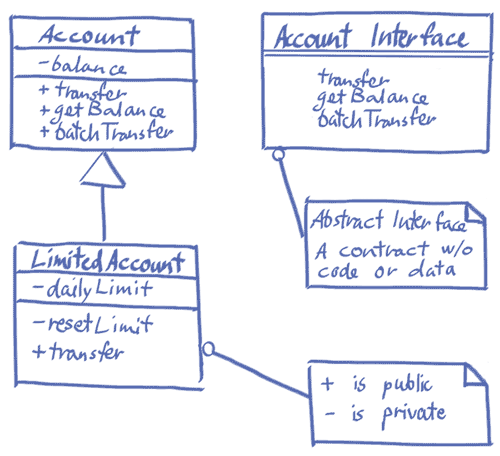
Using a piece of paper, a whiteboard or as here a pen and tablet can be effective to sketch your designs. Using a notation roughly similar to UML (Unified Modeling Language) can help in communicating your design to others. Usually you do not need a tool28 — unless you really want to or work in a large administrative setting. You can find a quick reference to UML notation via web search. The most useful diagram is the interaction or sequence diagram. Use it to specify how objects talk to each other — especially in distributed systems. The class diagram shown above presents a static view of the system so it is mostly for initial designs.
Most of the time, when you are designing an interface, you will soon find some limitations and problems in whatever you came up with, and change it. To prevent wasting your time, it is advisable to document your interfaces only after they have been used in a few real situations and proven themselves to be practical. — Of course, this might make it tempting to forget about documentation altogether. Personally, I treat writing documentation as a ‘finishing touch’ to add to a system. When it feels ready, it is time to write something about it, and to see if it sounds as good in English (or whatever language) as it does in CoffeeScript (or whatever programming language).
○•○
The distinction between the external interface of an object and its internal details is important for two reasons. Firstly, having a small, clearly described interface makes an object easier to use. You only have to keep the interface in mind, and do not have to worry about the rest unless you are changing the object itself.
Secondly, it often turns out to be necessary or practical to change something about the internal implementation of a class, to make it more efficient, for example, or to fix some problem. When outside code is accessing every single property and detail in the object, you can not change any of them without also updating a lot of other code. If outside code only uses a small interface, you can do what you want, as long as you do not change the interface.
Some people go very far in this. They will, for example, never include properties in the interface of object, only methods — if their object type has a length, it will be accessible with the getLength method, not the length property. This way, if they ever want to change their object in such a way that it no longer has a length property, for example because it now has some internal array whose length it must return, they can update the function without changing the interface.
My own take is that in most cases this is not worth it. Adding a getLength method which only contains return this.length mostly just adds meaningless code, and, in most situations, I consider meaningless code a bigger problem than the risk of having to occasionally change the interface to my objects.
○•○
Adding new methods to existing prototypes can be very convenient. Especially the Array and String prototypes in CoffeeScript could use a few more basic methods. We could, for example, replace forEach and map with methods on arrays, and make the startsWith function we wrote in Data Structures↑ a method on strings.
However, if your code has to run as a library used by others or as a program on a web-page together with another program (either written by you or by someone else) which uses for/of naively — the way we have been using it so far — then adding things to prototypes, especially the Object and Array prototype, will definitely break something, because these loops will suddenly start seeing those new properties. For this reason, some people prefer not to touch these prototypes at all. Of course, if you are careful, and you do not expect your code to have to coexist with badly-written code, adding methods to standard prototypes is a perfectly good technique.
Regular Expressions
At various points in the previous chapters, we had to look for patterns in string values. In Data Structures↑ we extracted date values from strings by writing out the precise positions at which the numbers that were part of the date could be found. Later, in Functional Programming↑, we saw some particularly ugly pieces of code for finding certain types of characters in a string, for example the characters that had to be escaped in HTML output.
Regular expressions are a language for describing patterns in strings. They form a small, separate language, which is embedded inside CoffeeScript (and in various other programming languages, in one way or another). It is not a very readable language — big regular expressions tend to be quite unreadable. To make them more readable CoffeeScript has extended regular expressions where you can generously add comments to the different parts. Examples of these are shown later. Still regular expressions are difficult to read, but they are a useful tool that can really simplify string-processing programs.
○•○
Just like strings get written between quotes, regular expression patterns get written between slashes ( /). This means that slashes inside the expression have to be escaped.
slash = /\//;
show 'AC/DC'.search slashThe search method resembles indexOf, but it searches for a regular expression instead of a string. Patterns specified by regular expressions can do a few things that strings can not do. For a start, they allow some of their elements to match more than a single character. In Functional Programming↑, when extracting mark-up from a document, we needed to find the first asterisk or opening brace in a string. That could be done like this:
asteriskOrBrace = /[\{\*]/
story = 'We noticed the *giant sloth*, ' +
'hanging from a giant branch.';
show story.search asteriskOrBraceThe [ and ] characters have a special meaning inside a regular expression. They can enclose a set of characters, and they mean ‘any of these characters’. Most non-alphanumeric characters have some special meaning inside a regular expression, so it is a good idea to always escape them with a backslash29 when you use them to refer to the actual characters.
○•○
There are a few shortcuts for sets of characters that are needed often. The dot (.) can be used to mean ‘any character that is not a newline’, an escaped ‘d’ (\d) means ‘any digit’, an escaped ‘w’ (\w) matches any alphanumeric character (including underscores, for some reason), and an escaped ’s’ (\s) matches any white-space (tab, newline, space) character.
digitSurroundedBySpace = /\s\d\s/
show '1a 2 3d'.search digitSurroundedBySpaceThe escaped ‘d’, ‘w’, and ’s’ can be replaced by their capital letter to mean their opposite. For example, \S matches any character that is not white-space. When using [ and ], a pattern can be inverted by starting with a ^ character:
notABC = /[^ABC]/
show 'ABCBACCBBADABC'.search notABCAs you can see, the way regular expressions use characters to express patterns makes them A) very short, and B) very hard to read.
Exercise 32
Write a regular expression that matches a date in the format 'XX/XX/XXXX', where the Xs are digits. Test it against the string 'born 15/11/2003 (mother Spot): White Fang'.
# Compose a solution hereView Solution
Sometimes you need to make sure a pattern starts at the beginning of a string, or ends at its end. For this, the special characters ^ and $ can be used. The first matches the start of the string, the second the end.
show /a+/.test 'blah'
show /^a+$/.test 'blah'The first regular expression matches any string that contains an a character, the second only those strings that consist entirely of a characters.
Note that regular expressions are objects, and have methods. Their test method returns a boolean indicating whether the given string matches the expression.
The code \b matches a ‘word boundary’, which can be punctuation, white-space, or the start or end of the string.
show /cat/.test 'concatenate'
show /\bcat\b/.test 'concatenate'○•○
Parts of a pattern can be allowed to be repeated a number of times. Putting an asterisk ( * ) after an element allows it to be repeated any number of times, including zero. A plus (+) does the same, but requires the pattern to occur at least one time. A question mark (?) makes an element ‘optional’ — it can occur zero or one times.
parenthesizedText = /\(.*\)/
show "Its (the sloth's) claws were gigantic!"\
.search parenthesizedTextWhen necessary, braces can be used to be more precise about the amount of times an element may occur. A number between braces ({4}) gives the exact amount of times it must occur. Two numbers with a comma between them ({3,10}) indicate that the pattern must occur at least as often as the first number, and at most as often as the second one. Similarly, {2,} means two or more occurrences, while {,4} means four or less.
To make big regular expressions more readable CoffeeScript has extended regular expressions. They are delimited by /// and allow comments to be added to the different parts. They ignore formatting, so they can be split over several lines and placed in a column.
datePattern = /\d{1,2}\/\d\d?\/\d{4}/
show 'born 15/11/2003 (mother Spot): White Fang'\
.search datePattern
datePattern = ///
\d{1,2} # day
/ # separator
\d\d? # month
/ # separator
\d{4} # year
///
show 'born 15/11/2003 (mother Spot): White Fang'\
.search datePatternThe pieces /\d{1,2}/ and /\d\d?/ both express ‘one or two digits’.
Exercise 33
Write a pattern that matches e-mail addresses. For simplicity, assume that the parts before and after the @ can contain only alphanumeric characters and the characters . and - (dot and dash), while the last part of the address, the country code or top level domain after the last dot, may only contain alphanumeric characters, and must be two or three characters long.
# Compose a solution hereView Solution
Part of a regular expression can be grouped together with parentheses. This allows us to use * and such on more than one character. For example:
cartoonCrying = /boo(hoo+)+/i
show "Then, he exclaimed 'Boohoooohoohooo'"\
.search cartoonCryingWhere did the i at the end of that regular expression come from? After the closing slash, ‘options’ may be added to a regular expression. An i, here, means the expression is case-insensitive, which allows the lower-case B in the pattern to match the upper-case one in the string.
A pipe character (|) is used to allow a pattern to make a choice between two elements. For example:
holyCow = /(sacred|holy) (cow|bovine|bull|taurus)/i
show holyCow.test 'Sacred bovine!'○•○
Often, looking for a pattern is just a first step in extracting something from a string. In previous chapters, this extraction was done by calling a string’s indexOf and slice methods a lot. Now that we are aware of the existence of regular expressions, we can use the match method instead. When a string is matched against a regular expression, the result will be null if the match failed, or an array of matched strings if it succeeded.
show 'No'.match /Yes/
show '... yes'.match /yes/
show 'Giant Ape'.match /giant (\w+)/iThe first element in the returned array is always the part of the string that matched the pattern. As the last example shows, when there are parenthesized parts in the pattern, the parts they match are also added to the array. Often, this makes extracting pieces of a string very easy.
quote = "My mind is a swirling miasma " +
"(a poisonous fog thought to " +
"cause illness) of titilating " +
"thoughts and turgid ideas."
parenthesized = quote.match ///
(\w+) # Word
\s* # Whitespace
\((.*)\) # Explanation
///
if parenthesized isnt null
show "Word: #{parenthesized[1]} " +
"Explanation: #{parenthesized[2]}"If you insert another set of parentheses in this example, then you will see that the match stretches from the first to the last parentheses. This is because the matching is greedy, it tries to match as long a string as possible. You can change the .* to [^)]* to prevent the match from stretching beyond the first closing parentheses.
Exercise 34
Re-write the function extractDate that we wrote in Data Structures↑. When given a string, this function looks for something that follows the date format we saw earlier. If it can find such a date, it puts the values into a Date object. Otherwise, it throws an exception. Make it accept dates in which the day or month are written with only one digit.
# Compose a solution hereView Solution
The replace method of string values, which we saw in Functional Programming↑, can be given a regular expression as its first argument. show 'Borobudur'.replace /[ou]/g, 'a' Notice the g character after the regular expression. It stands for ‘global’, and means that every part of the string that matches the pattern should be replaced. When this g is omitted, only the first 'o' would be replaced.
Sometimes it is necessary to keep parts of the replaced strings. For example, we have a big string containing the names of people, one name per line, in the format “Lastname, Firstname”. We want to swap these names, and remove the comma, to get a simple “Firstname Lastname” format.
names = '''Picasso, Pablo
Gauguin, Paul
Van Gogh, Vincent'''
show names.replace /([\w ]+), ([\w ]+)/g, '$2 $1'
# Non-printable characters can be tricky in regular
# expressions, actually all non-ASCII characters can
# be, they can be represented with their numeric codes:
# unicode \u0020 = hexadecimal \x20 = ascii #32 = ' '
show names.replace ///
([\w\x20]+) # Lastname
,\u0020
([\w\x20]+) # Firstname
///g, '$2 $1'The $1 and $2 in the replacement string refer to the parenthesized parts in the pattern. $1 is replaced by the text that matched against the first pair of parentheses, $2 by the second, and so on, up to $9.
If you have more than 9 parentheses parts in your pattern, this will no longer work. But there is one more way to replace pieces of a string, which can also be useful in some other tricky situations. When the second argument given to the replace method is a function value instead of a string, this function is called every time a match is found, and the matched text is replaced by whatever the function returns. The arguments given to the function are the matched elements, similar to the values found in the arrays returned by match: The first one is the whole match, and after that comes one argument for every parenthesized part of the pattern.
eatOne = (match, amount, unit) ->
amount = Number(amount) - 1
if amount is 1
unit = unit.slice 0, unit.length - 1
else if amount is 0
unit = unit + 's'
amount = 'no'
amount + ' ' + unit
stock = '1 lemon, 2 cabbages, and 101 eggs'
stock = stock.replace /(\d+) (\w+)/g, eatOne
show stockExercise 35
That last trick can be used to make the HTML-escaper from Functional Programming↑ more efficient. You may remember that it looked like this:
escapeHTML = (text) ->
replacements = [[/&/g, '&']
[/"/g, '"']
[/</g, '<']
[/>/g, '>']]
forEach replacements, (replace) ->
text = text.replace replace[0], replace[1]
text
show escapeHTML '< " & " >'Write a new function escapeHTML, which does the same thing, but only calls replace once.
# Compose a solution hereView Solution
There are cases where the pattern you need to match against is not known while you are writing the code. Say we are writing a (very simple-minded) obscenity filter for a message board. We only want to allow messages that do not contain obscene words. The administrator of the board can specify a list of words that he or she considers unacceptable.
The most efficient way to check a piece of text for a set of words is to use a regular expression. If we have our word list as an array, we can build the regular expression like this:
badWords = ['ape', 'monkey', 'simian', 'gorilla', 'evolution']
pattern = new RegExp badWords.join('|'), 'i'
isAcceptable = (text) ->
!pattern.test text
show isAcceptable 'Mmmm, grapes.'
show isAcceptable 'No more of that monkeybusiness, now.'We could add \b patterns around the words, so that the thing about grapes would not be classified as unacceptable. That would also make the second one acceptable, though, which is probably not correct. Obscenity filters are hard to get right (and usually way too annoying to be a good idea).
The first argument to the RegExp constructor is a string containing the pattern, the second argument can be used to add case-insensitivity or globalness. When building a string to hold the pattern, you have to be careful with backslashes. Because, normally, backslashes are removed when a string is interpreted, any backslashes that must end up in the regular expression itself have to be escaped:
digits = new RegExp '\\d+'
show digits.test '101'○•○
The most important thing to know about regular expressions is that they exist, and can greatly enhance the power of your string-mangling code. They are so cryptic that you will probably have to look up the details on them the first ten times you want to make use of them. Persevere, and you will soon be off-handedly writing expressions that look like occult gibberish.
When your tasks become too complex for regular expressions then have a look at how CoffeeScript is implemented. It uses Jison, a parser generator. With it you define a grammar for the language you want your program to be able to read i.e. parse. Jison then generates a module that can read data in that format. You integrate the module in your program and can then perform appropriate actions when different parts of the data is read. It is an advanced tool, that begins where regular expressions leave off.
Modularity
This chapter deals with the process of organising programs.30 In small programs, organisation rarely becomes a problem. As a program grows, however, it can reach a size where its structure and interpretation become hard to keep track of. Easily enough, such a program starts to look like a bowl of spaghetti, an amorphous mass in which everything seems to be connected to everything else.
In top down design you look at the overall structure of your application and divide it into smaller parts. There are many ways to do this, one way is to distinguish between technical and application specific areas. For example instead of inserting statements that write application activity in files in various places, the technical part — writing in a file, checking for errors and handling daily log roll-overs — can be placed in a logging utility as a technical service.
A useful technique is to use a layered approach, where lower layers do not know of higher layers. For example when communicating between processes, lower level protocols can be encapsulated in a layer and when data arrives — instead of a lower layer directly calling a function to handle the data in a higher layer — the lower layer raises an event31 that an interested higher layer can be listening to. It is analogue to what we saw in Error Handling↑ where a failing function does not have any knowledge of who or how an exception will be handled.
When structuring a program in CoffeeScript, we do two things. We separate it into smaller parts, called modules, each of which has a specific role, and we specify the relations between these parts.
In Searching↑, while finding routes, we made use of a number of functions described in Functional Programming↑. The chapter also defined some concepts that had nothing in particular to do with route planning, such as flatten, partial and the BinaryHeap type. BinaryHeap was treated as a black box, we only had to know how to use it, we did not have to know how it internally works. That kind of encapsulation is the essence of modularity and of Object Orientation↑.
The flatten function was reused from the Underscore library. We needed the partial function in a few places and haphazardly just added it to the environment where we needed it. It would have been easy to simply add partial to the Underscore library, but that would mean that we had to add it every time a new version of Underscore is released.
We could create our own module instead and place the missing parts there, then we would have to refer to two libraries whenever we are using fundamental functions. Or we could create a module with our functions that include Underscore and use the functions from it to build our own. Our module would then depend on Underscore. When a module depends on another module, it uses functions or variables from that module, and will only work when the module is loaded.
It is a good idea to make sure dependencies never form a circle. Not only do circular dependencies create a practical problem (if module A and B depend on each other, which one should be loaded first?), it also makes the relation between the modules less straightforward, and can result in a modularised version of the spaghetti I mentioned earlier.
○•○
Most modern programming languages have some kind of module system built in. In CoffeeScript it sort of depends… In the standard CoffeeScript environment we have a module system based on CommonJS require. When using CoffeeScript in other environments, such as on a page in a web browser, then we do not have require and must rely on system specific services or once again invent something ourselves32.
The most obvious way to start is to put every module in a different file. This makes it clear which code belongs to which module. In this chapter we will return to the Seed of Life example you saw in the Preface↑ and make a server controlled, animated version of it. For this purpose I have extracted the mathematical calculations behind the drawing and placed them in a file, '10-MathFix.coffee'. It contains a CircularPosition class we can use to get positions about a 1⁄6 apart on a unit circle and a fix for a floating point rounding error. It also uses the prelude and has a small print utility at the end. It is not a module yet, we will stepwise refine it so it can be used in both a server and a browser environment.
require "./prelude"
Pi2 = Math.PI*2
# Create an array with angles on the unit circle.
angles = (angle for angle in [0...Pi2] by 1/3*Math.PI)
# Remove the last element if 2*PI were included
# due to floating point rounding on additions.
epsilon = 1e-14
lastAngle = angles[angles.length - 1]
# Use an interval to test floating point value
if Pi2 - epsilon < lastAngle < Pi2 + epsilon
angles.length = angles.length - 1
# Encapsulation of a pair of (x, y) coordinates
class Point
constructor: (@x, @y) ->
toString: -> "{x:#{@x.toPrecision 4}," +
" y:#{@y.toPrecision 4}}"
# Math class that returns points on the unit
# circle, offset by step if given non-zero.
class CircularPosition
constructor: (@_step = 0) -> @_count = 0
nextPoint: ->
index = @_count % angles.length
angle = angles[index] + @_step * @_count++
new Point Math.cos(angle), Math.sin(angle)
circ = new CircularPosition 0.01
for i in [0...6]
show "#{i}: #{circ.nextPoint()}"The first thing is to remove the print utility at the end33. The next is the require './prelude', while the prelude has served us well in the course of this book, it is not intended for modules. The prelude includes a variety of definitions so we have been free to focus on each aspect of CoffeeScript without distraction. However it pulls these definitions into a shared namespace either directly or via the globalize function (described later in this chapter). This namespace is shared between all modules that a program consists of and since the purpose of a module is for us to be able to reuse it in various projects, a module should not ‘pollute’ this scarce, shared resource. In other words, you can use the prelude, when you are experimenting with a new algorithm, but do not use it when you create a reusable module.
○•○
When much code is loaded into an environment, it will use many top-level variable names. Once there is more code than you can really keep track of, it becomes very easy to accidentally use a name that was already used for something else. This will break the code that used the original value. The proliferation of top-level variables is called name-space pollution, and it has been a rather severe problem in JavaScript — the language will not warn you when you redefine an existing variable.
CoffeeScript greatly reduces this problem by automatically encapsulating modules. You only have to avoid directly using top-level variables. In particular modules should not use top-level variables for values that are not part of their external interface.
○•○
In CoffeeScript, ‘top-level’ variables all live together in a single place. In browsers, this place is an object that can be found under the name window. The name is somewhat odd, environment or top would have made more sense, but since browsers associate an environment with a window or a ‘frame’, someone decided that window was a logical name. In the standard CoffeeScript environment it is called global.
show global.process.argv[0]
show global.console.log is console.log
show global.global.global.global.global.consoleAs the third line shows, the name global is merely a property of this environment object, pointing at itself.
○•○
Not being able to define any internal functions and variables at all in your modules is, of course, not very practical. Fortunately, there is a trick to get around this. We could write all the code for the module inside a function, and then add the variables that are part of the module’s interface to the top-level object. Because they were created in the same parent function, all the functions of the module can see each other, but code outside of the module can not. The wrapping in a function is done by CoffeeScript automatically. In the server environment, instead of assigning directly to the top-level environment our module will export its definitions. In the browser we have to assign to the top-level window, which when a module is loaded by a browser is the same as this. All we have to do is append this one line to our math module:
(exports ? this).CircularPosition = CircularPositionIf exports is defined then CircularPosition is added to it otherwise it is added to the top-level environment object. This change has been done in '10-Circular.coffee' and the module is now usable from another module. The other definitions such as the Point class are not visible to other modules. Objects of Point type are of course visible as they are returned by nextPoint. You can use this modular information hiding when creating classes, if you want some definitions to be more private than simply naming them with an '_' in front. We can verify this in an ad-hoc test, this one is called '10-CircularTest.coffee':
cp = require "./10-Circular"
show = console.log
circ = new cp.CircularPosition 0.01
for i in [0...6]
show "#{i}: #{circ.nextPoint()}"
try
show "Instantiating a new Point:"
p = new cp.Point 0, 0
show "Created a Point"
catch e then show e.message
show "CircularPosition namespace:"
show cpThe show function was defined in the prelude, so we no longer have access to it. In the underlying environment there is a function console.log that can be used for output. Instead of using console.log directly, defining show as an alias for it makes it easy to copy such code into another environment, the browser were console.log does not exist. When we have many show calls, we only have to change in one place to redirect them to alert or debug output.
The process that we have been through — identifying a rounding error, extracting the implementation into a separate module where it is fixed — is called refactoring and it is an essential part of developing applications. Looking through code and finding places where it can be improved in functionality or in clarity results in a better overall system.
○•○
Designing an interface for a module or an object type is one of the subtler aspects of programming. On the one hand, you do not want to expose too many details. They will only get in the way when using the module. On the other hand, you do not want to be too simple and general, because that might make it impossible to use the module in complex or specialised situations.
Sometimes the solution is to provide two interfaces, a detailed ‘low-level’ one for complicated things, and a simple ‘high-level’ one for straightforward situations. The second one can usually be built very easily using the tools provided by the first one.
In other cases, you just have to find the right idea around which to base your interface. The best way to learn the value of good interface design is, unfortunately, to use bad interfaces. Once you get fed up with them, you will figure out a way to improve them, and learn a lot in the process. Try not to assume that a lousy interface is ‘just the way it is’. Fix it, or wrap it in a new interface that is better.
○•○
Just like an object type, a module has an interface. In collection-of-functions modules such as Underscore, the interface usually consists of all the functions that are defined in the module. In other cases, the interface of the module is only a small part of the functions defined inside it.
For example, our manuscript-to-HTML system from Functional Programming↑ only needs an interface of a single function, renderFile. The sub-system for building HTML would be a separate module. For modules which only define a single type of object, such as Dictionary, the object’s interface is the same as the module’s interface.
○•○
There are cases where a module will export so many variables that it is a bad idea to put them all into the top-level environment. In cases like this, you can do what the standard Math object does, and represent the module as a single object whose properties are the functions and values it exports. For example…
HTML =
tag: (name, content, properties) ->
name: name
properties: properties
content: content
link: (target, text) ->
HTML.tag 'a', [text], {href: target}
# ... many more HTML-producing functions ...When you need the content of such a module so often that it becomes cumbersome to constantly type HTML, you can always move it into the top-level environment using a function like globalize.
# As defined in the prelude
globalize = (ns, target = global) ->
target[name] = ns[name] for name of ns
globalize HTML, window?
show link 'http://citeseerx.ist.psu.edu/viewdoc/' +
'download?doi=10.1.1.102.244&rep=rep1&type=pdf',
'What Every Computer Scientist Should Know ' +
'About Floating-Point Arithmetic'You can even combine the function and object approaches, by putting the internal variables of the module inside a function, and having this function return an object containing its external interface.
○•○
When adding methods to standard prototypes, such as those of Array and Object a similar problem to name-space pollution occurs. If two modules decide to add a map method to Array.prototype, you might have a problem. If these two versions of map have the precise same effect, things will continue to work, but only by sheer luck.
○•○
There are functions which require a lot of arguments. Sometimes this means they are just badly designed, and can easily be remedied by splitting them into a few more modest functions. But in other cases, there is no way around it. Typically, some of these arguments have a sensible ‘default’ value. We could, for example, write yet another extended version of range.
range = (start, end, stepSize, length) ->
if stepSize is undefined
stepSize = 1
if end is undefined
end = start + stepSize * (length - 1)
result = []
while start <= end
result.push start
start += stepSize
result
show range 0, undefined, 4, 5It can get hard to remember which argument goes where, not to mention the annoyance of having to pass undefined as a second argument when a length argument is used. We can make passing arguments to this unfriendly function more comprehensive by wrapping them in an object.
defaultTo = (object, values) ->
for name, value of values
if not object.hasOwnProperty name
object[name] = value
range = (args) ->
defaultTo args, {start: 0, stepSize: 1}
if args.end is undefined
args.end = args.start +
args.stepSize * (args.length - 1)
result = [];
while args.start <= args.end
result.push args.start
args.start += args.stepSize
result
show range {stepSize: 4, length: 5}The defaultTo function is useful for adding default values to an object. It copies the properties of its second argument into its first argument, skipping those that already have a value.
○•○
For the Seed of Life from the Preface↑, to use the '10-Circular.coffee' module in the web application, we have a few things to do. First we can replace the first line with kup = require './prelude/coffeekup'. The source code assigned to webpage has a similar structure as the HTML we saw in Functional Programming↑, but instead of being object attributes or text, it is CoffeeScript function calls.
It is like we have HTML embedded as a language extension in CoffeeScript. The correspondence between HTML and Coffeekup is practically 1:1, so when you know which HTML tag you want to use it is straightforward to write it in Coffeekup. You can find more information on the CoffeeKup website or even better take the time to read the source code, it is only a few hundred lines of CoffeeScript and quite readable. There are examples in its standard distribution and A Beginner’s Introduction to CoffeeKup by Mark Hahn.
In HTML5 there is a canvas tag with which you can create a drawing area. Then you can draw with vector graphics commands on the area. The commands are documented by W3C in HTML Canvas 2D Context. If you are already familiar with vector graphics then the HTML5 Canvas Cheat Sheet may be all you need to create your own drawings. When you choose the technologies that you base your application on, then look for vendor independent, standardized technologies first. They tend to have a long lifespan, so you learn something you can bring with you from task to task. An alternative to the W3C canvas is Adobe Flash.
Browsers load JavaScript files when they find a <script> tag with an src attribute in the HTML of a web page. The extension .js is usually used for files containing JavaScript code. We could let the coffee command line compiler produce JavaScript files for us. But then we have two files for every module and someone is bound to forget to compile a file someday, which could lead to strange behaviour and some difficult to find bugs. So instead let’s keep our CoffeeScript files and have the server compile them on the fly. That means we let the web page request a CoffeeScript file, but we will send the browser the corresponding JavaScript.
script src: './10-Circular.coffee'Adding a type: 'text/coffeescript' attribute would tell the client to expect and compile CoffeeScript code (if the CoffeeScript compiler was loaded in the client). While that may sound like a good idea, it has some problems. The biggest one is that the code is only available after the code under the coffeescript function has run. And that function is were we want to use the class from the imported module. So forget about that possibility and compile on the server instead.
circ = new CircularPosition()
for i in [0...6]
pt = circ.nextPoint()
circle ctx, x+100*pt.x, y+100*pt.yReplacing the loop that used π and trigonometric functions with the one above is the last step for the client side. It is only a few visible changes but we got rid of the rounding error, that fix would have bloated the client with irrelevant details. Here is the client from '10-SeedLife.coffee':
kup = require './prelude/coffeekup'
# Client-side web page with canvas
webpage = kup.render ->
doctype 5
html ->
head ->
meta charset: 'utf-8'
title 'My drawing | My awesome website'
style '''
body {font-family: sans-serif}
header, nav, section, footer {display: block}
'''
# DO NOT USE: type: 'text/coffeescript'
script src: './10-Circular.coffee'
coffeescript ->
draw = (ctx, x, y) ->
circle = (ctx, x, y) ->
ctx.beginPath()
ctx.arc x, y, 100, 0, 2*Math.PI, false
ctx.stroke()
ctx.strokeStyle = 'rgba(255,40,20,0.7)'
circle ctx, x, y
circ = new CircularPosition()
for i in [0...6]
pt = circ.nextPoint()
circle ctx, x+100*pt.x, y+100*pt.y
window.onload = ->
canvas = document.getElementById 'drawCanvas'
context = canvas.getContext '2d'
draw context, 300, 200
body ->
header -> h1 'Seed of Life'
canvas id: 'drawCanvas', width: 600, height: 400○•○
It is possible not use a script tag, but to fetch the content of a file directly, and then use the eval function to execute it. This makes script loading instantaneous, and thus easier to deal with. eval, short for ‘evaluate’, is an interesting function. You give it a string value, and it will execute the content of the string as code.
runOnDemand ->
eval 'function IamJavaScript() {' +
' alert(\"Repeat after me:' +
' Give me more {();};.\");};' +
' IamJavaScript();'The global function will however only accept JavaScript, to get a usable CoffeeScript eval function you need to refer to the 'coffee-script' library. In a browser it can be like this:
runOnDemand ->
CoffeeScript.eval 'alert ((a, b) -> a + b) 3, 4'It is similar in the server environment. But notice the require statement — we are not interested in creating instances of the CoffeeScript class, only in calling its static eval method — so that line helps us avoid writing: cs.CoffeeScript.eval…
cs = (require 'coffee-script').CoffeeScript
cs.eval 'show ((a, b) -> a + b) 3, 4'You can imagine that eval can be used to do some interesting things. Code can build new code, and run it. In most cases, however, problems that can be solved with creative uses of eval can also be solved with creative uses of anonymous functions, and the latter is less likely to cause strange problems and security nightmares. When eval is called inside a function, all new variables will become local to that function.
○•○
A web server functions by responding to web browser (client) requests. The minimal implementation given in Seed of Life create a server that takes a function as an argument. Every time a request comes in, the function is called. Such a function is called an event handler or sometimes a callback. This function prints a message and creates a response by writing a header, describing the content of the response, and adding the web page as the response body. The server is started by giving it a port number to listen to. The server then goes to sleep, waiting for a client to request something of it. You can do that by typing http://localhost:3389/ in your web browser34. To stop the server press CTRL-C. It’s similar to this:
# Server-side HTTP server
http = require "http"
server = http.createServer (req, res) ->
show "#{req.client.remoteAddress} " +
"#{req.method} #{req.url}"
res.writeHead 200, "Content-Type": "text/html"
res.write webpage
res.end()
server.listen 3389
show "Server running at"
show server.address()That is a bit too minimal for our Seed of Life application because we have to send either the web page or our module depending on what the client will be asking for. We could replace our code with a web server framework but that is not very instructive, it only shows you that something can be done, not how it works internally.
Instead lets expand the server with the minimum of what is required to get it to work. You can reverse engineer the client/server communication by adding a show req to the minimal server. Using the new web page we can see that three items are requested by the client:
| Path | Content |
|---|---|
'/' |
the web page, |
'/10-Circular.coffee' |
the code module, and |
'/favicon.ico' |
that we can ignore. |
That is enough information to add some if statements to it.
For the module request we have to read the file, compile it with CoffeeScript (using the same module as eval) and return the compiled code, that the browser can understand, in the response. When a request is made for anything else then a simple response is ‘not found’, that’s a 404 in HTTP.
If you looked in the prelude how it was reading a file, then that is not the way to read a file in a server. The prelude uses a synchronous function, that means that everything stops until the file has been read. In the world of servers hard disks are slow, and one request should not stop other requests. Using readFile solves this because its last argument is for a function that will only be run when the file has been read — the server can then process other requests in the meantime.
# Server-side HTTP server
show = console.log
http = require "http"
fs = require "fs"
cs = require("coffee-script").CoffeeScript
server = http.createServer (req, res) ->
show "#{req.client.remoteAddress} " +
"#{req.method} #{req.url}"
if req.method is "GET"
if req.url is "/"
res.writeHead 200, "Content-Type": "text/html"
res.write webpage
res.end()
return
else if req.url is "/10-Circular.coffee"
fs.readFile ".#{req.url}", "utf8", (err, data) ->
if err then throw err
compiledContent = cs.compile data
res.writeHead 200,
"Content-Type": "application/javascript"
res.write compiledContent
res.end()
return
res.writeHead 404, "Content-Type": "text/html"
res.write "404 Not found"
res.end()
server.listen 3389
show "Server running at"
show server.address()I think you can see that this code practically begs to be abstracted and modularized. Instead of an if chain, we could have a function with an object as argument where each attribute is a request and each value a function to handle the request. Then there is error handling, if the file is not found then the server throws an error and stops. The purpose of '10-SeedLife.coffee' is to show how you can use a module on a web page, so refactoring and beautifying the server is up to you35.
Building a program as a set of nice, small modules often means the program will use a lot of different files. When programming for the web, having lots of small code files on a page tend to make the page slower to load. This does not have to be a problem though. You can write and test your program as a number of small files, and put them all into a single big file when ‘publishing’ the program to the web. The CoffeeScript compiler has a join feature for this.
○•○
A module or group of modules that can be useful in more than one program is usually called a library. For many programming languages, there is a huge set of quality libraries available. This means programmers do not have to start from scratch all the time, which can make them a lot more productive.
For CoffeeScript, unfortunately, the number of available libraries is not very large. But you can use JavaScript libraries as a stopgap. Underscore is an example of a good library with its ‘basic’ tools, things like map and clone. Other languages tend to provide such obviously useful things as built-in standard features, but with CoffeeScript you will have to either build a collection of them for yourself or use a library.
Using a library is recommended: It is less work, and the code in a library has usually been tested more thoroughly than the things you write yourself. Some things to check when selecting a library is functionality, adequate documentation, and readable source code — and that the library is small enough that you can understand and fix bugs in it — if need be on your own.
○•○
Beyond the concept of modules and programs is the world of distributed programming where processes running on different machines collaborate on solving a task or interact with each other in near real time. One protocol that enables distributed programming is WebSockets.
A WebSocket is a bi-directional, full-duplex communications channel over a TCP socket. Possibly the same socket that a web server is using. With bi-directional, full-duplex support a server and its clients can send messages back and forth concurrently. It opens the door to many kinds of web applications that would have been difficult to implement over http.
Most of the latest web browsers have support for WebSockets. Some have it disabled by default because of potential security issues in the draft protocol, the prelude shows how to enable WebSocket support in Firefox and Opera. It is enabled in Chrome and Safari. To see if your web browser works with WebSockets you can run '10-TestWebSocket.coffee'.
○•○
To connect a client to a WebSocket server, you create a WebSocket object with a server as its endpoint. Note the ws protocol instead of http:
websocket = new WebSocket 'ws://localhost:8080/'You can attach functions to a WebSocket object, so your code can react when certain events occur. There are four of them:
onopenoncloseonmessageonerror
Sending a message to the server is done with send. For example:
websocket.onopen = (evt) ->
writeToScreen 'CONNECTED'
websocket.send 'WebSocket works!'That is how simple it is with a client on a web page. In CoffeeScript’s server-side environment there is not yet support for WebSockets, but that is easily fixed with the ws library from Jacek Becela. It is less than 200 lines when translated into CoffeeScript. It is present in the prelude or you can use it directly from prelude/ws.coffee.
To create a server you pass a function to its createServer method and get a websocket object as an argument where you can attach methods to listen for events. To send a message to a client, call its write method with a string. Here is an abbreviated use of it:
wsHandler = (websocket) ->
websocket.on 'connect', (resource) ->
show 'connect: ' + resource
# ...
websocket.on 'data', (data) ->
show data # process data
websocket.write 'Cowabunga!' # respond
# ...
wsServer = ws.createServer wsHandler
wsServer.listen 8080○•○
So without further ado here follows an animated version of Seed of Life… Find it in '10-WebSocketLife.coffee' and change it any way you like.
kup = require './prelude/coffeekup'
# Web page with canvas and client-side WebSocket
webpage = kup.render ->
doctype 5
html ->
head ->
meta charset: 'utf-8'
title 'My animation | My awesome website'
style '''
body {font-family: sans-serif}
header, nav, section, footer {display: block}
'''
coffeescript ->
show = (msg) -> console.log msg
color = 'rgba(255,40,20,0.7)'
circle = (ctx, x, y) ->
ctx.strokeStyle = color
ctx.beginPath()
ctx.arc x, y, 100, 0, 2*Math.PI, false
ctx.stroke()
addElement = (ni, num, text) ->
newdiv = document.createElement 'div'
newdiv.setAttribute 'id', 'div' + num
newdiv.innerHTML = text
ni.appendChild newdiv
wsUri = 'ws://localhost:8080/'
websocket = undefined
num = 0
socketClient = (buffer, ctx, x, y) ->
websocket = new WebSocket wsUri
websocket.onopen = (evt) ->
show 'Connected'
websocket.onclose = (evt) ->
show 'Closed'
websocket.onerror = (evt) ->
show 'Error: ' + evt.data
websocket.onmessage = (evt) ->
#show evt.data
addElement buffer, num++, evt.data
pt = JSON.parse evt.data
if pt.color? then color = pt.color
circle ctx, x+100*pt.x, y+100*pt.y
window.onload = ->
canvas = document.getElementById 'drawCanvas'
context = canvas.getContext '2d'
buffer = document.getElementById 'message'
socketClient buffer, context, 300, 200
window.sendMessage = ->
msg = document.getElementById('entryfield').value
websocket.send msg
body ->
header -> h1 'Seed of Life'
input id:'entryfield', value:'rgba(40,200,25,0.7)'
button type: 'button', onclick: 'sendMessage()'
'Change Color'
br
canvas id: 'drawCanvas', width: 600, height: 400
div id: 'message'
# Server-side WebSocket server
ws = require './prelude/ws'
cp = require './10-Circular'
wsHandler = (websocket) ->
websocket.on 'connect', (resource) ->
show 'connect: ' + resource
# close connection after 10s
setTimeout websocket.end, 10 * 1000
websocket.on 'data', (data) ->
show data # process data
blue = 'rgba(40,20,255,0.7)'
websocket.write JSON.stringify
color: if data is '' then blue else data
websocket.on 'close', ->
show 'closing'
process.exit 0 # Exit server completely
circ = new cp.CircularPosition 0.01
annoy = setInterval (->
websocket.write JSON.stringify circ.nextPoint()), 20
wsServer = ws.createServer wsHandler
wsServer.listen 8080
# Launch test server and client UI
require './prelude'
viewServer webpage○•○
Through the examples, exercises and explanations you have a foundation for your own projects: a collaborative web application, a multi-user game, a library with an aesthetically pleasing implementation, …
First choose what your project is going to be about, then look to github for supporting code and libraries. A couple of interesting ones for web applications are Zappa and SocketStream.
If you would like a broader foundation in computer science then read: Concepts, Techniques, and Models of Computer Programming by Peter van Roy and Seif Haridi. Not a word of CoffeeScript, but plenty of insight.
He who has begun has half done. Dare to be wise; begin!
Quintus Horatius Flaccus
Part IV. Appendix
Language extras
Most of the CoffeeScript language has been introduced in Smooth CoffeeScript. This appendix illustrates some extra language constructs and idioms that may come in handy.
○•○
There is a statement called switch which can be used to choose which code to execute based on some value. Alternatives include a chain of if statements or an associative data structure.
weatherAdvice = (weather) ->
show 'When it is ' + weather
switch weather
when 'sunny'
show 'Dress lightly.'
show 'Go outside.'
when 'cloudy'
show 'Go outside.'
when 'tornado', 'hurricane'
show 'Seek shelter'
else
show 'Unknown weather type: ' + weather
weatherAdvice 'sunny'
weatherAdvice 'cloudy'
weatherAdvice 'tornado'
weatherAdvice 'hailstorm'Inside the block opened by switch, you can write a number of when labels. The program will jump to the label that corresponds to the value that switch was given or to else if no matching value is found. Then it executes statements in the following block until it reaches the next when or else statement. Unlike some other languages there is no fall-through between when cases and no break statement is therefore needed. You can have a comma-separated lists after a when, any of the values is then used to find a match.
○•○
Closely related to break, there is continue. They can be used in the same places. While break jumps out of a loop and causes the program to proceed after the loop, continue jumps to the next iteration of the loop.
for i in [20...30]
if i % 3 isnt 0
continue
show i + ' is divisible by three.'A similar effect can usually be produced using just if, but there are cases where continue looks nicer.
○•○
Pattern matching has been touched upon, a few more examples can clarify the scope of it. You can assign an object to an anonymous object with matching attribute names.
class Point
constructor: (@x, @y) ->
pt = new Point 3, 4
{x, y} = pt
show "x is #{x} and y is #{y}"Attribute names can be inferred from an anonymous object. A function can have an anonymous object as argument and extract the attributes as variables.
firstName = "Alan"
lastName = "Turing"
name = {firstName, lastName}
show name
decorate = ({firstName, lastName}) ->
show "Distinguished #{firstName} " +
"of the #{lastName} family."
decorate name○•○
Unicode can be used in identifiers. Letter forms that are very similar to characters in the western alphabets should be avoided. It can be difficult in internationally shared projects due to different keyboard layouts, but useful in teaching math or in a local language.
pi = π = Math.PI
sphereSurfaceArea = (r) -> 4 * π * r * r
radius = 1
show '4 * π * r * r when r = ' + radius
show sphereSurfaceArea radius○•○
Qualifying a for statement with a when clause can be used to filter array or object elements on a logical condition. Great for one-liners.
evens = (n) -> i for i in [0..n] when i % 2 is 0
show evens 6
steppenwolf =
title: 'Tonight at the Magic Theater'
warning: 'For Madmen only'
caveat: 'Price of Admittance: Your Mind.'
caution: 'Not for Everybody.'
stipulations = (text for key, text of steppenwolf \
when key in ['warning', 'caveat'])
show stipulations
show ultimatum for ultimatum in stipulations \
when ultimatum.match /Price/○•○
Destructuring assignment can be used to swap or reassign variables. It is also handy for extracting values or returning multiple values from a function.
tautounlogical = "the reason is because I say so"
splitStringAt = (str, n) ->
[str.substring(0,n), str.substring(n)]
[pre, post] = splitStringAt tautounlogical, 14
[pre, post] = [post, pre] # swap
show "#{pre} #{post}"[re,mi,fa,sol,la,ti] = [1..6]
[dal,ra...,mim] = [ti,re,fa,sol,la,mi]
show "#{dal}, #{ra} and #{mim}"
[key, word] = if re > ti then [mi, fa] else [fa, mi]
show "#{key} and #{word}"○•○
A function can be bound to the this value that is in effect when it is defined. This can be needed when you are using event handlers or callback based libraries e.g. jQuery. Instead of -> use => to bind this.
In the following example the a.display would show undefined when called in the Container if display was defined with ->.
class Widget
id: 'I am a widget'
display: => show @id
class Container
id: 'I am a container'
callback: (f) ->
show @id
f()
a = new Widget
a.display()
b = new Container
b.callback a.display○•○
With the do statement you can call a named or an anonymous function:
n = 3
f = -> show "Say: 'Yes!'"
do f
(do -> show "Yes!") while n-- > 0Which is reminiscent of the syntax for a function that takes a function as its parameter.
echoEchoEcho = (msg) -> msg() + msg() + msg()
show echoEchoEcho -> "No"The do statement captures the environment, so it is available inside its block. The setTimeout function calls the innermost function after the loop has finished. Without capture the i variable is 4.
runOnDemand ->
for i in [1..3]
do (i) ->
setTimeout (-> show 'With do: ' + i), 0
for i in [1..3]
setTimeout (-> show 'Without: ' + i), 0Binary Heaps
In Searching↑, the binary heap was introduced as a method to store a collection of objects in such a way that the smallest element can be quickly found. As promised, this appendix will explain the details behind this data structure.
Consider again the problem we needed to solve. The A* algorithm created large amounts of small objects, and had to keep these in an ‘open list’. It was also constantly removing the smallest element from this list. The simplest approach would be to just keep all the objects in an array, and search for the smallest one when we need it. But, unless we have a lot of time, this will not do. Finding the smallest element in an unsorted array requires going over the whole array, and checking each element.
The next solution would be, of course, to sort our array. CoffeeScript arrays have a wonderful sort method, which can be used to do the heavy work. Unfortunately, re-sorting a whole array every time an element is removed is more work than searching for a minimum value in an unsorted array. Some tricks can be used, such as, instead of re-sorting the whole array, just making sure new values are inserted in the right place so that the array, which was sorted before, stays sorted. This is coming closer to the approach a binary heap uses already, but inserting a value in the middle of an array requires moving all the elements after it one place up, which is still just too slow.
Another approach is to not use an array at all, but to store the values in a set of interconnected objects. A simple form of this is to have every object hold one value and two (or less) links to other objects. There is one root object, holding the smallest value, which is used to access all the other objects. Links always point to objects holding greater values, so the whole structure looks something like this:
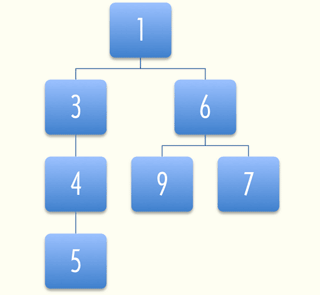
Such structures are usually called trees, because of the way they branch. Now, when you need the smallest element, you just take off the top element and rearrange the tree so that one of the top element’s children — the one with the lowest value — becomes the new top. When inserting new elements, you ‘descend’ the tree until you find an element less than the new element, and insert it there. This takes a lot less searching than a sorted array does, but it has the disadvantage of creating a lot of objects, which also slows things down.
○•○
A binary heap, then, does make use of a sorted array, but it is only partially sorted, much like the tree above. Instead of objects, the positions in the array are used to form a tree, as this picture tries to show:
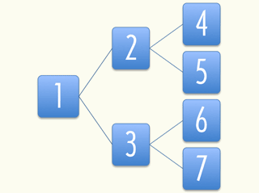
Array element 1 is the root of the tree, array element 2 and 3 are its children, and in general array element X has children X * 2 and X * 2 + 1. You can see why this structure is called a ‘heap’. Note that this array starts at 1, while CoffeeScript arrays start at 0. The heap will always keep the smallest element in position 1, and make sure that for every element in the array at position X, the element at X / 2 (round down) is smaller.
Finding the smallest element is now a matter of taking the element at position 1. But when this element is removed, the heap must make sure that there are no holes left in the array. To do this, it takes the last element in the array and moves it to the start, and then compares it to its child elements at position 2 and 3. It is likely to be greater, so it is exchanged with one of them, and the process of comparing it with its children is repeated for the new position, and so on, until it comes to a position where its children are greater, or a position where it has no children.
[2, 3, 5, 4, 8, 7, 6]
# Take out 2, move 6 to the front.
[6, 3, 5, 4, 8, 7]
# 6 is greater than its first child 3, so swap them.
[3, 6, 5, 4, 8, 7]
# Now 6 has children 4 and 8 (position 4 and 5).
# It is greater than 4, so we swap again.
[3, 4, 5, 6, 8, 7]
# 6 is in position 4, and has no more children.
# The heap is in order again.Similarly, when an element has to be added to the heap, it is put at the end of the array and allowed to ‘bubble’ up by repeatedly exchanging it with its parent, until we find a parent that is less than the new node.
[3, 4, 5, 6, 8, 7]
# Element 2 gets added again, it starts at the back.
[3, 4, 5, 6, 8, 7, 2]
# 2 is in position 7, its parent is at 3, which
# is a 5. 5 is greater than 2, so we swap.
[3, 4, 2, 6, 8, 7, 5]
# The parent of position 3 is position 1.
# Again, we swap.
[2, 4, 3, 6, 8, 7, 5]
# The element can not go further than position 1,
# so we are done.Note how adding or inserting an element does not require it to be compared with every element in the array. In fact, because the jumps between parents and children get bigger as the array gets bigger, this advantage is especially large when we have a lot of elements36.
○•○
Here is the full code of a binary heap implementation. Two things to note are that, instead of directly comparing the elements put into the heap, a function (scoreFunction) is first applied to them, so that it becomes possible to store objects that can not be directly compared. The default is the identity function.
Also, because CoffeeScript arrays start at 0, and the parent/child calculations use a system that starts at 1, there are a few strange calculations to compensate.
class BinaryHeap
# Public
#--------
constructor: (@scoreFunction = (x) -> x) ->
@content = []
push: (element) ->
# Add the new element to the end of the array.
@content.push element
# Allow it to bubble up.
@_bubbleUp @content.length - 1
pop: ->
# Store the first element so we can return it later.
result = @content[0]
# Get the element at the end of the array.
end = @content.pop()
# If there are any elements left, put the end
# element at the start, and let it sink down.
if @content.length > 0
@content[0] = end
@_sinkDown 0
result
size: -> @content.length
remove: (node) ->
len = @content.length
# To remove a value, we must search through the
# array to find it.
for i in [0...len]
if @content[i] is node
# When it is found, the process seen in 'pop'
# is repeated to fill up the hole.
end = @content.pop()
if i isnt len - 1
@content[i] = end
if @scoreFunction(end) < @scoreFunction(node)
@_bubbleUp i
else
@_sinkDown i
return
throw new Error 'Node not found.'
# Private
#---------
_bubbleUp: (n) ->
# Fetch the element that has to be moved.
element = @content[n]
# When at 0, an element can not go up any further.
while n > 0
# Compute the parent element index, and fetch it.
parentN = Math.floor((n + 1) / 2) - 1
parent = @content[parentN]
# Swap the elements if the parent is greater.
if @scoreFunction(element) < @scoreFunction(parent)
@content[parentN] = element
@content[n] = parent
# Update 'n' to continue at the new position.
n = parentN
# Found a parent that is less,
# no need to move it further.
else
break
return
_sinkDown: (n) ->
# Look up the target element and its score.
length = @content.length
element = @content[n]
elemScore = @scoreFunction element
loop
# Compute the indices of the child elements.
child2N = (n + 1) * 2
child1N = child2N - 1
# This is used to store the new position of
# the element, if any.
swap = null
# If the first child exists (is inside the array)...
if child1N < length
# Look it up and compute its score.
child1 = @content[child1N]
child1Score = this.scoreFunction child1
# If the score is less than our elements,
# we need to swap.
if child1Score < elemScore
swap = child1N
# Do the same checks for the other child.
if child2N < length
child2 = @content[child2N]
child2Score = @scoreFunction child2
compScore = if swap is null
elemScore
else
child1Score
if child2Score < compScore
swap = child2N
# If the element needs to be moved,
# swap it, and continue.
if swap isnt null
@content[n] = @content[swap]
@content[swap] = element
n = swap
# Otherwise, we are done.
else
break
return
(exports ? this).BinaryHeap = BinaryHeapAnd some test cases…
runOnDemand ->
sortByValue = (obj) -> _.sortBy obj, (n) -> n
buildHeap = (c, a) ->
heap = new BinaryHeap
heap.push number for number in a
c.note heap
declare 'heap is created empty', [],
(c) -> c.assert (new BinaryHeap).size() is 0
declare 'heap pop is undefined when empty', [],
(c) -> c.assert _.isUndefined (new BinaryHeap).pop()
declare 'heap contains number of inserted elements',
[arbArray(arbInt)], (c, a) ->
c.assert buildHeap(c, a).size() is a.length
declare 'heap contains inserted elements',
[arbArray(arbInt)], (c, a) ->
heap = buildHeap c, a
c.assert _.isEqual sortByValue(a), \
sortByValue(heap.content)
declare 'heap pops elements in sorted order',
[arbArray(arbInt)], (c, a) ->
heap = buildHeap c, a
for n in sortByValue a then c.assert n is heap.pop()
c.assert heap.size() is 0
declare 'heap does not remove non-existent elements',
[arbArray(arbInt), arbInt],
expectException (c, a, b) ->
if b in a then c.guard false
heap = buildHeap c, a
heap.remove b
declare 'heap removes existing elements',
[arbArray(arbInt), arbInt], (c, a, b) ->
if not (b in a) then c.guard false
aSort = sortByValue _.without a, b
count = a.length - aSort.length
heap = buildHeap c, a
heap.remove b for i in [0...count]
for n in aSort then c.assert n is heap.pop()
c.assert heap.size() is 0
test()Performance
To give an idea of the relative performance of CoffeeScript for problem solving and number crunching we can compare it with CPython. First a small test of operations on a million floating point numbers.
# CoffeeScript
runOnDemand ->
start = new Date()
N = 1000000
a = Array(N)
for i in [0...N]
a[i] = Math.random()
s = 0
for v in a
s += v
t = 0
for v in a
t += v*v
t = Math.sqrt t
duration = new Date() - start
show "N: #{N} in #{duration*0.001} s"
show "Result: #{s} and #{t}"# CPython
import time
import random
import math
start = time.clock()
N = 1000000
a = [random.random()
for i in range(N)]
s = 0
for v in a:
s += v
t = 0
for v in a:
t += v*v
t = math.sqrt(t)
duration = time.clock() - start
print 'N:', N, 'in', duration, 's'
print 'Result:', s, 'and', t// C++ pointer-free version using standard valarray template.
// LLVM: clang++ -O3 -std=c++0x A3-Microrun.cpp -o mb; ./mb
// Visual 2010 C++: cl /Ox /Ob2 /Oi /Ot /Oy- /EHsc A3-Microrun.cpp
#include <cstdlib>
#include <cmath>
#include <ctime>
#include <valarray>
#include <iostream>
using namespace std;
inline double rand01() {
return static_cast<double>(rand()) /
static_cast<double>(RAND_MAX);
}
void test() {
clock_t start = clock();
static const size_t N = 1000000;
valarray<double> a(N);
for (size_t i = 0; i < N; ++i)
a[i] = rand01();
double s = a.sum();
double t = sqrt((a*a).sum());
double duration = (clock() - start) /
static_cast<double>(CLOCKS_PER_SEC);
cout << "N: " << N << " in " << duration << "s" << endl;
cout << "Result: " << s << " and " << t << endl;
}
int main() {
srand(static_cast<unsigned int>(time(NULL)));
test();
return 0;
}The source code and the results are quite similar. On my machine the time for CoffeeScript is about 0.41s and around 1.03s for CPython. You can try it yourself with coffee A3-Microbench.coffee and if you have CPython installed python A3-Microtest.py. C++ is 10 × to 30 × faster.
○•○
Below you can find implementations37 for the classic 8 queens problem. The objective is to place eight queens on a chessboard without any of the queens occupying the same row, column or diagonal. The two implementations use the same algorithm and produce the same results. Timing for CPython 0.27s and for CoffeeScript 0.06s.
# CoffeeScript encoding: utf-8
# Create variations to try
permute = (L) ->
n = L.length
return ([elem] for elem in L) if n is 1
[a, L] = [ [L[0]], L.slice 1 ]
result = []
for p in permute L
for i in [0...n]
result.push p[...i].concat a, p[i...]
result
# Check a variation
test = (p, n) ->
for i in [0...n - 1]
for j in [i + 1...n]
d = p[i] - p[j]
return true if j - i is d or i - j is d
false
# N queens solver
nQueen = (n) ->
result = []
for p in permute [0...n]
result.push p unless test p, n
result
# Repeat a string a number of times
rep = (s, n) -> (s for [0...n]).join ''
# Display a board with a solution
printBoard = (solution) ->
board = "\n"
end = solution.length
for pos, row in solution
board += "#{end - row} #{rep ' ☐ ', pos} " +
"♕ #{rep ' ☐ ', end - pos - 1}\n"
# Using radix 18 hack!
board += ' ' + (n.toString 18 \
for n in [10...18]).join(' ').toUpperCase()
board + "\n"
# Find all solutions
solve = (n) ->
for solution, count in nQueen n
show "Solution #{count+1}:"
show printBoard solution
count
runOnDemand ->
start = new Date()
solve 8 # Normal chessboard size
show "Timing: #{(new Date() - start)*0.001}s"# CPython encoding: utf-8
def permute(L):
"Create variations to try"
n = len(L)
if n == 1:
for elem in L:
yield [elem]
else:
a = [L.pop(0)]
for p in permute(L):
for i in range(n):
yield p[:i] + a + p[i:]
def test(p, n):
"Check a variation"
for i in range(n - 1):
for j in range(i + 1, n):
d = p[i] - p[j]
if j - i == d or i - j == d:
return True
return False
def n_queen(n):
"N queens solver"
for p in permute(range(n)):
if not test(p, n): yield p
# Start columns from A
base_char = ord('A')
def print_board(solution):
"Display a board with a solution"
board = []
end = len(solution)
for row, pos in enumerate(solution):
board += ["\n%s %s ♕ %s" % ((end - row),
(' ☐ ' * pos),
(' ☐ ' * (end - pos - 1)))]
# Using character set hack!
board += '\n ' + \
' '.join([chr(base_char+i)
for i in range(0, end)])
return ''.join(board) + '\n'
def solve(n):
"Find all solutions"
for count, solution in enumerate(n_queen(n)):
print "Solution %d:" % count
print print_board(solution)
return count
import time
t=time.clock()
solve(8) # Normal chessboard size
print "Timing: ", time.clock()-t, "s"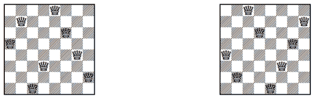
Command Line Utility
The utility used to remove solutions from source files is shown here. Partly as an example of a command line program, partly to make this book and its accompanying source code self-containing.
The program uses the asynchronous file system functions in the same manner as server programs. The synchronous functions are more conventional, but less illustrative.
fs = require "fs"
show = console.log
String::contains = (pattern) ->
///#{pattern}///.test this
leadingWhitespace = (str) ->
(str.match /(\s*)\w/)[1] ? ""
errorWrapper = (action) ->
(err, args...) ->
if err then throw err
action args...
ifFileExists = (filename, action) ->
fs.stat filename, errorWrapper (stat) ->
if stat.isFile() then action()
getFileAsLines = (filename, action) ->
ifFileExists filename, ->
fs.readFile filename, "utf8",
errorWrapper (content) ->
action content.split "\n"
saveFile = (filename, content) ->
fs.writeFile filename, content,
errorWrapper -> show "Saved #{filename}"
stripSolutions = (lines) ->
out = ""
inSolution = false
concat = (str) -> out += str + "\n"
for line in lines
if line.contains "'— Exercise \\d+ —'"
inSolution = true
concat line
indent = leadingWhitespace line
concat "#{indent}process.exit()" +
" # Replace this line with your solution"
else if inSolution
if line.contains "'— End of Exercise —'"
concat line
inSolution = false
# else ignore line in solution
else
concat line
# Remove trailing newline
out[...out.length-1]
stripFile = (fromName, toName) ->
if fromName?
getFileAsLines fromName, (lines) ->
saveFile toName, stripSolutions lines
else
show "Expected a file name " +
"to strip for solutions"
copyFile = (fromName, toName) ->
if fromName?
ifFileExists fromName, ->
fs.readFile fromName, "utf8",
errorWrapper (content) ->
saveFile toName, content,
else
show "Expected a file name to copy"
toDir = "../src-no-solutions"
fs.mkdir toDir, 0777, (err) ->
if err
throw err unless err.code is 'EEXIST'
show "Reusing"
else
show "Created"
fromDir = process.argv[2]
if fromDir?
fs.readdir fromDir, errorWrapper (files) ->
for filename in files
if filename.contains "\\w\\w-\\w+.coffee"
stripFile filename, "#{toDir}/#{filename}"
else
copyFile filename, "#{toDir}/#{filename}"
else
show "Expected a directory with " +
"solutions to strip"
Part V. Reference and Index
Language Reference
Also available as a two page Quick Reference in pdf format.
Refer to coffeescript.org for further reference material and examples.
General
- Whitespace is significant
- Ending a line will terminate expressions - no need to use semicolons
- Semicolons can be used to fit multiple expressions onto a single line
- Use indentation instead of curly braces
{ }to surround blocks of code in functions,ifstatements,switch, andtry/catch - Comments starts with
#and run to the end of the line
Embedded JavaScript
- Use backquotes `` to embed JavaScript code within CoffeeScript
Functions
- Functions are defined by an optional list of parameters in parentheses, an arrow, and an optional function body. The empty function looks like:
-> - Mostly no need to use parentheses to invoke a function if it is passed arguments. The implicit call wraps forward to the end of the line or block expression.
- Functions may have default values for arguments. Override the default value by passing a non-null argument.
Objects and arrays
- Objects and arrays are similar to JavaScript
- When each property is listed on its own line, the commas are optional
- Objects may be created using indentation instead of explicit braces, similar to YAML
- Reserved words, like
class, can be used as properties of an object without quoting them as strings
Lexical Scoping and Variable Safety
- Variables are declared implicitly when used (no
varkeyword). - The compiler ensures that variables are declared within lexical scope. An outer variable is not redeclared within an inner function when it is in scope
- Using an inner variable can not shadow an outer variable, only refer to it. So avoid reusing the name of an external variable in a deeply nested function
- CoffeeScript output is wrapped in an anonymous function, making it difficult to accidentally pollute the global namespace
- To create top-level variables for other scripts, attach them as properties on
window, or toexportsin CommonJS. Use:exports ? this
If, Else, Unless, and Conditional Assignment
if/elsecan be written without parentheses and curly braces- Multi-line conditionals are delimited by indentation
ifandunlesscan be used in postfix form i.e. at the end of the statementifstatements can be used as expressions. No need for?:
Splats
- Splats
...can be used instead of the variable number ofargumentsobject and are available for both function definition and invocation
Loops and Comprehensions
- Comprehensions
for ... inwork over arrays, objects, and ranges - Comprehensions replace for loops, with optional guard clauses and the value of the current array index:
for value, index in array - Array comprehensions are expressions, and can be returned and assigned
- Comprehensions may replace
each/forEach,maporselect/filter - Use a range when the start and end of a loop is known (integer steps)
- Use
byto step in fixed-size increments - When assigning the value of a comprehension to a variable, CoffeeScript collects the result of each iteration into an array
- Return
null,undefinedortrueif a loop is only for side-effects - To iterate over the key and value properties in an object, use
of - Use:
for own key, value of objectto iterate over the keys that are directly defined on an object - The only low-level loop is the
whileloop. It can be used as an expression, returning an array containing the result of each iteration through the loop untilis equivalent towhile notloopis equivalent towhile true- The
dokeyword inserts a closure wrapper, forwards any arguments and invokes a passed function
Array Slicing and Splicing with Ranges
- Ranges can be used to extract slices of arrays
- With two dots
[3..6], the range is inclusive (3, 4, 5, 6) - With three dots
[3...6], the range excludes the end (3, 4, 5) - The same syntax can be used with assignment to replace a segment of an array with new values, splicing it
- Strings are immutable and can not be spliced
Everything is an Expression
- Functions return their final value
- The return value is fetched from each branch of execution
- Return early from a function body by using an explicit
return - Variable declarations are at the top of the scope, so assignment can be used within expressions, even for variables that have not been seen before
- Statements, when used as part of an expression, are converted into expressions with a closure wrapper. This allows assignment of the result of a comprehension to a variable
- The following are not expressions:
break,continue, andreturn
Operators and Aliases
- CoffeeScript compiles
==into===, and!=into!==. There is no equivalent to the JavaScript==operator - The alias
isis equivalent to===, andisntcorresponds to!== notis an alias for!- Logical operator aliases:
andis&&,oris|| - In
while,if/elseandswitch/whenstatements thethenkeyword can be used to keep the body on the same line - Alias for boolean
trueisonandyes(as in YAML) - Alias for boolean
falseisoffandno - For single-line statements,
unlesscan be used as the inverse ofif - Use
@propertyinstead ofthis.property - Use
into test for array presence - Use
ofto test for object-key presence
Existential Operator
- Use the existential operator
?to check if a variable exists ?returnstrueunless a variable isnullorundefined- Use
?=for safer conditional assignment than||=when handling numbers or strings - The accessor variant of the existential operator
?.can be used to soak up null references in a chain of properties - Use
?.instead of the dot accessor.in cases where the base value may benullorundefined. If all of the properties exist then the expected result is returned, if the chain is broken, thenundefinedis returned instead
Classes, Inheritance, and Super
- Object orientation as in most other object oriented languages
- The
classstructure allows to name the class, set the superclass withextends, assign prototypal properties, and define aconstructor, in a single assignable expression - Constructor functions are named as the
classname, to support reflection - Lower level operators: The
extendsoperator helps with proper prototype setup.::gives access to an object’s prototype.super()calls the immediate ancestor’s method of the same name - A class definition is a block of executable code, which may be used for meta programming.
- In the context of a class definition,
thisis the class object itself (theconstructorfunction), so static properties can be assigned by using@property: value, and functions defined in parent classes can be called with:@inheritedMethodName()
Destructuring Assignment
- To make extracting values from complex arrays and objects convenient, CoffeeScript implements destructuring assignment
- When assigning an array or object literal to a value, CoffeeScript breaks up and matches both sides against each other, assigning the values on the right to the variables on the left
- The simplest case is parallel assignment
[a,b] = [b,a] - It can be used with functions that return multiple values
- It can be used with any depth of array and object nesting to get deeply nested properties and can be combined with splats
Function binding
- The fat arrow
=>can be used to define a function and bind it to the current value ofthis - This is helpful when using callback-based libraries, for creating iterator functions to pass to
eachor event-handler functions to use withbind - Functions created with
=>are able to access properties of thethiswhere they are defined
Switch/When/Else
- The
switchstatement do not need abreakafter every case - A
switchis a returnable, assignable expression - The format is:
switchcondition,whenclauses,elsethe default case - Multiple values, comma separated, can be given for each
whenclause. If any of the values match, the clause runs
Try/Catch/Finally
try/catchstatements are as in JavaScript (although they are expressions)
String Interpolation, Heredocs, and Block Comments
- Single-quoted strings are literal. Use backslash for escape characters
- Double-quoted strings allow for interpolated values, using
#{ ... } - Multiline strings are allowed
- A heredoc
'''can be used for formatted or indentation-sensitive text (or to avoid escaping quotes and apostrophes) - The indentation level that begins a heredoc is maintained throughout, so the text can be aligned with the body of the code
- Double-quoted heredocs
"""allow for interpolation - Block comments
###are similar to heredocs, and are preserved in the generated code
Chained Comparisons
- Use a chained comparison
minimum < value < maximumto test if a value falls within a range
Extended Regular Expressions
- Extended regular expressions “heregexes” are delimited by
///and are similar to heredocs and block comments - Extended regular expressions ignore internal whitespace and can contain comments
Reserved Words
Keywords
break by catch
class continue debugger
delete do else
extends false finally
for if in
instanceof loop new
null of return
super switch then
this throw true
try typeof undefined
unless until when
while
Aliases
and : && or : || not : !
is : == isnt : !=
yes : true no : false
on : true off : false
Underscore
General call convention: functional obj, iterator, context.
See the interactive Underscore reference.
Read the annotated source.
QuickCheck
Exported definitions from prelude version of qc.js
- arbChoose
Generator that chooses uniformly among the given generators.
parameter: generators…- arbConst
Generator that always returns one of the given constant values.
parameter: values…- arbBool
Boolean value generator with 50:50 chance of
trueorfalse.- arbNull
Null generator that always generates
null.- arbWholeNum
Integer value generator for values ≥ 0. Supports shrinking.
- arbInt
Integer value generator. Supports shrinking.
- arbFloatUnit
Generator for a floating point value in between 0.0 and 1.0. Supports shrinking.
- arbRange
Integer range value generator.
parameter minimum valueparameter maximum value- arbNullOr
Chooses
nullwith 10% probability and the given generator with 90%. Supports shrinking.parameter another generator- arrShrinkOne
Array shrinking strategy that builds new Arrays by removing one element from a given array.
- arbArray
Array generator. Generates an array of arbitrary length with the given generator.
parameter generator that creates the resulting array values.parameter an optional shrinking strategy. Default is 'arrShrinkOne'.- arbDate
Date value generator. Always generates a new Date object by calling
new Date().- arbMod
Basis generator for arbChar and arbString.
- arbChar
Character value generator for any character with character code in range 32–255.
- arbString
String value generator. All characters in the generated String are in range 32–255. Supports shrinking.
- arbUndef
Generator that always generates
undefined.- arbUndefOr
Chooses undefined with 10% probability and the given generator with 90%. Supports shrinking.
parameter another generator- expectException
Property test function modifier. Using this modifier, it is assumed that the testing function will throw an exception and if not the property will fail.
- failOnException
Property test function modifier. Instead of finishing testing when an unexpected exception is thrown, the offending property is marked as failure and
qcwill continue.- Case
Test case class generated every time a property is tested. An instance of Case is always passed as first argument to a property’s testing function so it can control the test case’s properties.
- Case::assert
Tests and notifies
qcif a property fails or not.parameter pass false, if the property failed, true otherwise- Case::guard
Used to test if the input is good for testing the property.
parameter pass false to mark the property as invalid for the given input.- Case::classify
Adds a tag to a test run.
parameter if true then the tag is added to the case, else not.parameter tag value to add- Case::collect
Collect builds a histogram of all collected values for all runs of the property.
parameter value to collect- Case::noteArg
Adds the given value to the test case for reporting in case of failure.
parameter value to add- Case::note
Same as Case::noteArg but returning its argument so it can be used inline. Defined in prelude.
- Case::noteVerbose
Same as Case::note but also logs the noted args. Defined in prelude.
- declare
Builds and registers a new property.
parameter the property's nameparameter array of generators with a length equal to the arity of the body function. The entry at position i will drive the i-th argument of the body function.parameter body function that test the propertyreturn a new registered property object of type Prop.- testPure
Helper to declare a named test property for a pure function. Defined in prelude.
parameter function to testparameter array of generators matching argument typesparameter a descriptive nameparameter property function which is passed the test-case, the arguments and the result of calling the function being tested. Must return true if the property test succeeded, false otherwise.- Prop
Creates a new property with a given array of argument generators and a testing function. For each generator a value is generated, so for testing a 2-ary function the array must contain 2 generators.
- Prop::run
Tests the property.
parameter configuration of type Config to test property withreturn depending on test result a Pass, Fail or Invalid object- allProps
Internal array of all declared/registered properties
- resetProps
Deletes all declared properties.
- runAllProps
Tests all registered properties.
\parameter configuration of type Config to test the properties with\parameter listener of a subclass of ConsoleListener`- test
Test all known properties with a NodeListener and a configuration of 100 pass and 1000 invalid tests. Defined in prelude.
- Invalid
Report class for invalid tested properties.
- Pass
Report class for successful tested properties.
- Fail
Report class for failed tested properties.
- Stats
Statistics class for counting number of pass/invalid runs, building histograms and other statistics for reporting on a property and its test results.
- Config
Testing Configuration.
\parameter maximum passes per property\parameter maximum invalid tests per property\parameter maximum number of shrinking steps per property`- ConsoleListener
Abstract class for building ‘console’ based listeners.
- NodeListener
Listener with node compatible output in colors. Defined in prelude.
- FBCListener
Listener for sending property results to FireBug’s console
- RhinoListener
Listener for Rhino, sending property results to stdout.
- Distribution
Probability distributions
- genvalue
Draws a new value from a generator. A generator is either a function accepting a seed argument or an object with a method ‘arb’ accepting a seed argument.
- genshrinked
Uses the generator specific shrinking method to shrink a value that the generator created earlier. If the generator is a function or has no method named ‘shrink’ or is an objects with a ‘shrink’ method set to
null, then no shrinking will be performed. If a shrinking method is defined, then it is called with the original seed and the value the generator created. The shrinking method must return an array of ‘shrinked’ values or null, undefined, or an empty array if no ‘shrinked’ values could be created.- justSize
Passes the size ‘seed’ argument used to drive generators directly to the property test function.
- Utilities
A group of utilities that can be used to build generators:
frequency,choose,randWhole,randInt,randRange,randFloatUnit.
Additional Words
Prelude definitions
show globalize
confirm prompt getServerURL
viewURL viewServer stopServer
fileExists readTextFile readBinaryFile
_ kup qcRefer to src/prelude/prelude.coffee for the annotated source.
CoffeeScript environment
Buffer clearInterval clearTimeout
console global GLOBAL
process root setInterval
setTimeoutView the interactive environment with: →∣ / ‘Tab’.
JavaScript future words
abstract boolean byte case
char const default double
enum export final float
function goto implements import
int interface let long
native package private protected
public short static synchronized
throws transient var void
volatile with yield
Footnotes
The runtime environment for this interactive edition is a work in progress. It is itself an interactive literate HTML5 application that contains its own code and documentation: Grimoire.
The interactive edition was created with acme and ssam from plan9port, Pandoc, CodeMirror and CoffeeScript. ↩
The interactive environment requires a web browser with support for HTML5 technologies. Most current desktop browsers (Safari, Firefox, Opera) and Mobile Safari on iOS 5 are fully compatible. Offline reading is enabled on capable browsers.
Chrome 16 and Internet Explorer 9 do not display MathML, but there is very little math in the book anyway. Internet Explorer 9 does not display some of the graphical output (showDocument uses a data URL), so choose another browser if possible; older versions of Internet Explorer are less functional.
A test of the Android 2.3 browser on a mobile device did not result in a usable interactive environment. An upgrade to a newer version was not available.
Used technologies and API’s: EcmaScript 5, canvas with text, data URLs, contenteditable, mathml, offline manifest, localstorage, CSS hyphenation, getElementsByClassName and UTF–8 unicode. This list relates to the interactive environment — CoffeeScript is compatible with a much wider range of browsers and servers including Internet Explorer 6. More information on browser capabilities.
See the web site if you would like a static HTML or PDF version for an e-reader or print. You can also download source files from there. ↩
Some examples are read-only and can not be executed. A few are locked to avoid spoiling exercises, some because they are intended to run on a server, and a few only show a concept without the surrounding program. ↩
Manual evaluation is only intended for net-books and mobile devices without sufficient processing power. It is more inconvenient when you have to remember to evaluate every time you have typed something. In particular code attached to
Runbuttons do not change unless the newly entered program text is evaluated. ↩‘Code’ is the substance that programs are made of. Every piece of a program, whether it is a single line or the whole thing, can be referred to as ‘code’. ↩
Bits are any kinds of two-valued things, usually described as
0s and1s. Inside the computer, they take forms like a high or low electrical charge, a strong or weak signal, a shiny or dull spot on the surface of a CD. ↩If you were expecting something like
10010000here — good call, but read on. CoffeeScript’s numbers are not stored as integers. ↩Actually, 53, because of a trick that can be used to get one bit for free. Look up the ‘IEEE 754’ format if you are curious about the details. ↩
An example of this, if
p = 1/3then6*pis equal to2. Howeverp+p+p+p+p+pis not equal to2because the minute rounding errors increase for every addition. This happens in theforloop shown in the Foreword example, Seed of Life↑. It is a general issue with floating point approximations and not a bug in CoffeeScript. A way of dealing with it is to test if a number is inside a narrow interval instead of testing for an exact match. ↩Note that there is no space between the unary minus and the value. ↩
The bit bucket is supposedly the place where old bits are kept. On some systems, the programmer has to manually empty it now and then. Fortunately, CoffeeScript comes with a fully-automatic bit-recycling system. ↩
In the interactive environment the rules are slightly different. Variables can only be used outside the code block where they are defined if they are named in the
@globalNameslist (defined in Getting Started) or if they are attached explicitly to the global environment i.e. starts with an@-sign or is awindowproperty. This prevents unintended use of variables from earlier chapters and gives a bit of protection from accidental overwrites of system variables. ↩Technically, a pure function can not use the value of any external variables. These values might change, and this could make the function return a different value for the same arguments. In practice, the programmer may consider some variables ‘constant’ — they are not expected to change — and consider functions that use only constant variables pure. Variables that contain a function value are often good examples of constant variables. ↩
Koen Claessen and John Hughes from Chalmers University of Technology created QuickCheck for Haskell and its ideas has since been reimplemented in many other programming languages. The
qclibrary is an implementation for JavaScript by Darrin Thompson. A CoffeeScript compatible version is included in the interactive environment. ↩The ECMAScript standard allows these deviations for JavaScript and thus for CoffeeScript. If you should need unlimited precision integers then either use a third party library or a more mathematically inclined programming language such as Pure. ↩
Maxima is the source of this result. Maxima is a computer algebra system that does symbolic and unlimited precision calculations. ↩
Most JavaScript test tools are compatible with CoffeeScript or can easily be adapted. ↩
Such a function is already present, it is
show. ↩In the underscore library you can find a function
isEqualwhich compares two objects based on all layers of their contents. ↩Some test cases for
startsWithare present in the source code file for this chapter. ↩In Mathematica a function can be set as
Listable— eliminating the need for a loop:
↩f[x_] := If[x > 0, Sqrt[x], Sqrt[-x]]; SetAttributes[f, Listable]; f[{3, 0, -2}] ⇒ {√3, 0, √2}Unfortunately, on at least older versions of the Internet Explorer browser a lot of built-in functions, such as
alert, are not really functions… or something. They report their type as'object'when given to thetypeofoperator, and they do not have anapplymethod. Your own functions do not suffer from this, they are always real functions. ↩In the standalone environment, the prelude has a function
viewURLthat can be used to look at HTML documents. The example document above is stored in the file'06-Quote.html', so you can view it by executing the following code:viewURL '06-Quote.html'You can also run a tiny server from your program or the interactive CoffeeScript environment (REPL). It can serve a webpage either from a string variable or from a file. If you have created a web page in a string variable, say
stroustrupQuotethen you can start the server with:viewServer stroustrupQuoteOr you could give it a filename as its argument. When you are done with the server then you can either type
stopServer()orCTRL-C. ↩Like this… ↩
An extended version can allow arbitrary arguments to be fixed. ↩
Computers are deterministic machines: They always react in the same way to the input they receive, so they can not produce truly random values. Therefore, we have to make do with series of numbers that look random, but are in fact the result of some complicated deterministic computation. ↩
No really, it is. ↩
A few integrated development environments automatically generate diagrams as you are writing your code, for example Visual Studio Ultimate, but it is neither cheap nor compatible with CoffeeScript. ↩
In this case, the backslashes were not really necessary, because the characters occur between
[and], but it is easier to just escape them anyway, so you will not have to think about it. ↩The main examples in this chapter show web and WebSocket servers, to run them you have to install CoffeeScript with the book source code, see Quick CoffeeScript Install. It is optional and you can follow along without running those examples. You can recognize the examples that you can run in the browser; they have a line in them with output below. ↩
The system underlying standard CoffeeScript has an EventEmitter to help you do this. Search for event in the documentation for the runtime system you use to learn more. ↩
Projects such as browserify is aiming at bringing
requireto the browser. ↩How to use a separate test module is shown in Binary Heaps↓. ↩
Depending on your operating system you can also use numerical IP addresses.
127.0.0.1conventionally address your local machine. In ahostsfile you can map names into IP addresses, its location depend on your operating system. ↩If you want to understand how to write your own HTTP server then Manuel Kiessling has a tutorial that you can easily translate into your own CoffeeScript web server. ↩
The amount of comparisons and swaps that are needed — in the worst case — can be approached by taking the logarithm (base 2) of the amount of elements in the heap. ↩
Background information on 8 queens puzzle, implementation and performance. ↩